Prólogo
El viento del este
«Pueblos innumerables y ferocísimos han ocupado la Galia entera. Todo lo que hay entre los Alpes y los Pirineos, entre el océano y el Rin, lo han devastado el cuado, el vándalo, el sármata, el alano…» — San Jerónimo, carta a Ageruquia, año 409
Escandia, en el tiempo de la leyenda – orillas del Rin, diciembre de 406
Los viejos lo contaban en invierno, cuando la nieve tapaba las puertas y no había nada que hacer más que escuchar.
Decían que al principio no estaban aquí. Que sus abuelos, y los abuelos de sus abuelos, habían vivido en una isla del norte, tan al norte que en verano el sol no se acostaba y en invierno no se levantaba. Una tierra de rocas y de pinos negros, rodeada por un mar que se helaba de orilla a orilla, donde el trigo apenas granaba y los hijos nacían más deprisa de lo que la tierra podía darles de comer. Los godos la llamaban Escandia, y decían que de ella habían salido los pueblos como salen las avispas de un panal: muchos, de pronto y con ganas de picar.
Contaban que un rey llamado Berig mandó echar al mar tres barcos y que en ellos cruzó el pueblo entero hacia la costa del sur. Que dos barcos llegaron juntos y el tercero se rezagó, y que la gente de aquel barco lento se quedó con el mote de perezosos para siempre. Contaban que los vándalos habían salido de las mismas costas, o de otras parecidas, y que antes de ser vándalos habían tenido otro nombre que ya nadie recordaba. Contaban que los dioses viejos, Wodan y su mujer Frea, miraban desde lo alto aquellas marchas y escogían a quién darle la victoria según quién se les pusiera delante al salir el sol.
Nadie sabía si era verdad. Los viejos tampoco. Pero lo contaban igual, porque un pueblo que no sabe de dónde viene no sabe quién es.
Lo que sí era verdad es que llegaron al sur y se quedaron. Los godos junto al río Vístula, los vándalos en los bosques y las vegas del Óder, y los suevos un poco más al oeste, a lo largo del Elba, donde ya vivían desde mucho antes de que nadie se acordara. Talaron, araron, criaron cerdos y vacas. Aprendieron a trabajar el hierro mejor que nadie. Recogían en las playas del norte el ámbar, la piedra de miel que arde y huele a resina, y lo bajaban por los ríos hasta la frontera de un imperio del que al principio solo conocían las monedas y el vino: Roma. Pasaron generaciones. Los nombres de los dioses cambiaron poco, y los de los reyes mucho. La isla del norte se fue haciendo cuento.
Y durante siglos aquellas tierras fueron suyas. Hasta que el mundo volvió a moverse.
Esta vez no empezó en el norte, sino en el este. Tan lejos que ninguno de los que cruzaron el río aquella noche llegó a saberlo entero.
Empezó en la hierba. En un mar de hierba sin orillas que va desde el Danubio hasta donde sale el sol, donde el viento no encuentra nada que lo pare en mil leguas y los hombres miden la riqueza en caballos. Allí, junto al río que los griegos llamaban Tanais, vivían los alanos. No tenían casas ni las querían. Vivían en carros cubiertos de corteza y de fieltro, que movían detrás del ganado cuando se acababa el pasto, y decían que una casa es una tumba para un hombre vivo. No tenían templos. Clavaban una espada desnuda en la tierra y a ella rezaban, porque la espada era su dios. Despreciaban a los viejos que morían en la cama, y llamaban dichoso al que caía en la batalla. Eran altos, de pelo claro, y los romanos que alguna vez los vieron dijeron que su mirada daba miedo aunque no estuvieran enfadados.
Eran el pueblo más temido de la estepa. Hasta que llegó otro.
Nadie sabe bien de dónde salieron los hunos. Los alanos dijeron después que habían brotado de la niebla del este, de más allá de los pantanos, como una plaga. Eran jinetes que parecían nacidos sobre el caballo: comían en él, dormían en él, negociaban sin bajarse de él. Tiraban con arcos cortos y curvos que mandaban la flecha más lejos que ningún arco conocido, y no cargaban de frente como los hombres honrados, sino que llegaban, herían y se iban, y volvían cuando el enemigo ya los creía lejos. Hacia el año 370 cayeron sobre los alanos del Tanais. Los mataron por miles. A los que quedaron vivos se los llevaron con ellos, y los alanos aprendieron lo que ningún alano había aprendido nunca: lo que es huir.
Unos se doblaron y cabalgaron con los hunos. Otros cogieron sus carros y se fueron hacia el oeste, a donde el sol se pone, a donde está lo que queda de la luz.
Y al oeste estaban los godos.
Los godos tenían un rey viejo y glorioso, Ermanarico, que mandaba sobre más pueblos de los que podía contar. Cuando le llegó la noticia de lo que venía del este, hizo lo que se hacía entonces: reunir a los suyos y esperar. Pero los hunos no esperaban. Arrasaron las aldeas godas una detrás de otra, y el viejo rey, que había vencido a todos los que se le habían puesto delante, comprendió que esta vez no podría, y se quitó la vida antes de verlo. Su pueblo se partió como un tronco seco.
En el año 376 los romanos de la frontera del Danubio vieron en la orilla norte algo que no habían visto nunca. Una muchedumbre de godos, con mujeres, niños, carros y ganado, que llenaba la ribera hasta donde alcanzaba la vista, tendía las manos hacia el Imperio y pedía que la dejaran pasar. No pedían guerra. Pedían tierra y no morir. El emperador Valente les dejó cruzar, porque necesitaba soldados. Los funcionarios romanos les vendieron perros para comer a cambio de sus hijos. Dos años después, en Adrianópolis, los godos mataron al emperador y a dos tercios de su ejército en una tarde de agosto, y el mundo supo que el Imperio ya no era invencible.
Pero esta historia no es la de los godos.
La estepa siguió empujando. Cuando un pueblo se movía, empujaba al de al lado, y aquel al siguiente, como una ola que va de orilla a orilla de un estanque. Detrás de los godos, en las llanuras del Tisza y en los bosques de más al norte, vivían los vándalos, partidos en dos ramas. Los asdingos, que tenían reyes de una sola familia, criaban caballos en la llanura húngara. Los silingos vivían más arriba, en las tierras de bosque y río que mil años después se llamarían Silesia. Al lado de ellos, a lo largo del Danubio y en las colinas de Moravia, estaban los suevos, que eran muchos pueblos con un solo nombre: cuados y marcomanos, gentes que se anudaban el pelo sobre la sien derecha para que se les reconociera de lejos y que llevaban siglos asomándose a la frontera de Roma, unas veces para comerciar y otras para saquear.
Durante treinta años aguantaron. Treinta años de malas cosechas, de jinetes hunos cobrando tributo, de rumores que llegaban del este en invierno y de aldeas que una mañana amanecían vacías. Los niños que nacían oían hablar de los hunos antes de saber andar. Las madres los callaban diciendo: «Que vienen». Y nadie preguntaba quién.
En el año 405 un jefe godo llamado Radagaiso no aguantó más. Reunió a todos los que quisieron seguirle, que fueron decenas de miles, y bajó con ellos a Italia, a la propia casa del emperador. No volvió. El general Estilicón, que gobernaba el Imperio de Occidente en nombre de un emperador niño, lo cercó en las colinas de Fiésole en el verano de 406, le cortó la cabeza y vendió a sus hombres por esclavos. Vendió tantos que en los mercados de Italia un hombre se compraba por una sola moneda de oro, como se compra una res.
Pero para salvar Italia Estilicón había tenido que vaciar la frontera. Se llevó las legiones de la Galia. Dejó las torres del Rin con guarniciones de viejos, de reclutas y de francos, que eran bárbaros pagados para vigilar a otros bárbaros. Y los pueblos de más allá del río lo supieron, porque esas cosas se saben siempre.
Así que aquel año se pusieron en marcha. No todos a la vez ni todos por lo mismo. Los vándalos asdingos con su rey Godegisel, los silingos detrás. Los alanos que no habían querido doblarse ante los hunos, con sus reyes Respendial y Goar. Los suevos de las colinas, con sus carros de bueyes y sus semillas guardadas en sacos de cuero, porque algunos no iban a la guerra: iban a buscar un sitio donde sembrar. Subieron por los valles del Meno y del Neckar, se juntaron en la orilla derecha del Rin, frente a la ciudad romana de Mogontiacum, y allí esperaron, porque el río es ancho y frío y no tenían barcos.
Eran muchos. Nunca nadie los contó. Los romanos que los vieron desde la muralla dijeron que cien mil, doscientos mil, que llenaban el horizonte. Los que estaban dentro no se sentían tantos. Se sentían cansados, y con hambre, y con miedo de lo que dejaban atrás más que de lo que tenían delante.
Aquel invierno fue de los malos. La nieve llegó pronto. El viento del este, el mismo que había traído a los hunos, bajó por los valles con un frío que partía las piedras. Los viejos dijeron que no recordaban nada igual. Los niños se dormían pegados a los bueyes para no helarse. Y una mañana de finales de diciembre los que se asomaron a la orilla vieron que el Rin, el gran río que había sido la frontera de Roma durante cuatrocientos años, ya no corría.
Estaba quieto. Estaba blanco. Se podía andar sobre él.
En la otra orilla, las hogueras de los centinelas romanos parecían muy pequeñas.
La última noche del año empezaron a cruzar.
El hielo
Orilla derecha del Rin, frente a Mogontiacum – última noche del año 406
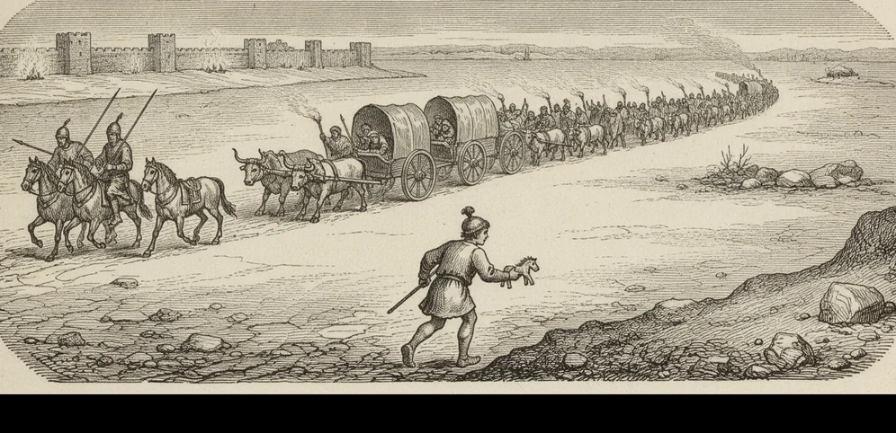
Los suevos
El padre los despertó antes de que hubiera luz, y Teudo supo por su cara que era hoy.
No dijo nada. Le puso la mano en el hombro, apretó una vez y salió del refugio de ramas a ver los bueyes. Teudo se quedó quieto debajo de las pieles, escuchando. Fuera crujía todo: la nieve bajo las botas, los ejes de los carros, el aliento de los animales. Hasta el silencio crujía. Hacía tanto frío que dolía respirar por la nariz.
A su lado dormía Ricila, hecho un ovillo contra la espalda de la madre. Tenía cinco años y dormía como duermen los niños pequeños, con la boca abierta y los puños cerrados, como si en sueños tuviera que agarrarse a algo. Teudo tenía diez y ya no dormía así. Desde que salieron de las colinas, en otoño, dormía a trozos, con un ojo abierto, igual que el padre.
—Teudo —dijo la madre sin moverse—. Ve a por agua mientras haya.
No había agua. Había hielo. Teudo cogió el caldero de cobre y el hacha pequeña y bajó entre los carros hacia el río, por un sendero que miles de pies habían convertido en barro duro como piedra. El campamento se extendía a lo largo de la orilla hasta donde alcanzaba la vista, una ciudad de carros, de fuegos mal encendidos, de perros flacos y de gente envuelta en todo lo que tenía. Algunos llevaban ahí desde antes de la luna nueva. Habían llegado de todas partes: suevos de las colinas como ellos, que se anudaban el pelo sobre la sien derecha; vándalos de las llanuras, más altos, que hablaban casi igual pero cantaban distinto; y los alanos, que no se parecían a nadie, que vivían en sus carros cubiertos de fieltro y no se bajaban del caballo ni para mear.
Abajo, el río.
Teudo lo había visto el primer día, cuando llegaron, y le había dado miedo. Era más ancho que cualquier cosa que hubiera visto, gris y rápido, con remolinos que arrastraban ramas y trozos de hielo. Al otro lado, lejos, se veían unas murallas y unas torres, y de noche, unos fuegos pequeños. El padre había dicho que aquello era Roma. Teudo había preguntado si Roma era una ciudad o un rey o un dios, y el padre se había quedado pensando y había dicho: «Las tres cosas».
Ahora el río no se movía. Era una llanura blanca y quieta, con grietas como venas y montones de nieve que el viento había ido amontonando. Unos hombres ya andaban por encima, a lo lejos, tanteando con lanzas, golpeando el hielo con los pies. Teudo partió el hielo de la orilla con el hacha, llenó el caldero de trozos y se quedó un momento mirando a esos hombres. Andaban sobre el agua. Pensó que si se lo contaba a su abuelo, que se había quedado en las colinas porque ya no podía andar, no se lo iba a creer.
Cuando volvió, el padre ya había uncido los bueyes. Eran dos, Rojo y el Viejo, y eran lo único que les quedaba de lo que habían tenido. La vaca se la habían comido en noviembre. El carro llevaba lo que importaba: los sacos de cuero con la semilla de cebada y de trigo, que nadie podía tocar aunque tuviera hambre; el telar desmontado de la madre; las herramientas; dos lanzas; las pieles. Y debajo de todo, envuelto en un trapo, el cuchillo del abuelo, con el mango de hueso.
—Hoy no se come —dijo el padre—. Se come al otro lado.
Nadie protestó. La madre derritió el hielo y les dio agua tibia con un poco de grasa, y Ricila se la bebió medio dormido y preguntó si ya habían llegado.
—Todavía no —dijo la madre—. Hoy cruzamos el río.
—¿Por encima?
—Por encima.
Ricila abrió mucho los ojos y se despertó del todo.
Esperaron casi todo el día. Cruzar no era solo echar a andar. Los jefes discutían, iban y venían, mandaban gente a mirar el hielo y gente a mirar las murallas del otro lado, y la noticia corría de carro en carro, cambiada cada vez: que los romanos no tenían soldados, que los tenían escondidos, que el hielo aguantaba un carro pero no dos, que aguantaba cien. Al mediodía oyeron gritos río arriba, donde acampaban los vándalos, y un ruido que Teudo no supo qué era hasta que el padre se puso de pie de golpe y dijo, muy bajo: «Hierro». Era ruido de pelea, lejos. El padre cogió una lanza y se quedó mirando hacia allí con la mandíbula apretada hasta que el ruido paró. Luego volvió a sentarse y no explicó nada.
Empezaron a moverse cuando ya caía la tarde.
El padre iba delante de los bueyes, tirando del Viejo por el ronzal. La madre iba al lado del carro con Ricila en brazos. Teudo iba detrás, con una vara, porque su trabajo era que Rojo no se parase. Delante, detrás, a los lados, cientos de carros bajaban la orilla a la vez, despacio, y entraban en el hielo.
El ruido cambió. Teudo lo notó en los pies antes que en los oídos. La tierra sonaba sorda; el hielo sonaba hueco, como el tronco de un árbol podrido. Cada paso de los bueyes hacía un golpe que bajaba hacia el agua negra de debajo y no volvía. A veces, lejos, se oía un crujido largo, como un trueno pequeño, y toda la gente se quedaba quieta a la vez, mil caras mirando el suelo, y luego, poco a poco, volvían a andar.
—No mires abajo —le dijo el padre sin volverse—. Mira la espalda del buey.
Teudo miró la espalda del buey. Tenía escarcha en el pelo. El viento soplaba de lado, del este, y traía nieve fina que se metía en los ojos.
A mitad del río, Ricila empezó a llorar.
No lloraba por miedo. Lloraba porque se le había caído algo. La madre intentó callarlo, pero él se retorcía y señalaba hacia atrás, hacia el hielo, y repetía una palabra que Teudo tardó en entender: «El caballo. El caballo».
Era un caballito de madera. El abuelo se lo había tallado con ese mismo cuchillo de mango de hueso, la noche antes de que se fueran, sentado junto al fuego con las manos que ya le temblaban. Tenía las patas cortas y una crin de pelo de vaca pegada con resina. Ricila no lo soltaba nunca. Lo había llevado agarrado todo el viaje, en el puño, dormido y despierto, y ahora estaba ahí atrás, en el hielo, un punto oscuro entre la nieve pisoteada, y los carros de detrás venían hacia él.
—Déjalo —dijo la madre—. Ya te hará otro el padre.
Pero el padre no sabía tallar. Todos lo sabían. Y el abuelo estaba en las colinas, y no iba a tallar nada nunca más.
Teudo no lo pensó. Dejó la vara apoyada en el carro y echó a correr hacia atrás.
Oyó gritar a la madre. Oyó al padre decir su nombre una vez, fuerte. No se paró. Corrió entre la gente que venía de frente, esquivando piernas, bueyes, un hombre que le dio un empujón, una mujer que le gritó algo en vándalo. Resbaló, cayó de rodillas, se levantó. El hielo bajo él crujió y él no supo si había sido de verdad o si lo había oído dentro de la cabeza. Vio el caballito justo cuando una rueda de carro estaba a un paso de él. Se tiró al suelo, lo cogió y rodó, y la rueda pasó tan cerca que notó el aire.
Se quedó tumbado un momento sobre el hielo, boca arriba, con el caballito apretado contra el pecho. Arriba, el cielo era blanco. Debajo de su espalda, a un palmo, corría el agua. Lo sintió. Juraría toda su vida que la sintió correr.
Cuando volvió, el padre le dio una bofetada que le volvió la cara, y luego lo abrazó tan fuerte que le dolieron las costillas. No dijo nada. La madre lloraba. Ricila cogió el caballito con las dos manos, lo miró, comprobó que tenía las cuatro patas, y dejó de llorar como si alguien hubiera cerrado una puerta.
Llegaron a la otra orilla cuando ya era de noche. Teudo no se acordó después de cómo subieron la pendiente, ni de cómo se encendió el fuego. Se acordó de una sola cosa: que al pisar la tierra del otro lado se dio la vuelta y miró el río, y que el río seguía blanco, quieto, cubierto de gente y de antorchas, y que de pronto le pareció que no era un río, sino una puerta. Y que la habían cruzado. Y que detrás ya no había nada.
Los vándalos
Los francos llegaron con la primera luz, cuando las mujeres estaban encendiendo los fuegos.
Gisa estaba agachada junto a las brasas con la niña sujeta a la espalda en un paño, soplando para que prendiera la leña húmeda, cuando oyó a los perros. No ladraban como ladran a un zorro. Ladraban todos a la vez, hacia el bosque, y luego se callaron todos a la vez, y ese silencio fue lo que le hizo levantarse.
—Guntario.
Su marido ya estaba de pie. Tenía la espada en la mano, la de su padre, y el escudo de tilo pintado de rojo en el otro brazo. Detrás de él, por todo el campamento de los asdingos, los hombres salían de los carros a medio vestir, cogiendo lo que tenían cerca. Alguien tocó un cuerno. Lejos, entre los árboles de la orilla, se veían formas moviéndose, muchas, y un brillo que Gisa conocía: hachas.
—Al carro —dijo Guntario—. Métete debajo de las pieles con Asta. No salgas.
—Guntario...
Él la miró un instante. Tenía la barba blanca de escarcha y los ojos muy tranquilos, los ojos que ponía cuando algo era muy grave, los mismos que había puesto cuando murió su primer hijo, el que no llegó a cumplir el año. Le tocó la cara a la niña con un dedo.
—No salgas.
Y se fue.
Gisa no se metió debajo de las pieles. Se metió en el carro, sí, porque no era tonta, pero se quedó de rodillas junto a la abertura de la lona, con la niña en brazos, mirando. Asta tenía dos años y no entendía nada. Miraba también, con la boca abierta, agarrada al pelo de su madre.
Los francos eran gente del río. Vivían en esta orilla desde hacía mucho, y Roma les pagaba en oro y en trigo para que guardaran la frontera de los que venían de más allá. Eso decían los hombres. Gisa nunca había visto uno de cerca. Ahora los vio salir del bosque corriendo, sin caballos, con escudos redondos y unas hachas cortas que lanzaban de lejos dando vueltas, y que se clavaban en los escudos vándalos y los partían, o se clavaban en los hombres. Gritaban algo en una lengua que se parecía a la suya, y eso fue lo peor: que casi se entendía.
Los vándalos fueron a su encuentro sin formar, como pudieron. Gisa vio a Guntario entre ellos, el escudo rojo, y luego dejó de verlo.
No supo cuánto duró. Mucho. El ruido no se parecía a nada: un golpear de madera y hierro que no paraba, gritos, caballos relinchando, el cuerno sonando una y otra vez. Hombres que volvían hacia los carros cojeando, sangrando, y otros que no volvían. En el carro de al lado una mujer joven cantaba en voz baja, sin parar, una canción de cuna, con los ojos cerrados. Gisa se dio cuenta al cabo de un rato de que ella también estaba cantando.
A media mañana pasó corriendo entre los carros un muchacho con la cara llena de sangre gritando que el rey había caído. Godegisel. El rey de los asdingos, el que los había traído hasta aquí. Gisa lo había visto una sola vez, de lejos, un hombre gordo y viejo con un manto azul. Muerto. Las mujeres empezaron a gemir, y el gemido corrió de carro en carro, y Gisa apretó a la niña y pensó, con una claridad que le dio vergüenza: «Que se muera el rey. Que no se muera Guntario».
Entonces los francos llegaron a los carros.
Los vio a veinte pasos. Eran cinco o seis, y uno llevaba un hacha llena de sangre hasta el mango, y miraba los carros como se mira un huerto. Gisa sacó el cuchillo del cinto. Era un cuchillo de cocina, para la carne. Puso a Asta detrás de ella, contra los sacos, y se quedó de rodillas en la abertura, con el cuchillo delante, y pensó que al primero que subiera le iba a abrir la cara.
Y entonces la tierra empezó a temblar.
No lo oyó: lo sintió. Por las rodillas, por las manos apoyadas en las tablas del carro. Un temblor que venía del sur, de río abajo, y que crecía. Los francos se quedaron quietos y miraron hacia allí. Gisa miró también.
Por la orilla, entre la niebla, venían caballos. Cientos. Miles, le pareció después, aunque no sabía contar tanto. Jinetes altos, con lanzas largas como dos hombres, con cascos puntiagudos y unas capas que volaban detrás, y venían sin gritar, en silencio, a galope tendido, con el ruido de los cascos subiendo del suelo como un trueno que no termina.
Los alanos.
Los francos echaron a correr. No les dio tiempo. Gisa vio cómo la primera fila de jinetes entraba en ellos como entra un cuchillo en la manteca, y apartó la cara, y tapó los ojos a la niña, que no lloraba, que miraba todo con la boca abierta, y que luego, cuando fue mayor, juraría que se acordaba de los caballos, aunque eso no era posible.
Guntario volvió al atardecer.
Volvió andando, apoyado en un hombre que Gisa no conocía. Un muchacho. Un alano, alto y flaco, con la cara curtida por el viento y el pelo claro, casi blanco, recogido atrás. Llevaba a Guntario medio a hombros. Guntario tenía una herida en el muslo, atada con un trapo, y la cara gris, y cuando vio a Gisa sonrió como un tonto.
—Este —dijo, señalando al muchacho con la barbilla—. Este me ha sacado de debajo de tres francos.
El muchacho no dijo nada. No entendía su lengua, o no del todo. Dejó a Guntario sentado contra la rueda del carro, se enderezó y se quedó mirando a la niña, que lo miraba desde los brazos de Gisa, muy seria.
Guntario se llevó la mano al hombro, al manto, y se soltó la fíbula. Era un broche de bronce con forma de pájaro, con dos piedras rojas por ojos, que había sido de su padre y del padre de su padre. Se la tendió al muchacho.
El alano la miró. Negó con la cabeza.
Guntario insistió. Le cogió la mano, le puso la fíbula en la palma y le cerró los dedos encima. Le dijo algo despacio, en vándalo, mirándole a los ojos, y Gisa, que lo oyó, supo que no era una frase de cortesía, sino una de las que no se dicen dos veces en la vida.
—Mi casa es tu casa. Mientras yo viva y mientras viva mi sangre.
El muchacho se quedó un momento con el puño cerrado. Luego asintió una sola vez, se dio la vuelta y se fue hacia los caballos sin mirar atrás.
Esa noche, mientras los suevos y los alanos empezaban a cruzar el río, los asdingos se quedaron en la orilla enterrando a sus muertos en el suelo helado, con picos, a la luz de las hogueras. Eran tantos que no les dio tiempo a enterrarlos a todos. Gisa ayudó a lavar a la mujer joven del carro de al lado, la que cantaba, a la que un hacha le había alcanzado la cabeza a media tarde cuando creía que ya había pasado todo. No sabía su nombre. Nunca lo supo.
Asta durmió toda la noche. Al despertar, por la mañana, lo primero que hizo fue señalar hacia el río y decir: «Caballos».
Los alanos
Arsak tenía dieciocho años y era la primera vez que cargaba de verdad.
Había combatido antes. Escaramuzas, robos de ganado, persecuciones en la llanura, flechas tiradas de lejos a gente que huía. Eso sabía hacerlo cualquier alano desde los doce años. Pero una carga, una carga de verdad, con toda la caballería del rey Respendial en una sola línea, lanza contra lanza, rodilla contra rodilla, eso no lo había hecho nunca. Su padre sí. Su padre había cargado contra los godos, contra los romanos y contra los hunos, y tenía la cara cosida de cicatrices, y decía que la primera vez uno no se entera de nada y que eso era una suerte.
Tenía razón.
Estaban río abajo, a media mañana de camino, cuando llegó el jinete vándalo con el caballo reventado y la noticia: los francos habían caído sobre los asdingos, el rey Godegisel estaba muerto, los vándalos se deshacían. Respendial no lo pensó mucho. Los alanos no lo pensaban nunca mucho. Ordenó montar, y en lo que se tarda en ensillar un caballo, cuatro mil jinetes estaban en marcha por la orilla, al trote primero, luego más rápido.
Arsak iba en la tercera fila, al lado de su padre. Llevaba el kontos, la lanza larga de fresno, apoyada en el hombro, y la espada del lado izquierdo, y debajo de la túnica, colgada del cuello, la bolsita de cuero con la tierra de la tumba de su madre, junto al Tanais, que no había visto nunca porque había nacido ya en el camino. Su padre le había dicho que esa tierra lo protegería. Arsak no lo creía del todo, pero la llevaba igual.
Antes de salir, como siempre, el padre había clavado la espada en la tierra helada y los dos se habían arrodillado delante, un momento, sin decir nada. Así se rezaba. No hacía falta decir nada; la espada ya sabía.
Vieron a los francos desde lejos, entre la niebla de la orilla: una masa oscura de hombres a pie metida entre los carros de los vándalos. Nadie dio una orden. No hacía falta. La línea se fue abriendo sola, los caballos se pusieron al galope, las lanzas bajaron todas a la vez, y Arsak bajó la suya y la sujetó con las dos manos contra el costado del caballo como le habían enseñado, y dejó de pensar.
Después no se acordó del choque. Se acordó de antes y de después, pero no del momento. Se acordó de un franco con un hacha levantada que lo miraba con la boca abierta, muy joven, más joven que él. Y luego se acordó de que el kontos ya no estaba en sus manos y de que tenía la espada, y de que el caballo estaba metido entre gente que gritaba, y de que el brazo le subía y le bajaba solo.
Fue entonces cuando vio al vándalo.
Estaba en el suelo, junto a un carro volcado, con un escudo rojo partido en dos. Tenía tres francos encima. Se defendía tumbado, con la espada corta, como un oso acorralado, y uno de los francos ya le había dado en la pierna y levantaba el hacha otra vez. Arsak no lo pensó. Tiró de las riendas, echó el caballo encima de los tres, golpeó al del hacha en la nuca con el canto de la espada, y el franco cayó. Los otros dos huyeron. Arsak saltó del caballo, cogió al vándalo por debajo de los brazos y lo arrastró contra el carro, y el vándalo le agarró la muñeca con una fuerza que no parecía de herido y le dijo algo que Arsak no entendió.
Lo llevó a su campamento al atardecer, cuando ya no quedaban francos vivos en la orilla. Pesaba como un buey. Hablaba todo el rato. Tenía una mujer de ojos grises que lo esperaba en un carro con un cuchillo de cocina en la mano, y una niña pequeña que no lloraba y que miró a Arsak como si quisiera acordarse de su cara.
Luego, el vándalo le dio la fíbula.
Arsak no la quería. Un alano no cobra por salvar a un hombre en la batalla. Pero el vándalo no le soltaba la mano y le decía algo serio, despacio, mirándole a los ojos, y Arsak entendió lo bastante para saber que, si la rechazaba, le ofendería. Así que la guardó.
Esa noche, mientras los suyos cruzaban el río, se la enseñó a su padre junto al fuego. Era un pájaro de bronce con dos piedras rojas por ojos, frío al tacto, gastado por los dedos de mucha gente.
—Un vándalo —dijo el padre, y le dio vueltas entre los dedos—. Te ha dado su casa.
—No la quiero.
—Ya —dijo el padre, y se la devolvió—. Pero ahora la tienes.
Cruzaron el Rin al amanecer del primer día del año. El hielo crujía bajo los cascos y los caballos resoplaban de miedo, con las orejas atrás, y Arsak bajó a pie y llevó al suyo de la rienda, hablándole bajo, como se habla a un niño. A mitad del río miró hacia atrás. En la orilla que dejaban se veían todavía las hogueras de los vándalos y unos bultos alineados en la nieve que eran muertos esperando su turno para la tierra.
Llevaba la fíbula en el puño, dentro de la manga. No la había soltado en toda la noche. No sabía por qué.
Al otro lado le esperaba la Galia, y Roma, y todo lo que había en el mundo. Arsak tenía dieciocho años y una espada y un caballo, y por primera vez en su vida tenía también una casa, aunque no supiera dónde estaba.
La ciudad
Mogontiacum, orilla izquierda del Rin – enero de 407
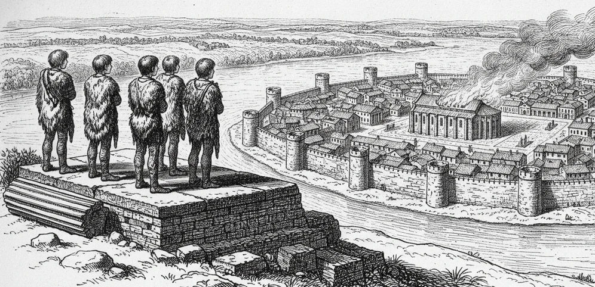
Los suevos
La ciudad tardó tres días en caer, y Teudo la vio caer desde lejos, sentado en la lanza del carro.
Nunca había visto una muralla. En las colinas las casas eran de madera y barro, con el tejado de paja hasta el suelo, y la empalizada de la aldea era de troncos que el padre y los vecinos habían clavado uno al lado del otro, y que había que cambiar cada pocos inviernos porque se pudrían. Esto era otra cosa. Era piedra. Piedra gris y amarillenta, cortada en bloques iguales, puesta una encima de otra hasta la altura de cinco hombres, con torres redondas cada tiro de piedra y puertas forradas de hierro. Se perdía a un lado y a otro, siguiendo el río y subiendo luego por la colina, y Teudo no conseguía entender cómo se podía hacer una cosa así, ni para qué, ni cuántos hombres habían hecho falta.
—¿Quién la ha hecho? —le preguntó al padre la primera mañana.
—Los romanos.
—¿Cuándo?
El padre se encogió de hombros.
—Antes de mi abuelo. Antes del abuelo de mi abuelo. —Se quedó mirándola un rato con los ojos entornados—. Los romanos hacen las casas para que duren más que ellos.
Luego cogió las dos lanzas, se ató el escudo a la espalda y se fue con los demás hombres de la aldea, y Teudo se quedó en el campamento con la madre y con Ricila y con los bueyes, mirando la muralla.
No pasó gran cosa el primer día. Ruido lejos, gritos, cuernos. El segundo, humo. Una columna delgada al principio, que luego se hizo gorda y negra y que el viento del este tumbaba sobre la ciudad como una mano. Esa noche el cielo, por encima de las murallas, se puso de color naranja, y no se oscureció hasta casi el amanecer. Las mujeres del campamento no dormían. Se sentaban junto a los fuegos con los niños dormidos encima y miraban hacia allí sin hablar, y cuando alguien venía de la ciudad todas se levantaban a la vez a ver quién era.
El tercer día Teudo se escapó.
No se escapó del todo. Fue con otros chicos de la aldea, cuatro o cinco, los mayores, hasta una loma que había al sur de la ciudad, donde se levantaba una torre de piedra muy rara, sin puerta y sin ventanas, maciza, que no servía para nada. Un viejo les había dicho que era la tumba de un rey romano que se había caído del caballo. Treparon por las piedras rotas de la base, con los dedos helados, y desde arriba vieron la ciudad por dentro.
Teudo se quedó callado mucho rato.
Las calles eran rectas. Rectas como si las hubieran trazado con una cuerda tirante, cruzándose unas con otras en ángulo, y las casas tenían los tejados de teja roja, cientos, miles de tejados rojos uno al lado de otro, y patios dentro de las casas, y en medio una plaza grande con columnas. Por las calles corría gente. Corrían los suyos, los suevos, y los vándalos y los alanos, cargados con cosas, y corrían otros que eran romanos y que se metían en las casas o salían de ellas, y a veces unos alcanzaban a otros. Desde allí arriba no se oía casi nada. Era como mirar un hormiguero que alguien ha pisado.
En el centro, cerca de la plaza, había una casa más grande que todas, alargada, con el tejado más alto. Ardía.
—Es la casa del dios de ellos —dijo uno de los chicos, Odo, que tenía trece años y lo sabía todo—. El que murió colgado en un palo.
—¿Y por qué la queman?
—Porque se han metido dentro. Toda la gente. Han cerrado las puertas porque creen que el dios los va a defender.
Nadie dijo nada. El humo de la casa grande no era como el otro. Era más espeso, más bajo, y el viento lo traía hacia la loma, y olía. Teudo no supo a qué olía, o no quiso saberlo, pero se acordó de cuando la aldea mataba los cerdos en otoño y los chamuscaba en la hoguera para quitarles el pelo. Se bajó de la torre antes que los demás. Volvió al campamento corriendo, y no le contó a nadie dónde había estado, y aquella noche no pudo comer.
El padre volvió al cuarto día, de noche, con un saco al hombro y otro arrastrando.
Venía cansado y sucio, con la barba quemada por un lado y un corte en el dorso de la mano, y venía contento. Teudo no le había visto contento desde que salieron de las colinas. Dejó los sacos junto al fuego, se sentó, se bebió de un trago lo que le dio la madre y empezó a sacar cosas.
Un saco de trigo. Eso primero, y la madre lo cogió con las dos manos y lo metió en el carro, con los otros, sin decir nada. Unos zapatos de cuero cosidos, de hombre, casi nuevos. Una lámpara de bronce con forma de pie, con su mecha. Un manto de lana roja, gruesa, tejida tan apretada que no dejaba pasar el viento, con una cenefa de hilo amarillo. Y una copa. Una copa de plata, pequeña, que pesaba como una piedra, con unas figuras de hombres y de peces grabadas alrededor y, en el fondo, dos letras cruzadas que Teudo no sabía leer.
El padre se la tendió a la madre. Ella no la cogió.
—¿De quién es?
—De nadie.
—De alguien era.
—Ya no —dijo el padre, y dejó de sonreír—. Ya no es de nadie.
La madre miró la copa, y el manto, y los zapatos, y Teudo vio que miraba sobre todo los zapatos, y que pensaba en unos pies.
—Pues que siga siendo de nadie —dijo. Y se levantó y se fue a ver a los bueyes, aunque los bueyes no necesitaban nada.
El padre se quedó con la copa en la mano. Luego la metió en el saco de cuero de las herramientas, al fondo, y se puso los zapatos nuevos, y se tumbó junto al fuego de espaldas a todos. No volvieron a hablar del asunto. Pero esa noche, cuando el frío bajó del todo y Ricila empezó a tiritar dormido, Teudo vio cómo la madre cogía el manto rojo del suelo, sin mirarlo, y lo echaba por encima del niño, y le remetía los bordes. Y por la mañana el manto seguía allí, y nadie dijo nada tampoco de eso.
A media mañana empezaron a sacar a los cautivos.
Salían por la puerta que daba al río, atados en fila con una cuerda al cuello, como se lleva el ganado a una feria. Hombres no había casi. Eran mujeres, sobre todo, y niños, y algún viejo, y llevaban la ropa rota y la cara negra de hollín, y no miraban a nadie. Los jefes los iban repartiendo junto a la orilla, a gritos, entre los que habían luchado: tantos para esta aldea, tantos para la otra. Los suevos del campamento se acercaron a mirar. Teudo también, con Ricila de la mano, porque la madre se lo había mandado y porque no quería ir y quería ir a la vez.
Ricila se paró de golpe.
En la fila, entre dos mujeres, había un niño de su edad. Moreno, con el pelo cortado muy corto, como se lo cortaban los romanos, y descalzo sobre la nieve. Tenía los pies morados. No lloraba. Miraba fijamente algo, y Teudo tardó en darse cuenta de que lo que miraba era la mano de Ricila, y en la mano de Ricila, el caballito de madera del abuelo.
Ricila se lo escondió detrás de la espalda.
El niño no apartó los ojos. Siguió mirando el sitio donde había estado el caballo, como si todavía lo viera, hasta que la cuerda tiró de él y la fila siguió andando. Le tocó a Wilja, el vecino del carro de al lado, el que tenía siete hijas y ningún hijo. Teudo lo vio llevárselo hacia su fuego, de la cuerda, y ponerle delante un cuenco.
Ricila no dijo nada en todo el día. Pero esa tarde, cuando el campamento empezó a recoger para ponerse en marcha, Teudo lo encontró sentado en la lanza del carro, mirando hacia el fuego de Wilja, con el caballito en el regazo y unos zapatos de niño, pequeños, de cuero romano, que no sabía de dónde había sacado.
Los vándalos
Los asdingos cruzaron el río cuatro días después que los demás, cuando terminaron con los muertos.
No terminaron del todo. La tierra estaba tan dura que los picos rebotaban, y al tercer día los jefes dijeron que no se podía esperar más, que los francos volverían, que los suevos y los alanos ya estaban saqueando la ciudad y que si los vándalos llegaban tarde no les quedaría nada. Así que a los que faltaban los juntaron en una zanja larga junto a la orilla, uno al lado de otro, envueltos en lo que se pudo, y les echaron encima tierra y nieve y piedras, y los dejaron allí. Gisa ayudó a cargar piedras hasta que no sintió los brazos. Luego cruzó el hielo detrás del carro, con Asta atada a la espalda, y no se volvió a mirar.
Acamparon río abajo de la ciudad, en unos prados con huertos, entre villas romanas que ya no tenían a nadie dentro. Allí se quedaron casi todo el invierno.
Guntario no pudo andar en muchos días. La herida del muslo se le puso caliente y roja, y luego empezó a supurar, y Gisa se la lavaba dos veces al día con agua hervida y vino que alguien había traído de la ciudad, y le ponía encima musgo y miel, como le había enseñado su madre. Él aguantaba con los dientes apretados y la mirada en la lona del carro. Tenía fiebre por las noches. Por el día estaba despejado, y entonces quería saber cosas.
—¿Quién falta? —le preguntó una tarde.
Gisa ya lo sabía. Lo sabía desde el primer día. Lo había ido sabiendo sin querer, fuego por fuego, por los huecos: el carro donde nadie encendía la lumbre, la mujer que cocinaba para tres en vez de para cinco, el perro que daba vueltas a una rueda esperando a alguien. Se sentó junto a él y se lo dijo. Despacio, contando con los dedos, como se cuentan las ovejas.
—Wamba, el herrero. Y sus dos chicos, los dos.
Guntario cerró los ojos.
—Hunila, la vieja. La que me ayudó con Asta.
—Hunila no luchaba.
—No. Estaba en su carro. —Gisa siguió—. Ermanrico, el de la yegua torda. Los tres hermanos de la otra orilla del arroyo, los que vinieron a la boda. Gelimer. El hijo mayor de Ansila. Sigisvult, el que tenía la mano de madera.
Y siguió. Eran muchos. Al llegar a los dedos de la segunda mano se paró un momento, y Guntario abrió los ojos y la miró, porque sabía cuál venía.
—Fridila —dijo Gisa.
Su hermano. Dieciséis años. El que tallaba cucharas de madera de tejo para todo el campamento y las regalaba, el que llevaba a Asta a hombros y le cantaba canciones con la letra cambiada para que se riera. Lo habían encontrado junto al bosque, de los primeros. Gisa no lo había visto. No había querido verlo. Lo habían metido en la zanja con los demás, y ella había cargado piedras para esa zanja sin saber cuál era la suya.
Guntario no dijo nada. Le cogió la mano y la tuvo cogida hasta que se le pasó.
Después, cuando ella terminó, él repitió todos los nombres. Uno por uno, con los ojos cerrados, en el mismo orden, sin equivocarse en ninguno. Gisa le preguntó para qué, y él dijo que alguien tenía que acordarse, y que los muertos sin tumba solo tienen la boca de los vivos.
Aquellos días las mujeres se cortaron el pelo. Era la costumbre. Gisa se cortó una trenza con el cuchillo de la carne, el mismo con el que había esperado a los francos, y no supo qué hacer con ella. En las colinas del Óder se habría puesto en la tumba. Aquí no había tumba. Al final bajó al río una mañana, sola, y la dejó encima del hielo, cerca de la orilla, sujeta con una piedra. Pensó que cuando el río se deshelara se la llevaría hacia el norte, hacia donde habían venido. No sabía si eso estaba bien. No había nadie a quien preguntárselo.
Asta no entendía nada.
Tenía dos años y medio y para ella aquel campamento era una fiesta. Había perros, y otros niños, y fuegos grandes, y cosas nuevas que la gente traía de la ciudad: telas de colores, cacharros brillantes, una vez un pájaro de jaula que cantaba. Corría entre los carros, se caía en la nieve y se levantaba riendo. Y no entendía por qué las mujeres estaban siempre llorando. Se acercaba a ellas, se quedaba mirándolas con la cabeza ladeada, muy seria, y a veces les tocaba la cara con la mano, a ver si estaba mojada.
Un día oyeron cantar en el campamento grande, el de los jefes. Era la elección del rey nuevo. Gunderico, el hijo de Godegisel, un hombre joven, de pelo rojizo, al que los guerreros subieron encima de un escudo y pasearon a hombros entre gritos, como se había hecho siempre. Gisa no fue a verlo. Se quedó en el carro con Guntario, que tampoco podía ir. Oyeron los gritos de lejos.
—Que tenga más suerte que su padre —dijo Guntario.
—Que la tengamos nosotros —dijo Gisa.
Esa noche Asta preguntó por Fridila.
Lo preguntó a su manera, con la palabra que tenía para él, «Fidi», mientras Gisa la acostaba entre las pieles. Lo había preguntado otras veces aquellos días, y Gisa le había dicho que estaba con los caballos, o que estaba durmiendo, o no le había dicho nada. Esta vez Asta no se conformó. Se incorporó, la miró y le preguntó por qué lloraba.
Gisa no sabía que estaba llorando.
—Porque hay gente que se ha quedado al otro lado del río —le dijo.
Asta lo pensó. Luego se volvió hacia la abertura de la lona, hacia donde estaba el Rin, blanco y quieto bajo la luna, y estuvo un rato mirándolo.
—Mañana vienen —dijo. Y se tumbó y se quedó dormida enseguida, con la tranquilidad de quien ha resuelto un problema.
Los alanos
Los alanos no entraron en la ciudad más que para coger lo que les servía. Arsak no lo entendió hasta que lo vio.
Los suevos y los vándalos saqueaban las casas, cargaban los carros de ropa y de cacharros, se peleaban por una cama, por un arcón, por una puerta. Los alanos no. Los alanos entraron a caballo por las calles rectas, cogieron caballos, cogieron mulas, cogieron vino y grano y armas y oro, que se lleva bien, y salieron. Las casas no les interesaban. Las miraban como se mira una trampa. El padre de Arsak escupió en el umbral de una villa con suelos de colores y paredes pintadas, la más bonita que Arsak había visto nunca, y dijo que los hombres que vivían así merecían que les quitaran todo, porque ya estaban muertos sin saberlo.
Arsak no dijo nada. Pero se quedó un momento mirando las paredes. Había pájaros pintados, y árboles con frutas, y un río con barcas, y gente pequeña en las barcas que se reía. Se preguntó cómo sería despertarse cada mañana mirando eso.
El campamento alano estaba río arriba, apartado de los demás, como siempre. Los carros en círculo, los caballos en medio, los fuegos fuera. Allí, la tercera noche, empezaron los rumores.
Habían llegado a la tienda del rey Goar unos hombres que no eran alanos. Venían de la ciudad, o de más al sur, de las otras ciudades del río, y llevaban mantos con broches de oro y anillos en los dedos, y entraron con una rama verde en la mano, que es lo que se lleva cuando se viene a hablar y no a pelear. Estuvieron dentro toda la tarde. Al salir los acompañaron los hombres de Goar hasta el río, y uno de ellos se volvió y miró el campamento alano con una cara que Arsak no supo leer.
—Romanos —dijo su primo Candac, que estaba con él junto a los caballos—. De los que mandan.
—¿Qué quieren?
Candac no contestó enseguida. Era hijo del hermano muerto de su padre, diez años mayor que Arsak, y había sido para él lo más parecido a un hermano. Le había enseñado a tirar con arco desde el caballo, al galope, de lado, de espaldas; le había enseñado a dormir sentado en la silla; le había sujetado la cabeza la primera vez que bebió leche de yegua fermentada hasta caerse. Era más bajo que Arsak, pero más ancho, y tenía una manera de mirar las cosas como si ya supiera cuánto valían.
—Quieren lo de siempre —dijo al fin—. Que unos bárbaros les maten a los otros bárbaros.
Lo que pasó lo supo todo el campamento al día siguiente. Los romanos le ofrecían a Goar tierra en la Galia, y trigo, y oro cada año, y un nombre romano de jefe, si se pasaba a su lado con los suyos. A cambio, tenía que luchar para Roma. Contra quien Roma dijera. Respendial, el otro rey, se puso a gritar en su tienda tan fuerte que se le oyó desde los caballos. Dijo que Goar era un perro. Que vendía a su pueblo por un saco de grano. Que los alanos no se arrodillaban ante nadie desde que los hunos les habían quitado la estepa, y que no iban a empezar ahora delante de unos hombres que vivían en casas pintadas.
Goar no gritó. Goar ya lo había decidido.
Desmontaron su parte del campamento en una mañana. Los carros de fieltro, los rebaños, los caballos, las mujeres y los niños, los viejos. Un tercio de los alanos, quizá más. Arsak los miraba recoger y no se lo creía. Eran los mismos. Los mismos con los que había cabalgado desde que tenía memoria, los mismos que habían cargado con él contra los francos hacía una semana. Ahora se iban. Ahora iban a ser otra cosa.
Candac vino al fuego al mediodía.
Ya tenía el caballo ensillado. Llevaba todo lo suyo atado detrás de la silla, el arco en la funda, las dos espadas, la manta. Se quedó de pie delante del padre de Arsak, que estaba sentado junto a las brasas arreglando una correa y no levantó la vista.
—Me voy con Goar, tío.
—Ya lo veo.
—Roma paga. Roma tiene trigo, tiene ciudades, tiene murallas. Vosotros os vais a buscar tierra a donde no la hay. Os vais a morir en el camino, todos, de hambre o de hierro.
—Puede.
—Ven tú también.
El padre siguió con la correa. Pasó el punzón, tiró del hilo, apretó.
—Tu padre —dijo— murió en el Danubio, peleando contra los romanos. Yo le cerré los ojos.
Candac no contestó a eso. Se volvió hacia Arsak.
—Ven tú, entonces. Eres joven. Allí hay sitio.
Arsak miró a su padre. Su padre no le miró a él. Siguió con la correa, la cabeza baja, las manos quietas de pronto, y Arsak entendió que no iba a decirle nada, ni que sí ni que no, y que eso era lo peor que podía hacerle. Le estaba dejando elegir. Nunca había elegido nada. Desde que nació había ido a donde iban los suyos, porque los suyos eran todos y estaban todos juntos, y no había nada que elegir. Ahora los suyos eran dos y estaban uno a cada lado del fuego.
Se llevó la mano al pecho, a la bolsita de cuero con la tierra del Tanais. Luego, sin saber por qué, a la fíbula del vándalo, que llevaba prendida por dentro del manto.
—Me quedo —dijo.
Candac asintió. No pareció sorprendido. Se quitó el arco de la espalda, el bueno, el de cuerno y tendón que había sido de su padre, y se lo tendió.
—Toma. Allí me darán otro.
Arsak lo cogió. Candac montó, hizo dar la vuelta al caballo y se fue al trote hacia la columna de Goar, que ya se alejaba por la orilla, hacia el norte, hacia las ciudades romanas del río. No se volvió. Los alanos no se vuelven.
Esa noche Arsak clavó la espada en la tierra, como siempre, y se arrodilló. No pidió nada. Nunca había pedido nada a la espada; no se le pide, se le está delante. Pero se quedó más rato de lo normal, con las manos en las rodillas y el arco de Candac en el suelo a su lado, pensando en que un pueblo se podía partir igual que se parte una rama, en un momento, sin ruido. Y en que los que se iban con Goar iban a luchar para Roma contra quien Roma dijera.
Y Roma, algún día, diría que contra ellos.
El padre se sentó a su lado cuando terminó. Le dio un trozo de carne seca y comieron los dos sin hablar, mirando el fuego.
—Ya eres un alano —dijo al cabo el padre.
—Lo era antes.
—No. Antes ibas con los alanos. Ahora has elegido. —Masticó un rato—. Un alano es uno que se queda con los suyos aunque los suyos se vayan.
Arsak no lo entendió. Lo entendió muchos años después, en otra tierra, cuando ya no le quedaba nadie con quien quedarse.
Las ciudades
Galia del norte: Reims, Amiens y la costa de Bononia – primavera y verano de 407
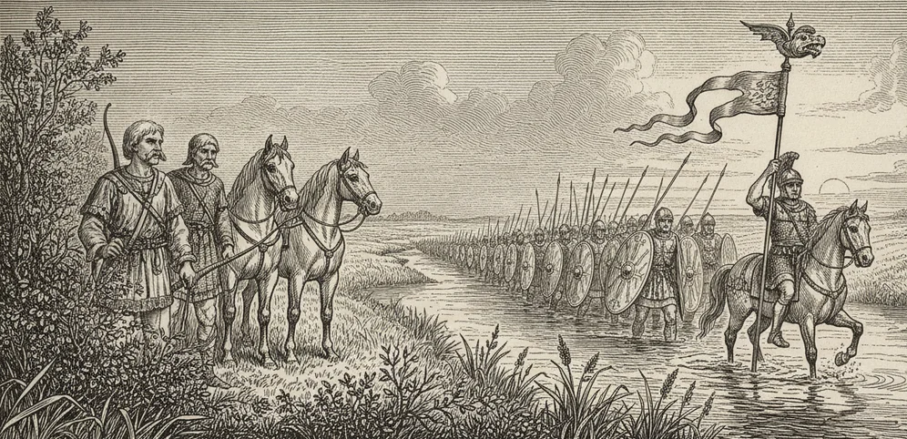
Los suevos
Las ciudades estaban vacías antes de que llegaran.
Eso fue lo que Teudo aprendió aquella primavera, andando detrás de Rojo por caminos de piedra que iban rectos como una lanza de horizonte a horizonte. Que la noticia corría más deprisa que los bueyes. Que cuando la columna asomaba a una loma y se veían abajo las murallas, los tejados rojos, el humo de las cocinas, ese humo ya era de hacía dos días, y dentro no quedaba nadie más que los que no habían podido irse: viejos, enfermos, algún perro. Los demás se habían marchado con lo que podían cargar, hacia el sur o hacia los bosques, y habían dejado las puertas abiertas para que no se las rompieran.
Los hombres entraban igual. Volvían con menos cosas que en Mogontiacum y con peor cara.
El hambre empezó en la primera luna de la primavera. En invierno se comía lo saqueado, y lo saqueado se acabó. Los campos que cruzaban estaban sin sembrar, porque los que tenían que sembrarlos habían huido, y lo poco que crecía se lo comían los primeros carros de la columna, de modo que a los de atrás no les llegaba nada. Y los suevos iban detrás. Siempre detrás. Los alanos delante, porque iban a caballo; los vándalos en medio; los suevos con sus bueyes al final, comiéndose el polvo de los otros. La madre cocía cebada de los sacos que no se podían tocar, de puñado en puñado, contándolos. Cuando lo hacía, el padre se iba y no miraba.
Teudo aprendió a buscar. Caracoles en los muros después de llover. Ortigas tiernas, que había que coger con la manga. Raíces de las que la madre decía que sí. Una vez, en el huerto de una villa quemada, encontró una fila de puerros que nadie había visto, y los arrancó todos y volvió corriendo con ellos en brazos como si fueran oro, y la madre se echó a reír por primera vez desde el río.
Ricila no buscaba. Ricila iba con Lupo.
Así se llamaba el niño cautivo de Wilja. Lo supieron a los pocos días de salir de Mogontiacum. Ricila se había presentado junto al carro de Wilja con los zapatos pequeños de cuero romano que había encontrado nadie sabía dónde, se los había dejado en el suelo delante del niño y se había ido corriendo. El niño se los puso. Le quedaban grandes. Al día siguiente, en una parada, se acercó al carro de los suyos, se señaló el pecho y dijo: «Lupus». Ricila se señaló el suyo y dijo: «Ricila». Y ya está. Desde entonces andaban juntos.
No hablaban la misma lengua y no les hacía falta. Lupo tenía cinco años, como Ricila, y era hijo de un hombre que vendía aceite en la ciudad; eso lo supo Teudo mucho después, cuando Lupo ya sabía hablar suevo. Al principio no sabían nada el uno del otro. Jugaban. Hacían carreras con el caballito de madera por las piedras del camino, uno lo empujaba y el otro hacía el ruido de los cascos. Se enseñaban palabras. Ricila señalaba el caballito y decía su palabra, y Lupo decía «equus», y los dos se reían como si fuera lo más gracioso del mundo que una misma cosa tuviera dos nombres.
Wilja dejaba hacer. Era un hombre grande y callado que se había quedado con el niño porque le tocó en el reparto, no porque lo quisiera, y que lo trataba más o menos como a un cordero: le daba de comer, le tenía a la vista, no le pegaba. Sus siete hijas lo miraban con curiosidad y la pequeña le peinaba. Lupo no lloraba nunca de día. Teudo lo oyó llorar una noche, solo, debajo del carro de Wilja, muy bajito, para que nadie lo oyera. No se lo dijo a Ricila.
En Reims vieron la iglesia.
La columna pasó al lado sin entrar, porque ya habían pasado otros antes y no quedaba nada que coger. Pero el camino iba por delante de la puerta de la ciudad, y desde allí se veía al fondo, al final de una calle recta, una iglesia con la puerta grande abierta y negra de humo. Unos hombres de la columna contaban que el obispo, el jefe de todos los sacerdotes de los romanos en aquella ciudad, había salido a la puerta a esperarlos cantando, con su hermana al lado, y que lo habían matado allí mismo, en el umbral, a mitad de la canción. Contaban que la cabeza siguió cantando un rato en el suelo. Teudo no se lo creyó. Pero miró a Lupo, que iba delante, de la mano de Ricila, y vio que Lupo también miraba hacia la iglesia, que se había puesto blanco y que no apartaba los ojos.
Esa noche Lupo no fue a jugar.
Ricila fue a buscarlo al carro de Wilja y volvió solo. Se sentó junto al fuego con el caballito en la mano, muy serio, dándole vueltas. Al rato se levantó otra vez, se fue hacia el carro de Wilja sin decir nada a nadie, y no volvió.
La madre lo encontró al amanecer. Estaba dormido debajo del carro de Wilja, abrazado a Lupo, los dos tapados con el manto rojo de lana que el padre había traído de Mogontiacum y que Ricila se había llevado sin pedir permiso. El caballito estaba entre los dos. La madre se quedó mirándolos un rato largo. Luego volvió al fuego, y cuando el padre preguntó dónde estaba el manto, le dijo que se lo había llevado el frío.
Los vándalos
Asta se puso mala en los llanos de Amiens, a la entrada del verano, con los primeros calores.
Empezó como empiezan esas cosas, sin avisar. Una tarde no quiso comer. Por la noche estaba caliente. Por la mañana ardía, y lloraba con un llanto flojo, sin fuerza, que no era el suyo, y tenía los ojos brillantes y no miraba a nada. Gisa la llevó todo el día atada al pecho, debajo de la lona del carro, mojándole la frente con agua del odre, y por la noche la fiebre subió más.
Gisa hizo todo lo que sabía. Le dio agua con miel. Le puso paños fríos. Le colgó del cuello el diente de lobo que había sido de su abuela. Fue a ver a las viejas del campamento, las que sabían, y una le dio unas hierbas para quemar debajo del carro, y otra le dijo que era el mal de las tierras nuevas, que les daba a los niños que cruzaban ríos, y que o se pasaba en tres días o no se pasaba. Gisa le dio las gracias y no volvió a pedirle nada.
Guntario ya andaba. Cojeaba, y cojearía toda la vida, pero andaba, y aquellos días no se separó del carro. No servía para nada y lo sabía. Se sentaba fuera, en la rueda, con la espada sobre las rodillas, como si la fiebre fuera algo que pudiera entrar por la abertura de la lona y él tuviera que impedírselo.
La segunda noche Asta dejó de llorar. Gisa tardó en darse cuenta de que eso era peor.
Fue entonces cuando se acercó la romana.
Era una de las cautivas de Ansila, el que había perdido al hijo mayor junto al río. Se la habían traído de una villa de cerca de Mogontiacum, con otras dos mujeres y un viejo, y la tenían para moler el grano y para cargar agua. Era una mujer de unos treinta años, morena, con las manos curtidas y la cara muy quieta, y no hablaba con nadie. Gisa la había visto muchas veces y no se había fijado nunca en ella. Ahora estaba de pie junto al carro, a la luz del fuego, con un manojo de ramas en una mano y un cacharro de barro en la otra, y miraba a Guntario.
Guntario se levantó con la espada en la mano.
La romana no se movió. Dijo algo en su lengua, despacio. Luego señaló el carro, se tocó la frente, abrió la mano y enseñó las ramas: eran de sauce, con la corteza pelada. Y luego hizo un gesto que Gisa, que estaba en la abertura de la lona con la niña en brazos, entendió sin necesidad de palabras: el gesto de una mujer que mece a un niño.
—No —dijo Guntario.
—Déjala —dijo Gisa.
Guntario la miró. Gisa no apartó la cara.
—Déjala.
La romana se llamaba Prisca. Eso lo supieron después. Aquella noche no dijo su nombre ni casi nada. Subió al carro, tocó a la niña, le miró los ojos y la boca, le olió el aliento. Luego bajó, puso el cacharro en las brasas y coció la corteza de sauce con agua hasta que el agua se volvió parda y amarga. La dejó enfriar. Se la dio a la niña a sorbos, con una cuchara de madera, una de las cucharas de tejo que había tallado Fridila, y la niña la escupió y lloró, y Gisa casi se alegró de oírla llorar. Prisca siguió, paciente, sorbo a sorbo. Luego le quitó a la niña toda la ropa que Gisa le había echado encima para que sudara la fiebre, la dejó desnuda sobre una piel fresca y le pasó un trapo mojado por todo el cuerpo, una y otra vez, sin parar. Gisa quiso impedírselo. Prisca le cogió la muñeca, la miró y negó con la cabeza. Y Gisa la dejó.
Estuvo así toda la noche. Gisa no durmió. Prisca no durmió. Guntario se quedó fuera, en la rueda, con la espada.
Al amanecer la fiebre había bajado. No se había ido, pero había bajado. Asta abrió los ojos, miró a su madre, miró a la romana, y pidió agua con una voz ronca. Gisa se echó a llorar. Prisca no. Prisca le dio el agua, bajó del carro y se fue hacia el de Ansila a moler el grano, porque ya era de día y la esperaban, y no miró atrás.
Tres días después Asta corría otra vez entre los carros.
Gisa fue a buscar a Prisca. No sabía qué darle. Al final le llevó una de las telas de colores que Guntario había traído de la ciudad, la mejor, una de lino teñida de azul. Prisca la miró y no la cogió. Gisa insistió. Prisca negó con la cabeza.
—¿Por qué? —le preguntó Gisa en vándalo, sabiendo que no la iba a entender—. ¿Por qué lo has hecho?
Prisca la miró un rato. Luego levantó la mano y la puso a la altura de su cadera, plana, como se mide a un niño. Lo bastante alto para una niña de la edad de Asta.
Después dijo una sola palabra, un nombre quizá, que Gisa no entendió, y señaló hacia el este, hacia donde quedaba el Rin, hacia donde quedaba Mogontiacum.
Gisa volvió a su carro con la tela azul en la mano. Asta estaba sentada en el suelo, jugando con un perro, riéndose. Gisa se quedó mirándola. Pensaba en la mano de Prisca, a la altura de la cadera. Pensaba en Mogontiacum, en las casas, en la iglesia. Pensaba en las cosas que Guntario y los suyos habían traído de allí y en lo que habían dejado.
Aquella noche no consiguió dormir. Y al día siguiente, sin decirle nada a Guntario, empezó a guardarle a Prisca la mitad de su ración.
Los alanos
Respendial mandaba partidas de exploradores por delante de la columna, de diez o de veinte jinetes, a ver dónde había comida, dónde había romanos y por dónde se podía pasar. A finales de la primavera mandó a Arsak con una de ellas hacia el mar.
Arsak no había visto nunca el mar. Había oído hablar de él a los viejos, que lo habían visto de jóvenes en el sur de la estepa, más allá de la desembocadura del Tanais, donde la hierba acaba de golpe y empieza un agua que no tiene otra orilla. No se lo creía del todo. Ahora cabalgaba hacia él por tierras verdes y llanas, empapadas, donde llovía cada día un poco y los caminos romanos se hundían en barro, y llevaba al hombro el arco de Candac.
Lo había usado ya. Era mejor que el suyo, más duro de tensar y más largo de tiro, y Arsak tardó días en acostumbrarse a él. Cada vez que lo tensaba se acordaba de su primo. Le había preguntado a su padre si los de Goar estarían cerca, y su padre le había dicho que estarían donde Roma los hubiera puesto, y no había querido hablar más.
Llevaban seis días fuera cuando el viento cambió. Traía un olor que Arsak no conocía, salado y frío, a algas y a cosa podrida. El jefe de la partida, un hombre viejo y flaco llamado Beorgor que había hecho ese camino otras veces, levantó la cabeza y lo olió.
—El mar —dijo.
Lo vieron al día siguiente, desde unas lomas de hierba alta. No se parecía a lo que contaban los viejos. Era gris, no azul. Se movía todo entero, como algo vivo que respira, y hacía un ruido que no paraba. Y no tenía otra orilla. Arsak se quedó mirándolo con la boca abierta hasta que Beorgor le dio un golpe en el hombro con el arco y le señaló abajo, a la costa.
Había barcos.
Muchos. Más de los que Arsak sabía contar de una vez, varados en una playa larga junto a una ciudad con murallas y un faro de piedra muy alto, y otros que llegaban todavía desde el mar, con las velas cuadradas hinchadas, hacia la orilla. Y de los barcos bajaba gente. No gente: soldados. Bajaban por tablas, en fila, con escudos al brazo, y se ponían en la playa en filas y en cuadros, como se ponen las piedras de una muralla, y luego echaban a andar por el camino que salía de la ciudad hacia el interior. Hacia ellos.
—¿Quiénes son? —preguntó Arsak.
—Romanos —dijo Beorgor.
—No hay romanos. Nos dijeron que se los habían llevado todos.
Beorgor no contestó. Miraba la playa con los ojos entornados.
Pasaron dos días siguiendo a aquel ejército de lejos, por las lomas, sin dejarse ver. Arsak aprendió a contarlo por los fuegos: tantos fuegos, tantos hombres. Eran muchos. No como los alanos, que eran un pueblo entero con carros y niños, sino otra cosa. Todos hombres, todos de guerra, todos con lo mismo encima, como si los hubiera hecho el mismo herrero. Por las noches cantaban, y su canción no se parecía a nada.
Un mercader que iba por el camino, y al que Beorgor cogió y soltó después, les contó lo que pasaba. Aquellos soldados venían de Britania, la isla de más allá del mar. Se habían cansado de esperar a que Roma les mandara ayuda contra los bárbaros y habían hecho emperador a uno de ellos. Un soldado. Uno que se llamaba Constantino, como el gran emperador de hacía cien años, y al que habían elegido por eso, porque el nombre traía suerte. Ahora había cruzado el mar con todos para limpiar la Galia de bárbaros y ser emperador de verdad.
—¿Limpiar de quién? —preguntó Arsak.
Beorgor se rio sin ruido.
La tercera noche se acercaron más, para oír. Se arrastraron entre los matorrales hasta una distancia en la que Arsak podía ver las caras al resplandor de las hogueras. Al amanecer vieron pasar la columna por un vado, muy cerca, y entonces Arsak lo vio.
Iba delante, encima de una pértiga larga, llevado por un jinete. Una cabeza de dragón de bronce, con la boca abierta, y detrás de la cabeza un cuerpo largo de tela de colores, rojo y verde, que se llenaba con el viento y se retorcía en el aire como una serpiente viva. Cuando el viento le entraba por la boca, silbaba.
Arsak lo conocía. Lo había visto toda la vida. Era el dragón de los alanos, el de las cargas, el que llevaba el abanderado de Respendial delante de la línea para que todos lo vieran y se oyera su silbido en la batalla. Los alanos lo habían traído de la estepa. Era suyo. Y lo llevaba delante un jinete romano, de un ejército romano, que venía a por ellos.
Beorgor le vio la cara.
—Nos lo copiaron hace mucho —dijo en voz baja—. Hace cien años, o doscientos. Los romanos copian todo lo que les gana.
Volvieron a la columna a galope, cuatro días casi sin parar, reventando caballos. Arsak no habló en todo el camino. Pensaba en el dragón. Pensaba en Candac, en dónde lo habría puesto Roma. Pensaba que ya no sabía bien qué era suyo y qué no: ni el dragón, ni el arco que llevaba al hombro, ni la gente que se había ido por la orilla del Rin hacia el norte.
Lo único que no había cambiado de dueño era la fíbula. La tocaba por dentro del manto a cada rato, al galope, sin darse cuenta.
Cuando le dieron la noticia a Respendial, el rey no dijo nada durante mucho tiempo. Luego mandó llamar a los jefes de los vándalos y de los suevos.
Esa noche, por primera vez desde el río, los tres pueblos encendieron los fuegos juntos.
La Galia ardiendo
Galia, entre el Loira y el Garona – invierno de 407 a otoño de 408
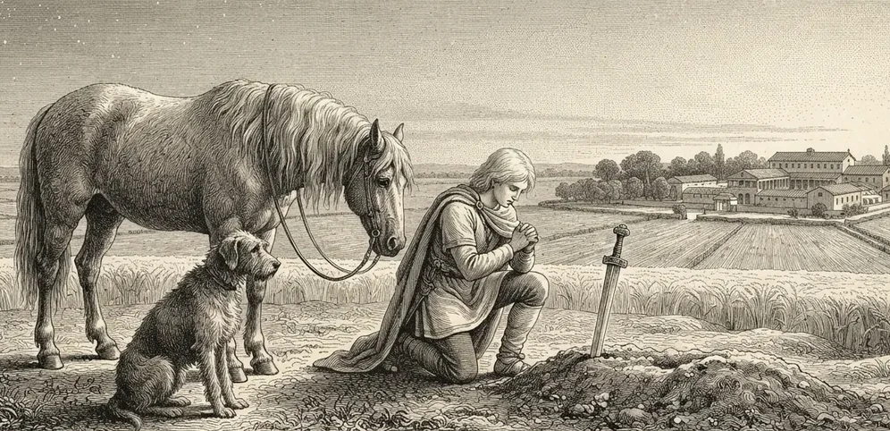
Los suevos
El segundo invierno fue peor que el primero, y eso que el primero había helado un río.
No hizo tanto frío. Hizo humedad. Una lluvia fina y gris que caía días enteros sin ganas y sin parar, que empapaba las pieles, que pudría la paja de los carros y metía el barro hasta las rodillas de los bueyes. Los suevos acamparon aquel invierno en un valle de robles, al norte de un río grande que los romanos llamaban Liger, junto a las ruinas de una aldea de la que nadie sabía el nombre porque no quedaba nadie para decirlo. Allí se quedaron hasta la primavera, porque los bueyes no podían más.
Teudo cumplió doce años aquel invierno, y el padre le dio los bueyes.
No se los regaló. Se los dio para que los cuidara, que era más. Le enseñó a mirarles las pezuñas cada noche, a limpiárselas con un palo y a untarles grasa en las grietas. A notar cuándo un buey tiene fiebre, porque se le calientan las orejas y deja de rumiar. A no dejarlos beber de golpe cuando venían cansados. Le enseñó que el Viejo era más listo que Rojo y que había que dejarle elegir por dónde pasar en los vados, y que Rojo era más fuerte y había que ponerlo a la derecha en las cuestas. Teudo lo aprendió todo. Dormía junto a ellos, con la espalda contra el costado caliente del Viejo, y por la mañana olía a buey y no le importaba.
También aprendió la honda.
Se la hizo él mismo, con una tira de cuero de unos zapatos viejos y dos cordones de lana trenzada, y se pasó la mitad del invierno tirando piedras contra un tronco hasta que le sangraron los dedos. Al principio las piedras salían para cualquier lado. Una vez le dio a una oca de una vecina, que se puso a gritar, y la vecina también. Luego empezó a acertar al tronco. Luego a una rama. Al final del invierno ya traía alguna liebre, y un día, una garza que estaba quieta en el río, que la madre asó entera y que les supo a fiesta. El padre no le dijo nada. Pero esa noche le dio la parte de la pechuga, que era la que se comía siempre él.
La madre, aquel invierno, tejió.
Montó el telar en cuanto pararon, apoyado contra el carro y tapado con una lona, y tejió todos los días que no llovía demasiado. Tejía con la lana de unas ovejas que el padre había cambiado por la copa de plata de Mogontiacum, la de las letras cruzadas, a un vándalo que pasó por el valle con un rebaño robado. Nadie dijo nada del cambio. La madre hiló la lana sentada junto al fuego, con el huso girando entre los dedos y la rueca bajo el brazo, mientras escuchaba lo que hablaban los demás sin decir ella casi nada. Teudo la miraba a veces. Le parecía que la madre, cuando tejía, se iba a otra parte, a las colinas quizá, a la casa con el tejado de paja hasta el suelo, y que volvía cuando paraba. De aquella lana salieron dos túnicas para los niños y una manta. La de Ricila tenía una raya azul en el borde, teñida con unas hierbas que la madre había encontrado en el bosque, y Ricila se pasó una semana sin quitársela ni para dormir.
En el campamento vivía el viejo Gaiso.
Era el hombre más viejo de la aldea, tan viejo que nadie sabía cuántos inviernos tenía, y había salido de las colinas con los demás porque decía que prefería morirse andando que morirse esperando. No tenía familia. Dormía bajo el carro de unos y otros, comía de lo que le daban y, a cambio, contaba. Sabía todo lo que se podía contar: cómo se llamaban los reyes de antes, por qué los suevos se anudan el pelo, de qué isla del norte habían salido los pueblos en tres barcos, qué dijo Wodan cuando le quitaron un ojo. Por las noches los niños se juntaban a su alrededor junto al fuego, y Gaiso hablaba con una voz ronca que bajaba y subía, y los niños se olvidaban del hambre.
Ricila no se perdía una. Llevaba a Lupo, que todavía entendía poco, y se lo iba diciendo al oído en una mezcla de suevo y latín que solo entendían ellos dos. Teudo también iba, aunque ya se creía mayor para cuentos. Se sentaba un poco atrás, como si estuviera de paso.
Una noche Gaiso contó la de la serpiente que rodea el mundo y se muerde la cola, y cuando acabó se quedó callado mirando el fuego, más tiempo del normal.
—¿Y luego? —preguntó Ricila.
—Luego nada —dijo Gaiso—. Luego se acaba.
Los niños se rieron, porque pensaron que era parte del cuento. Teudo no se rio. Vio que el viejo temblaba, aunque estaba al lado del fuego, y que tenía los labios morados. Se quitó la manta y se la echó por los hombros sin decir nada. Gaiso le miró, le puso una mano huesuda en la cara y le dijo:
—Tú acuérdate de las historias. Los demás se las van a olvidar. Tú no.
Lo encontraron por la mañana debajo del carro de Wilja, encogido como un niño, con la manta de Teudo hasta las orejas. Tenía los ojos abiertos y una cara tranquila, como de estar escuchando algo.
Lo enterraron junto a los robles, con un cuchillo y un cuenco, como se hacía en las colinas. No había mucha gente; hacía frío y llovía. El padre de Teudo cavó. Wilja cavó. Ricila lloró mucho, porque Gaiso le había prometido contarle la de la nave hecha con uñas de muertos y ya no iba a poder. Lupo le sujetaba la mano.
Esa noche no hubo cuentos. Los niños se quedaron junto a sus fuegos sin saber qué hacer.
A la noche siguiente, Ricila fue a buscar a Teudo.
—Cuenta tú la de la serpiente.
—No me la sé.
—Sí te la sabes. Estabas.
Teudo dijo que no. Ricila insistió. Al final fue, para que se callara. Se sentó donde se sentaba Gaiso. Había seis o siete niños esperando, y Lupo, y una de las hijas de Wilja. Teudo carraspeó. No sabía cómo empezar. Entonces se acordó de cómo empezaba Gaiso, que no empezaba nunca por el principio sino por una pregunta, y dijo:
—¿Sabéis por qué tiembla la tierra a veces?
Y los niños dijeron que no. Y Teudo se lo contó.
Lo contó mal, se le olvidaron trozos y se inventó otros. Pero cuando terminó, los niños pidieron otra.
Los vándalos
La villa tenía nombre, pero nadie sabía leerlo.
Estaba escrito en la puerta, en letras grandes metidas en la piedra, y Asta se las tocaba con los dedos cada vez que entraba, una por una, como si fueran animales dormidos. Gisa pensaba que sería el nombre del dueño. Guntario decía que sería una maldición contra los que entraran. Prisca, cuando se lo preguntaron, lo leyó en voz alta, una palabra larga y cantarina, y luego dijo otra palabra en su lengua que Gisa ya empezaba a entender. Quería decir «felicidad».
Los asdingos se habían repartido aquel valle, al sur del gran río, a principios del invierno. Había villas por todas partes, cada una con sus campos, sus establos, sus graneros y sus casas para los esclavos, y todas vacías. A Guntario y a los suyos les tocó una en lo alto de una loma, con un huerto de manzanos y una fuente que todavía corría. A los señores se los había llevado el miedo. A los esclavos, unos se los habían llevado los señores y otros se habían ido por su cuenta. Solo quedaba un perro viejo atado a una argolla, medio muerto de hambre, que Asta soltó el primer día y que ya no se separó de ella.
Los vándalos no vivieron en la casa grande. Vivieron en los establos.
Fue cosa de Guntario. La casa le daba mala espina. Tenía demasiadas habitaciones, demasiadas puertas, demasiadas paredes pintadas con gente que miraba. Los suelos eran de piedrecitas de colores, puestas una al lado de otra hasta hacer dibujos, y a Guntario no le gustaba pisar encima de un pez, ni de un hombre con lanza, ni de un dios con cuernos. Dijo que una casa donde se anda por encima de la gente es una casa para fantasmas. Así que metieron los carros en el patio de los establos, encendieron el fuego en el suelo de tierra y durmieron con los caballos, como habían dormido siempre.
Aquel fue un invierno extraño, el primero en mucho tiempo en que no se movían. Había manzanas en el granero, arrugadas pero dulces, y vino en unas tinajas enterradas hasta el cuello en el suelo de la bodega, y trigo para moler. Las mujeres hacían pan en el horno de los esclavos, un horno redondo de ladrillo que calentaba tanto que se podía meter la mano dentro de la pared. Gisa no había hecho nunca pan así. En el Óder se cocía en las piedras del fuego, aplastado y duro. Este subía. Se hinchaba como un vientre y se ponía dorado, y cuando lo partías por la mitad echaba humo y olía de una manera que hacía llorar a los hombres. Guntario dijo que por ese pan entendía que los romanos se dejaran matar antes que irse de sus casas.
Pero Asta se escapaba a la casa grande.
Tenía tres años y medio. Ya hablaba sin parar y corría más que el perro, y había descubierto que en la casa grande había un mundo. Había una habitación con el suelo lleno de peces, peces de todos los colores, y pulpos, y un hombre con barba y un tridente montado en un carro tirado por caballos con cola de pez. Había otra con un círculo de animales: un león, un ciervo, un oso, un pájaro, todos mirando hacia el centro, donde había un hombre sentado tocando un instrumento con cuerdas. A ese hombre Asta le hablaba. Se tumbaba en el suelo, boca abajo, con la cara al lado de la cara del hombre de la lira, y le contaba cosas.
Gisa la encontraba allí, y la sacaba de una oreja, y la niña volvía al día siguiente.
Un día no la encontró sola. Estaba Prisca.
Ansila se había quedado con la villa de al lado, y Prisca venía todos los días a la fuente de Guntario a por agua, porque era mejor. Gisa le daba de comer. Seguía guardándole la mitad de su ración, aunque ya no hacía tanta falta. No hablaban mucho, porque no podían. Pero aquella tarde Gisa entró en la casa grande buscando a la niña y se las encontró a las dos sentadas en el suelo de la habitación de los animales: Prisca con las piernas cruzadas y Asta en su regazo, y Prisca le iba señalando los animales del mosaico uno por uno y le decía su nombre.
—Leo —decía Prisca.
—Leo —decía Asta.
—Cervus.
—Cervus.
Y luego señaló al hombre de la lira y dijo un nombre largo, y le contó algo en voz baja, despacio, una historia, con las manos. Asta la escuchaba con la boca abierta. Gisa se quedó en la puerta sin hacer ruido. No entendía las palabras, pero entendió la historia por las manos de Prisca: un hombre que tocaba tan bien que hasta las fieras se paraban a escucharle; una mujer que se moría; el hombre que bajaba a buscarla a un sitio oscuro, debajo de la tierra; y que al final, cuando ya casi la sacaba, se volvía a mirarla. Y la perdía.
Prisca terminó. Asta se quedó callada un rato. Luego preguntó algo, en vándalo, y Prisca no lo entendió, y miró a Gisa.
—Pregunta que por qué se volvió a mirar —dijo Gisa.
Prisca lo pensó. Luego, con mucho cuidado, buscando las palabras, en un vándalo roto que Gisa no sabía que hubiera aprendido, dijo:
—Porque la quería.
Aquella noche, en los establos, mientras Asta dormía, Gisa se lo contó a Guntario. Él se quedó un rato callado, tallando un trozo de madera con el cuchillo, que era lo que hacía ahora por las noches porque la pierna no le dejaba hacer otra cosa.
—Esa mujer tenía una hija —dijo al fin.
—Sí.
—¿Qué edad?
Gisa no contestó. Guntario dejó el cuchillo.
En la primavera, cuando volvieron a ponerse en marcha, Guntario fue a ver a Ansila. Volvió al anochecer, sin dos de sus mejores mantas, sin el cuchillo largo de su padre y sin la yegua joven. Y con Prisca. Ansila se la había vendido. No se la había comprado para él. Se la había comprado para que fuera libre, y cuando se lo dijo, en la puerta del establo, Prisca no le entendió, y Gisa tuvo que repetírselo despacio, con las manos.
Prisca se quedó quieta mucho rato. Luego dijo que no tenía adónde ir.
Así que se quedó con ellos.
Los alanos
Al padre de Arsak lo mataron un día de finales del verano, en un camino entre dos campos de trigo, por un saco de grano.
Fue una cosa pequeña. Ni siquiera era una batalla. Los alanos se habían movido hacia el sur aquel año, como todos, detrás de la comida, y bajaban en grupos sueltos por las tierras del Garona robando lo que encontraban. Aquella mañana salieron veinte jinetes a buscar grano en una villa que alguien había dicho que estaba llena. Estaba llena. Lo que no había dicho nadie es que también la guardaban.
Eran jinetes, como ellos. No eran romanos, o no del todo: llevaban cascos romanos y escudos romanos, pero montaban como montan los que han nacido en un caballo, y gritaban en una lengua que Arsak conocía. Hombres de Constantino, el emperador de los barcos, que se había hecho el dueño de toda la Galia aquel año y pagaba a cualquiera que supiera pelear. Bárbaros pagados para matar a otros bárbaros. Arsak lo pensó así, con esas palabras, en el momento en que los vio salir de detrás del granero, y se acordó de Candac.
El choque duró lo que se tarda en contar hasta cien. Los alanos dieron la vuelta, porque eran menos y no había nada que ganar, y salieron al galope por el camino entre los trigos. Los otros los persiguieron un rato y luego se pararon. Fue al pararse cuando uno de ellos tiró la lanza. Una sola. Desde lejos, sin apuntar casi, como se tira una piedra a un perro para que no vuelva.
Le dio al padre en la espalda, por debajo del hombro.
Arsak no lo vio. Iba delante. Lo que vio, al volverse, fue el caballo de su padre galopando a su lado, con la silla vacía, y la cabeza alta, y los ojos blancos de miedo.
Volvió. Los otros le gritaron que no volviera y volvió. El padre estaba en el suelo, en el borde del trigo, de costado, con la lanza todavía metida. Se había caído encima del brazo de la espada y no podía sacarlo. Arsak saltó del caballo y le levantó la cabeza.
El padre lo miró. Tenía los ojos muy claros, más claros de lo normal, como el cielo cuando va a nevar.
—En la espalda —dijo—. Qué vergüenza.
Arsak no supo qué contestarle.
—Sácamela —dijo el padre—. No quiero que me entierren con una lanza romana dentro.
Arsak se la sacó. El padre no gritó. Apretó los dientes, cerró los ojos, y cuando los abrió ya estaba más lejos.
—La espada —dijo.
Arsak le liberó el brazo y le puso la espada en la mano. El padre la agarró. No tenía fuerza para levantarla. La tuvo agarrada.
—Ya eres un alano —dijo, igual que aquella noche junto al Rin.
—Ya lo sé.
—No. Ahora sí. —Respiró con mucho trabajo, y Arsak oyó que dentro del pecho le hacía un ruido de agua—. Ahora ya no te queda nadie.
Y se murió así, con los ojos abiertos mirando el trigo, con la espada en la mano y la cabeza en el regazo de su hijo.
Lo llevó al campamento atravesado sobre su propio caballo, a paso, porque no quiso que lo llevara nadie más. Tardó media tarde. Por el camino se le acercaron los otros jinetes, de uno en uno, y cabalgaron un rato a su lado sin hablar, y luego se adelantaban. Era lo que se hacía. Beorgor, el viejo de la partida del mar, no se adelantó. Cabalgó a su lado todo el camino, callado, con las riendas flojas, y solo al llegar a la vista de los carros dijo una cosa:
—Tu padre me enseñó a tirar de espaldas. En el Danubio. Tenía tu edad.
Arsak no sabía que su padre hubiera enseñado nada a nadie más que a él.
Lo enterraron al día siguiente en lo alto de una loma, de cara al este, hacia donde quedaba la estepa que ninguno de los dos había vuelto a ver y que Arsak no había visto nunca. Los alanos no hacen túmulos de piedra como los godos ni queman a sus muertos como hacían los abuelos de los vándalos. Los meten en la tierra con sus armas, con su arco y su espada y su copa de beber, y con su caballo.
El caballo lo tenía que matar Arsak. Era la costumbre. El hijo mata el caballo del padre, para que el padre no vaya a pie al otro lado.
Arsak lo llevó hasta el borde de la fosa. Era una yegua parda, vieja, con una mancha blanca en la frente, que había nacido en el camino como él y que su padre había montado desde que Arsak tenía memoria. Le habló al oído un rato. Le dijo cosas que no le había dicho nunca a su padre, porque a los padres esas cosas no se les dicen. La yegua le empujaba el pecho con la cabeza, buscando el pan que el padre le daba siempre.
Luego sacó el cuchillo.
Cuando terminó, cuando la tierra estaba encima de los dos y los demás se habían ido, Arsak se quedó solo en la loma. Clavó su espada en el suelo, al lado de la tumba, y se arrodilló. Ya no le quedaba nadie a quien preguntarle si se rezaba así o de otra manera. Se quedó allí hasta que se hizo de noche y salieron las estrellas sobre los campos de trigo, que eran las mismas que en la estepa, le había dicho su padre una vez, aunque aquí se movían un poco más bajas.
Tenía veinte años. Tenía un arco que había sido de su primo, que estaba con Roma; una espada que había sido de su padre, que estaba bajo tierra; y una fíbula que había sido de un vándalo con una niña pequeña, que no sabía dónde estaba.
Sacó la fíbula del manto y la miró a la luz de la luna. El pájaro de bronce. Los dos ojos rojos.
«Mi casa es tu casa», le había dicho aquel hombre. Arsak no se acordaba de las palabras exactas, porque no las había entendido. Pero se acordaba de cómo las dijo.
Por primera vez se preguntó si el vándalo estaría vivo.
Los puertos
Pirineos occidentales – otoño de 409
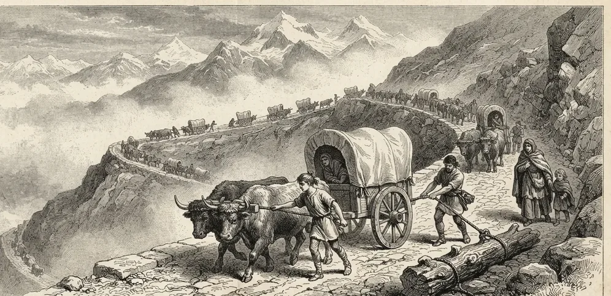
Los suevos
Las montañas aparecieron un día de finales del verano, al sur, como una tormenta que no se movía.
Al principio Teudo creyó que eran nubes. Estaban allí cada mañana, en el mismo sitio, azules y blancas, por encima de la línea de los árboles, y cada mañana estaban un poco más cerca. Luego vio que las nubes tenían nieve arriba, en pleno verano, y que debajo de la nieve había piedra, y que aquello cerraba el mundo de lado a lado, de este a oeste, hasta donde alcanzaba la vista.
—¿Hay que cruzar eso? —le preguntó al padre.
—Eso dicen.
—¿Y qué hay detrás?
—Hispania.
Teudo no conocía la palabra. El padre tampoco la había oído hasta aquel verano. La decían los jefes, la decían los vándalos, la decían los alanos que volvían de explorar: Hispania, Hispania, como se dice el nombre de algo que se desea mucho. Decían que allí no había llegado nadie todavía. Que había trigo y aceite y vino, y ciudades llenas, y minas de oro, y que los romanos de allí no tenían soldados porque llevaban cuatrocientos años sin necesitarlos. Decían que el sol calentaba tanto que el invierno no existía. Teudo no se creía la mitad. Pero llevaba dos años y medio andando, y quería que existiera un sitio donde parar.
Pasaron el resto del verano esperando al pie de las montañas, en unos valles verdes donde la gente hablaba una lengua que no se parecía a nada: ni al suevo, ni al latín de Lupo, ni a lo que hablaban los alanos. Los vascones. Vivían en aldeas de piedra en lo alto de las lomas, criaban ovejas y cerdos, y no se dejaban ver. Cuando la columna pasaba cerca, las aldeas estaban vacías. Por la noche, en los montes, se veían sus fuegos. Y a veces, por la mañana, faltaba un buey en algún carro, o una oveja, o un hombre que había ido a por leña.
—No cruzan porque no pueden —decía Wilja—. Los pasos los guardan los romanos.
Era verdad. En lo alto de cada camino que subía a los puertos había un fuerte, y en cada fuerte, soldados. No muchos, decían los alanos, pero bien puestos, en sitios donde diez hombres con piedras podían parar a mil. Los jefes subían a mirar y bajaban con cara larga. Pasaban los días. Se acababa el verano. Empezaba a hacer frío por las noches, y la nieve de arriba bajaba un poco cada semana.
Hasta que una mañana los fuertes estaban vacíos.
Nadie supo bien por qué. Unos dijeron que los soldados se habían ido a pelear entre ellos, que en la Galia había dos emperadores y luego tres y luego nadie sabía cuántos, y que uno de sus generales, uno que se llamaba Geroncio, se había levantado contra el suyo y se había llevado a la tropa. Otros dijeron que los habían comprado. Otros, que simplemente se habían cansado. A los suevos les daba igual. Los alanos subieron a mirar y bajaron gritando. El camino estaba abierto.
Subieron.
Teudo tenía trece años y aquella fue la peor semana de su vida hasta entonces. El camino era una calzada romana, estrecha, que subía haciendo eses por la ladera, con un barranco a un lado y la pared al otro, y los carros iban de uno en uno, tan despacio que a veces no se movían en toda la mañana. Rojo y el Viejo tiraban con la cabeza baja, echando vaho, con las patas temblando en las cuestas. Teudo iba a su lado con la vara, hablándoles. El padre empujaba la rueda de atrás. La madre llevaba a Ricila de la mano, porque ya pesaba demasiado para llevarlo en brazos.
Arriba hacía un frío que no se parecía al del Rin. Un frío limpio, con viento, que se metía por las orejas y por la nariz y por debajo de las uñas. La niebla subía desde los valles y lo tapaba todo, y había ratos en que Teudo no veía la cabeza de Rojo, a un brazo de distancia, y solo oía su respiración y las ruedas y, a veces, muy lejos, una voz que gritaba un nombre.
El tercer día, en la niebla, oyeron un ruido largo, de piedras, y luego un grito, y luego nada.
Fue un carro de la aldea de al lado. Una rueda se salió del borde y el carro se fue por el barranco, con los bueyes atados, arrastrados detrás. La familia iba a pie, al lado, y se salvó. Lo perdieron todo. Teudo se asomó al borde cuando se levantó la niebla y vio el carro abajo, muy abajo, pequeño como un juguete, con las ruedas hacia arriba y los bueyes quietos al lado. La mujer de aquella familia estaba sentada en el camino, en el sitio de donde se había caído, y no quería levantarse. La levantaron entre dos. Nadie pudo bajar a por nada.
En la cumbre, antes de que se hiciera de noche, Teudo vio a Lupo de pie en una roca, solo, mirando hacia atrás.
Hacia el norte. Hacia la Galia, que desde allí arriba se veía entera cuando se abría la niebla: verde, llana, con sus ríos brillando como hilos y sus bosques oscuros, perdiéndose hacia un horizonte gris. Lupo tenía ya siete años y había crecido mucho, flaco como un junco, con el pelo largo ahora, como lo llevaban los suevos, porque Wilja no tenía tijeras ni ganas de cortárselo. Hablaba suevo casi como Ricila. Pero a veces, cuando creía que nadie le oía, hablaba solo en su lengua, en voz muy baja.
Teudo subió a la roca y se puso a su lado. Lupo no le miró.
—¿Allí está tu casa? —le preguntó Teudo.
Lupo tardó en contestar. Luego señaló con el dedo, muy lejos, a un sitio que no se distinguía de los demás.
—Por allí. Detrás de aquello. Había una fuente con un pez de piedra que echaba agua por la boca. Y mi madre ponía la ropa a secar encima de un muro.
—¿Te acuerdas de ella?
Lupo se quedó callado tanto rato que Teudo pensó que no le había oído.
—Me acuerdo del muro —dijo al fin.
Luego se bajó de la roca y se fue corriendo hacia el carro de Wilja, donde Ricila le llamaba para algo, y Teudo se quedó solo mirando hacia la Galia. Pensó que él también tenía una casa allí atrás, más atrás todavía, en las colinas, al otro lado del Rin. Pensó que se acordaba del tejado de paja y del abuelo sentado en la puerta, pero que la cara del abuelo ya se le estaba borrando, como una piedra que el río va gastando. Y se asustó.
Esa noche, en una explanada cerca de la cumbre, el padre se sentó al lado de Teudo junto al fuego.
—Mañana bajamos —dijo—. Bajar es peor que subir.
—¿Por qué?
—Porque los bueyes quieren correr y el carro los empuja. Si se embalan, se van como esos.
Teudo asintió. Esperó a que le dijera lo que había que hacer. El padre no se lo dijo. Se quedó mirándole con una cara rara, como si lo viera por primera vez.
—Tú los conoces mejor que yo —dijo al fin—. Mañana los llevas tú.
Al día siguiente Teudo bajó los Pirineos con Rojo y el Viejo. Iba delante, de espaldas, andando hacia atrás, con una mano en el testuz de cada uno y la voz baja, despacio, despacio, como le hablaba la madre a Ricila cuando tenía pesadillas. El padre frenaba la rueda de atrás con una cuerda atada a un tronco. Tardaron un día entero. No se embalaron ni una vez.
Abajo, al final de la tarde, salieron de la niebla a un valle abierto. Hacía menos frío. Había encinas, que Teudo no había visto nunca, y un río que bajaba claro entre piedras blancas, y unos campos con rastrojos de trigo y, a lo lejos, una aldea con los tejados de teja roja.
Ricila se soltó de la mano de la madre, corrió hasta el borde del camino y se quedó mirando.
—¿Esto es Hispania?
Nadie le contestó, porque nadie lo sabía. Pero el padre se quitó el gorro y se quedó un rato quieto, con la cabeza descubierta, mirando el valle, y Teudo vio que movía los labios. No supo a quién le hablaba.
Los vándalos
Asta tenía cinco años y medio y se pasó toda la subida dormida.
No porque fuera fácil, sino porque Gisa lo quiso así. Le dio leche caliente con unas gotas de algo que le dio Prisca, de un frasquito, y la envolvió en todas las pieles que tenían y la ató dentro del carro, entre los sacos, como se ata un fardo. La niña protestó, quiso ver las montañas, dijo que ella no tenía sueño. Se durmió antes de la primera curva.
—¿Qué le has dado? —preguntó Gisa.
—Amapola —dijo Prisca—. Poca.
Prisca hablaba ya bastante vándalo. Mal, con las palabras puestas al revés y una manera de decirlas que hacía reír a Asta. Pero hablaba. Llevaba con ellos más de un año, desde la primavera en que Guntario se la compró a Ansila para que fuera libre, y en ese tiempo se había vuelto otra cosa en el carro de Guntario, algo que no tenía nombre: ni esclava, ni criada, ni pariente. Dormía junto a Asta. Cocinaba con Gisa. Discutía con Guntario sobre cómo se cuidaba una pierna mala, y a veces ganaba. Y le enseñaba a la niña palabras en latín, a escondidas, como quien le enseña a un niño a robar fruta.
Guntario subió el puerto a caballo, porque a pie no habría podido. Se hizo atar a la silla para no caerse si se dormía. Iba delante del carro, mirando el barranco, y no decía nada. Gisa sabía lo que pensaba. Pensaba que un hombre que no puede andar es un hombre que se queda atrás, y que en los puertos el que se queda atrás se queda para siempre. Lo sabía porque ella también lo pensaba de él, y se odiaba un poco por pensarlo.
A mitad de la subida, en un recodo, aparecieron los vascones.
No atacaron. Eso fue lo raro. Estaban arriba, en las rocas, por encima del camino, diez o doce hombres morenos y pequeños, con capas de piel de oveja y lanzas cortas, y miraban pasar los carros sin moverse. Uno de ellos tenía un niño de la mano. Los vándalos se pusieron nerviosos. Alguien sacó un arco. Guntario levantó la mano para que no tirara.
—Mira cuántos somos —dijo—. Y mira cuántos son ellos. Si quisieran, ya estaríamos en el barranco.
Los vascones los miraron pasar toda la tarde. Al anochecer ya no estaban.
Esa noche, en la explanada de la cumbre, Gisa no pudo dormir. Salió del carro y se sentó en una piedra, envuelta en la manta, y miró hacia el norte, hacia la Galia, que no se veía porque estaba todo negro. Arriba había más estrellas de las que había visto nunca. Al cabo de un rato salió Prisca y se sentó a su lado.
Estuvieron calladas mucho rato.
—¿Tú has estado en Hispania? —le preguntó Gisa.
—No. Mi marido sí. Él vendía telas. Iba a Tarraco cada verano.
Era la primera vez que Prisca nombraba a su marido. Gisa no preguntó qué había sido de él. Ya lo sabía, por la cara.
—Dicen que allí no hace frío.
—Dicen. —Prisca se encogió de hombros—. Mi marido decía que en el sur, en la Bética, el sol te quita el pellejo. Y que las mujeres llevan pendientes de oro hasta para ir a la fuente.
—¿Y los hombres?
—Los hombres no hacen nada. Miran.
Gisa se rio. Se rio de verdad, por primera vez en mucho tiempo, allí, en la cumbre de los Pirineos, con el frío metido en los huesos. Prisca no se rio, pero sonrió.
—¿Cómo se llamaba? —preguntó Gisa, sin pensarlo—. Tu hija.
Prisca no contestó enseguida. Miró las estrellas.
—Julia —dijo.
Fue todo lo que dijo aquella noche. Gisa no le preguntó más. Le cogió la mano, que estaba helada, y se la metió debajo de su propia manta, y estuvieron así las dos un rato, sin hablar, mirando las estrellas. Desde el campamento les llegaba el ruido de los caballos inquietos y, a ratos, la voz de Guntario, que hablaba en sueños. Gisa pensó en Fridila. Pensó en la trenza que había dejado sobre el hielo del Rin y en dónde estaría ya, si el río la había llevado al mar o se había enganchado en alguna rama de la orilla. Pensó que cada vez había más gente que solo existía en la boca de los vivos, como decía Guntario, y que por eso había que hablar de ellos. Que por eso Prisca había dicho el nombre de su hija.
—Julia —repitió Gisa en voz baja, para acordarse.
Prisca le apretó la mano.
Por la mañana, cuando Asta se despertó al fin, atontada por la amapola, preguntando dónde estaban, Prisca la cogió en brazos, la llevó al borde de la explanada y le enseñó lo que se veía hacia el sur: valles y más valles, azules, uno detrás de otro, perdiéndose en una neblina dorada.
—Hispania —le dijo.
—¿Es nuestra?
Prisca tardó en contestar.
—Ahora sí —dijo.
Los alanos
Los alanos pasaron primero, como siempre, y Arsak fue de los que subieron a ver los fuertes vacíos.
Era el que estaba más arriba, en el collado, una torre cuadrada de piedra con una muralla baja alrededor y una puerta de troncos que estaba abierta. Entraron a caballo, despacio, con los arcos tensos, esperando una trampa. No había trampa. Dentro había un patio con un pozo, unos establos, una cocina con el fuego apagado hacía días y unos cuartos con camastros. En uno de los camastros había una manta doblada, con cuidado, como si el que dormía allí fuera a volver por la noche. En la pared, alguien había grabado con un cuchillo unas rayas: cuatro rayas y una cruzada, y otras cuatro, y otra cruzada, y así hasta llenar media pared. Días. Alguien había estado contando los días que le faltaban para irse.
Beorgor tocó las rayas con los dedos.
—Se ha cansado de contar —dijo.
En el patio encontraron también un perro, atado, flaco, que se puso a ladrar como un loco cuando los vio y que luego, cuando Arsak le dio un trozo de carne seca, se tumbó en el suelo y enseñó la tripa. Arsak lo soltó. El perro le siguió el resto del día y el día siguiente, y al tercero ya dormía pegado a su caballo. Arsak no le puso nombre. Los alanos no les ponen nombre a los perros. Pero le guardaba siempre un trozo de lo que comía.
Desde el fuerte se veían los dos lados. Hacia el norte, la Galia, verde y gris, con su lluvia. Hacia el sur, algo que Arsak no había visto nunca y que le cortó la respiración.
No era la estepa. La estepa es llana, y esto eran montañas y valles y más montañas, plegadas una detrás de otra como una manta mal doblada. Pero tenía el mismo color. Dorado, ocre, gris verdoso, con el sol encima de todo. Y la misma luz, esa luz que no encuentra nada que la pare, que le había descrito su padre tantas veces junto al fuego cuando le hablaba del Tanais. Arsak se quedó en lo alto de la muralla mucho rato, con el perro a los pies, mirando aquello.
Su padre había dicho que la estepa era donde el cielo es más grande que la tierra. Aquí el cielo era más grande que la tierra.
Esa noche durmió en el fuerte, en el camastro de la manta doblada. No pudo dormir. Pensó en el soldado que había contado los días en la pared. Pensó en dónde estaría. Pensó en Candac, que también era un soldado de Roma ahora, y que quizá también contaba días en alguna pared. Pensó en su padre, enterrado de cara al este, en una loma de la Galia, que ya no vería esto.
Se levantó en la oscuridad, cogió el cuchillo y grabó una raya en la pared, debajo de las otras. Una sola. No sabía por qué. Al día siguiente bajó a Hispania con los suyos, y la raya se quedó allí.
Por la mañana, antes de bajar, Beorgor le encontró sentado en la muralla con el perro.
—Mira eso —le dijo Arsak, y le señaló el sur.
Beorgor miró. Era muy viejo, tan viejo que había nacido junto al Tanais antes de que llegaran los hunos, y había visto la estepa de verdad, no en los cuentos. Se quedó mirando un rato largo, con los ojos entornados por el sol, y Arsak esperó a que dijera que sí, que se parecía.
—No se parece en nada —dijo Beorgor.
Arsak se calló.
—La estepa no tiene dueño —siguió el viejo—. Esto sí. Esto tiene dueños desde hace mil años. Mira. —Le señaló un valle, y en el valle unos campos con lindes, cuadrados, con muros de piedra—. Cada piedra de esos muros la ha puesto alguien. Cada árbol lo ha plantado alguien. Aquí no se pasa: aquí se quita.
—Y nos lo vamos a quitar.
—Ya. —Beorgor escupió por encima de la muralla—. Y luego vendrá otro y nos lo quitará a nosotros. Así es la tierra con dueño. Por eso nuestros abuelos no la querían.
Arsak no dijo nada. Pero se acordó de las paredes pintadas de Mogontiacum, con sus pájaros y sus barcas, y de lo que había pensado entonces: cómo sería despertarse cada mañana mirando eso. Y se dio cuenta de que, de los dos, el que había empezado a querer una casa era él.
La bajada fue lenta. Los carros de los alanos eran ligeros, pero los rebaños no, y los caballos sufrían en las piedras. Por el camino, en un valle, encontraron la primera aldea hispana. Era pequeña: diez casas de piedra con el tejado de lajas, un horno, una era redonda para trillar. La gente se había ido, pero hacía poco, porque el pan del horno estaba todavía blando. Los alanos se lo comieron.
Arsak entró en una de las casas, buscando grano. No encontró grano. Encontró una cuna de madera junto al fuego apagado, con una manta dentro, y encima de la manta un muñeco de trapo con la cara pintada con carbón.
Lo cogió. Lo miró un rato. Era un muñeco feo, hecho deprisa, con un brazo más largo que otro. Alguien lo había olvidado al salir corriendo. Alguien estaría llorando por él ahora, en el monte, con los suyos, viendo bajar a los bárbaros por su valle.
Arsak volvió a dejarlo en la cuna. Lo tapó con la manta. Luego salió de la casa y cerró la puerta, para que no entraran los perros.
Beorgor lo vio salir.
—¿Qué había?
—Nada —dijo Arsak.
Montó, silbó al perro sin nombre y siguió bajando hacia Hispania, hacia aquella luz que se parecía tanto a la que nunca había visto.
Los años malos
Hispania – del invierno de 409 al otoño de 410
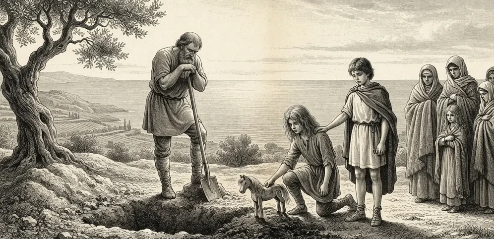
Los suevos
Lo que les dijeron de Hispania era verdad, y no les sirvió de nada.
Había trigo, sí. Había aceite, y vino, y ciudades llenas. Pero cuando cuatro pueblos enteros entran a la vez en una tierra, como entra una riada por una puerta, en un año no queda nada. Eso tardaron en entenderlo. El primer invierno comieron bien. Las aldeas tenían los graneros llenos de la cosecha del verano, y las villas tenían cerdos y gallinas y tinajas de aceite enterradas en las bodegas, y nadie se paró a pensar que todo aquello era la comida de un año y no de siempre. Se lo comieron. Lo que no se comieron lo quemaron, o lo tiraron, o lo pisaron los caballos. Y en la primavera no sembró nadie, porque los que sabían sembrar aquella tierra estaban escondidos en los montes, y los que la habían tomado no sabían cuándo llovía allí ni qué crecía.
En el verano empezó el hambre. En el otoño, la otra cosa.
La llamaron de muchas maneras. Las viejas decían que era el mal del aire podrido. Los romanos de las aldeas, los pocos que quedaban, decían que era un castigo de su dios. Los suevos no le pusieron nombre. Empezaba con fiebre y con un dolor de cabeza que no dejaba abrir los ojos, y luego salían unas manchas en la piel, y unos se levantaban a la semana, flacos como palos, y otros no se levantaban.
Aquel verano Teudo salió muchas veces con el padre a buscar comida. Iban con los bueyes y el carro vacío por los caminos de la costa, de aldea en aldea, y casi siempre volvían igual que habían ido. Una tarde, en una casa de labor al borde de un barranco, encontraron gente.
Eran romanos. Un viejo, una mujer joven y dos niños, metidos en la cocina con la puerta atrancada. El padre la abrió de una patada y entró con la lanza por delante, y Teudo detrás, con la honda. La mujer se puso delante de los niños. El viejo levantó un palo. Estaban tan flacos que se les veían los huesos de la cara, y los niños tenían la tripa hinchada, redonda como un cuenco, con los brazos y las piernas como palos. Teudo había visto eso en los terneros que se morían en invierno. No lo había visto nunca en un niño.
En la casa no había nada. Ni un grano. Ni una cebolla. En un rincón había un caldero con agua y unas hierbas cocidas, y unas bellotas machacadas en una piedra.
El padre se quedó mirándolos con la lanza en la mano. El viejo seguía con el palo levantado, temblando. Nadie se movió durante un rato muy largo.
Luego el padre bajó la lanza, salió de la casa sin decir nada y volvió con el saco de la merienda, el que la madre les había dado para el camino: un trozo de pan de cebada, un queso pequeño de oveja, unas aceitunas. Lo dejó en el suelo, en medio de la cocina. Y salió.
En el camino de vuelta, Teudo no se atrevió a preguntarle por qué. Al llegar al campamento, la madre vio el saco vacío y la cara del padre, y tampoco preguntó. Esa noche cenaron menos.
La familia de Teudo no tuvo el mal. Nadie supo por qué. La madre decía que era porque hervía el agua, siempre, toda, aunque costara leña; lo había aprendido de su madre, que lo había aprendido de la suya. El padre decía que era suerte. Teudo no decía nada, pero cada mañana, al despertarse, se miraba los brazos.
En el carro de Wilja enfermaron tres hijas. Se curaron dos.
Y enfermó Lupo.
Ricila se pasó los nueve días junto al carro de Wilja. La madre quiso impedírselo, porque tenía miedo de que se le pegara, y Ricila le dijo que no, con una voz que no le habían oído nunca, y la madre lo dejó. Se sentaba en el suelo, junto a la rueda, con el caballito de madera en las manos. No entraba. Wilja no le dejaba entrar. Pero le hablaba a Lupo a través de la lona, en suevo y en latín, le contaba las historias de Gaiso que Teudo contaba por las noches, le decía lo que habían comido y lo que había hecho el perro de la vecina. A veces, desde dentro, Lupo contestaba. Al principio contestaba siempre. Luego, menos. Luego, una palabra suelta. Luego, nada.
El noveno día por la noche, Wilja salió del carro y se sentó en el suelo al lado de Ricila. Era un hombre enorme. Se sentó como se sienta un árbol que se cae. Estuvo un rato callado y luego le puso a Ricila una mano en la cabeza, toda la mano, que le tapaba la cabeza entera como un gorro.
—Ya está —dijo.
Ricila no lloró. Eso fue lo que más asustó a Teudo, que lo vio desde el fuego. Ricila se quedó sentado, quieto, con el caballito en las manos. Luego se levantó y le preguntó a Wilja si podía entrar. Wilja le dijo que sí.
Estuvo dentro mucho rato. Cuando salió ya no llevaba el caballito.
Enterraron a Lupo al día siguiente, al pie de un olivo, en una ladera desde la que se veía el mar. Teudo no había visto nunca el mar hasta aquel verano; lo habían visto desde lejos, desde las lomas, una raya azul al final de la tierra, y Lupo había dicho que allí, al otro lado, estaban Roma y todo lo demás. Lo enterraron mirando hacia allí. Wilja cavó. Sus hijas lloraban. Una de ellas, la pequeña, la que le peinaba, le puso al lado una peineta de hueso.
Ricila le puso el caballito.
Teudo lo vio caer en la fosa, encima de la manta que envolvía a Lupo, con sus patas cortas y su crin de pelo de vaca. El caballito del abuelo. El que había ido a buscar al hielo del Rin, debajo de las ruedas de un carro, con el agua corriendo a un palmo de su espalda. Quiso decir algo y no pudo.
Esa noche, junto al fuego, Ricila habló por fin.
—En latín se dice equus —dijo.
—Ya lo sé —dijo Teudo.
—Él me lo enseñó.
—Ya lo sé.
Ricila se quedó mirando el fuego.
—Ahora ya no se lo puedo enseñar a nadie —dijo—. Porque nadie más lo dice.
Y entonces sí lloró, de golpe, sin ruido, con la cara contra el hombro de Teudo, como lloraba cuando era muy pequeño y se despertaba de noche. Teudo lo abrazó. No le dijo nada, porque no había nada que decir. Le tuvo abrazado hasta que se durmió y luego se quedó despierto mirando las brasas, pensando en el abuelo, en Gaiso, en Lupo, en la gente que se iba quedando atrás por el camino, debajo de los olivos, de los robles, del hielo. Pensó que al final de aquel viaje, si es que tenía final, no iba a quedar nadie de los que lo habían empezado.
Una semana después, una mañana, el carro de los Hunildos no estaba.
Eran una familia de la aldea de al lado, siete u ocho, con los que habían cruzado el Rin y los Pirineos y compartido fuego muchas noches. Habían tenido el mal en el carro. Habían dejado de salir. Y una mañana el carro ya no estaba en su sitio: solo las marcas de las ruedas en el polvo, que se iban hacia el monte. Nadie los vio irse. Nadie supo nunca adónde fueron, ni si llegaron a alguna parte.
—Se habrán ido a morir solos —dijo la madre—. Para no pegárselo a nadie.
El padre no dijo nada. Pero esa tarde fue hasta donde había estado su carro, se agachó y estuvo un rato mirando las marcas de las ruedas, como se mira una tumba.
Los vándalos
La noticia de Roma llegó en el otoño, con un mercader de aceite que subía de la costa con dos mulas y que había tenido la mala suerte de cruzarse con los vándalos de Gunderico.
No le hicieron nada. Le quitaron las mulas y el aceite, y luego, como no llevaba nada más, le dieron de comer y le dejaron sentarse junto al fuego, porque de pronto aquel hombre tenía algo que valía más que el aceite: venía de lejos y sabía cosas. Habló toda la noche. Contó que en la Galia había ahora tres emperadores, o cuatro, que se mataban entre ellos. Que en Hispania se había levantado un general romano, Geroncio, el que había dejado los pasos abiertos, y que había hecho emperador a un amigo suyo, un tal Máximo, en Tarraco. Que el hambre era igual en todas partes, que en las ciudades las madres...
Ahí se calló, miró a las mujeres y no siguió.
Y luego, ya tarde, cuando el fuego estaba bajo, dijo lo de Roma.
Gisa no lo entendió al principio. Lo dijo en latín, a Prisca, porque era la única que podía entenderle bien, y Prisca no tradujo. Prisca se quedó quieta, con un cuenco en la mano, mirando al mercader. Le preguntó algo. El mercader asintió. Le volvió a preguntar, más fuerte. El mercader asintió otra vez y bajó la cabeza.
Prisca dejó el cuenco en el suelo, con mucho cuidado, como si fuera de cristal. Se levantó. Se fue.
—¿Qué ha dicho? —preguntó Gisa.
El mercader la miró y se lo explicó despacio, en un vándalo de mercado, con las manos. Que un rey de los godos, Alarico, había entrado en Roma. En la misma Roma. Que había estado tres días dentro, saqueándola. Que había sido en verano. Que era la primera vez en ochocientos años que alguien entraba en Roma a la fuerza.
Guntario se rio. Algunos hombres alrededor del fuego se rieron también, golpeando el suelo, como se ríe uno de una buena noticia. Gisa no se rio. Se levantó y fue a buscar a Prisca.
La encontró en el huerto de la villa donde estaban aquel otoño, sentada contra un muro, con las rodillas abrazadas. No lloraba. Miraba hacia el este, hacia donde quedaba el mar.
—No la conocía —dijo Prisca antes de que Gisa preguntara nada—. A Roma. No he estado nunca. Ni mi marido. Ni mi padre.
Gisa se sentó a su lado.
—Es como... —Prisca buscó la palabra en vándalo y no la encontró. La dijo en latín, y luego intentó explicarla—. Como cuando eres niña y está tu madre en la casa. No la miras. No piensas en ella. Pero sabes que está. Y si una noche te despiertas con miedo, sabes que está. —Se quedó callada—. Roma era eso.
Gisa no supo qué contestarle. Pensó en su madre, que se había quedado en las orillas del Óder, junto a la tumba de su padre, porque ya era vieja y no quería morirse en un camino. Pensó en que no sabía si vivía. En que nunca lo iba a saber.
—Ya —dijo Gisa.
Esa noche Prisca no durmió junto a Asta. Se quedó fuera, en el huerto. Al amanecer, cuando Gisa salió a buscar agua, la encontró dormida contra el muro, y Asta estaba dormida encima de ella, acurrucada en su regazo, tapada con la manta de las dos. La niña se había despertado de madrugada, había visto que Prisca no estaba y había salido a buscarla en la oscuridad, sola, con seis años, por un huerto lleno de sombras.
Gisa no las despertó. Volvió al establo, se sentó junto a Guntario, que también estaba despierto, y le contó lo que había visto.
—Esa mujer ya es de la familia —dijo Guntario.
—Ya lo era.
—No. Ahora sí. —Se frotó la pierna mala, que le dolía con el frío—. Ahora ya no tiene otra.
El invierno fue de hambre también para ellos. No tanto como para otros, porque Guntario, que no podía pelear, había aprendido a negociar: cambiaba lo que los hombres de su aldea traían de los saqueos por grano, por aceite, por lo que hiciera falta, con los romanos de las aldeas que se habían quedado y que tenían escondido algo. Lo hacía con Prisca a su lado, que le hablaba en latín a los aldeanos y les explicaba que aquel bárbaro cojo pagaba bien y no robaba. Y era verdad. Guntario no robaba. Decía que un hombre que no puede correr no debe robar, porque no puede escapar.
Gisa lo acompañó una vez. Fue a una aldea de pastores en lo alto de un cerro, donde mandaba un hombre gordo y calvo que había sido el capataz de una villa y que ahora, con los dueños huidos, se había quedado con todo lo que había en ella. Tenía trigo. Lo tenía escondido en un pozo seco tapado con piedras, y lo sabía toda la comarca. Guntario subió a caballo, con Prisca a pie a su lado, y Gisa detrás con Asta, porque la niña no quería quedarse.
El capataz los recibió en la puerta de su casa con cuatro hombres armados con hoces. Guntario no se bajó del caballo. No podía, y no quería que lo supieran. Habló desde arriba, despacio, y Prisca iba diciendo en latín lo que él decía. Ofrecía una tela de seda roja de Mogontiacum, dos cuchillos de hierro bueno y una cadena de plata. Quería cuatro sacos de trigo. El capataz se rio y dijo que por eso daba uno.
Estuvieron así media mañana. Gisa no entendía las palabras, pero entendía la cosa: el capataz subía, Guntario bajaba un poco, el capataz volvía a subir. Era como ver a dos perros dando vueltas uno alrededor del otro. En un momento dado, Asta se soltó de la mano de Gisa, se acercó al capataz, le miró desde abajo y le dijo algo en latín.
El capataz se quedó callado. Luego se echó a reír, una risa grande, de verdad, que le movía la tripa. Les dio tres sacos.
En el camino de bajada, Gisa le preguntó a Prisca qué le había dicho la niña.
—Le ha dicho que tiene la cabeza como un huevo —dijo Prisca—. Se lo enseñé yo. No para eso.
Guntario se rio todo el camino. Le dolía la pierna y se reía.
Asta aprendió aquel invierno a contar hasta cien. En vándalo y en latín. Se lo enseñó Prisca con las aceitunas que recogían del suelo, debajo de los olivos, para comérselas.
Los alanos
Los lobos llegaron con el invierno, y no se fueron.
En la estepa había lobos, y Arsak los conocía. Lobos grises, flacos, que seguían a los rebaños de lejos, se llevaban un cordero si podían y huían en cuanto veían a un jinete. Estos no huían. Estos eran grandes, gordos, de pelo brillante, y se paseaban por los caminos de día, de tres en tres, de cinco en cinco, mirando a los caballos sin miedo. Entraban en las aldeas vacías. Arsak los vio una mañana salir de una casa con algo en la boca, y no se paró a mirar qué era.
Beorgor dijo que había demasiados muertos sin enterrar, y que los lobos habían aprendido a qué sabía un hombre.
—Cuando un lobo aprende eso —dijo—, ya no le tiene miedo a un hombre vivo. Le parece la misma cosa, solo que se mueve más.
Los alanos se habían repartido por el centro de Hispania, por las mesetas altas, porque allí había espacio para los caballos. Arsak cabalgaba solo casi siempre. No tenía carro, ni familia, ni nadie que le esperara en un fuego. Iba con la partida de Beorgor cuando salía, y cuando no salía iba solo, con el perro sin nombre, que corría a su lado incansable y ladraba a los lobos. Buscaba comida. Buscaba cualquier cosa. Lo que encontraba, sobre todo, era gente muerta.
Vio una aldea entera vacía, quince casas, con las puertas abiertas y la nieve dentro. Vio una villa quemada con un ciruelo en flor en mitad del patio, en pleno invierno, porque ese año hasta los árboles se habían vuelto locos. Vio, en un camino, una carreta volcada y una mujer sentada al lado, viva, quieta, con un niño muerto en las rodillas, que no le miró cuando pasó junto a ella con el caballo, ni cuando le dejó al lado un trozo de pan, ni cuando volvió a pasar al día siguiente y el pan seguía allí, en el mismo sitio, sin tocar.
Una tarde de finales del invierno los lobos fueron a por él.
Estaba solo, en un encinar, buscando un sitio donde pasar la noche. Eran cinco. Salieron de entre los árboles sin ruido, despacio, abriéndose en abanico, como se abren los jinetes alanos para rodear un rebaño. Arsak lo reconoció enseguida y se le heló la sangre, porque eso no lo hacían los lobos de la estepa. Eso lo hacía gente que sabía cazar.
El caballo se puso de manos. Arsak lo sujetó, sacó el arco de Candac y tiró. Uno cayó. Los otros no huyeron. Se pararon, miraron al caído y siguieron acercándose. Tiró otra vez y falló. El perro sin nombre, que hasta entonces había estado pegado a las patas del caballo, gruñendo, salió disparado hacia el más grande.
Fue muy rápido. Arsak vio al perro y al lobo rodar por el suelo, una bola de pelo gris y pardo, y oyó un gañido, y tiró una tercera flecha a ciegas, y el lobo grande se separó con la flecha clavada en el costado y se fue cojeando entre las encinas. Los otros dos lo siguieron. El perro se quedó en el suelo.
Arsak bajó del caballo. El perro estaba vivo. Tenía una herida en el cuello, abierta, que sangraba mucho, y le miraba con los ojos muy abiertos y movía la cola, un poco, contra la hierba.
Se pasó la noche cosiéndole el cuello con una aguja de hueso y crin de su caballo, a la luz de un fuego, como le había visto hacer a su padre con las heridas de las yeguas. El perro no se quejó. Por la mañana seguía vivo. A los diez días corría otra vez al lado del caballo, con una cicatriz calva en el cuello que le quedaría para siempre.
Arsak siguió sin ponerle nombre. Pero aquella noche, cosiéndole, sin darse cuenta, le había estado hablando en voz baja todo el rato, como se le habla a alguien.
Por las noches no podía dormir. Clavaba la espada en la tierra y se sentaba delante y no le salía nada. Ni una palabra, ni un pensamiento. Solo veía caras.
Una noche de primavera, en una loma, al lado de un fuego pequeño, se lo dijo a Beorgor.
—Mi padre decía que los alanos no queremos casas.
—Tu padre tenía razón.
—Mi padre está muerto.
Beorgor le miró.
—Estoy cansado —dijo Arsak. Le costó decirlo; no era una cosa que dijera un alano—. Estoy cansado de ir de un sitio a otro y no estar en ninguno. Estoy cansado de ver casas vacías. Quiero... —No sabía qué quería. Lo buscó—. Quiero una puerta. Una que sea mía. Y cerrarla por la noche.
Beorgor se quedó callado mucho rato. Echó una rama al fuego. Arsak pensó que se iba a reír de él, o a escupir, como hacía su padre en los umbrales de las villas.
—Yo también tuve una puerta —dijo el viejo al fin—. Una vez.
Arsak no sabía eso.
—En la Panonia. Antes de que tú nacieras. Los romanos nos dieron tierra para que les guardáramos un río, y me dieron una casa de piedra con una puerta de roble. Tenía mujer. Tenía dos hijos. —Removió las brasas con un palo—. Duró once años. Luego vinieron los hunos otra vez.
—¿Y qué pasó?
—Que ya no tengo puerta.
No dijo más. Arsak no preguntó por la mujer ni por los hijos, porque ya lo había entendido. Se quedaron los dos callados mirando el fuego. El perro sin nombre dormía entre ellos, con el hocico entre las patas, y a lo lejos aullaban los lobos.
—Pero once años son muchos —dijo Beorgor de pronto, como si siguiera hablando consigo mismo—. Once años con una puerta. No los cambiaría por nada.
Arsak le miró. El viejo tenía los ojos fijos en el fuego.
—Si encuentras la tuya —dijo Beorgor—, no hagas caso a tu padre. Ciérrala.
Las suertes
Meseta de Hispania – primavera de 411
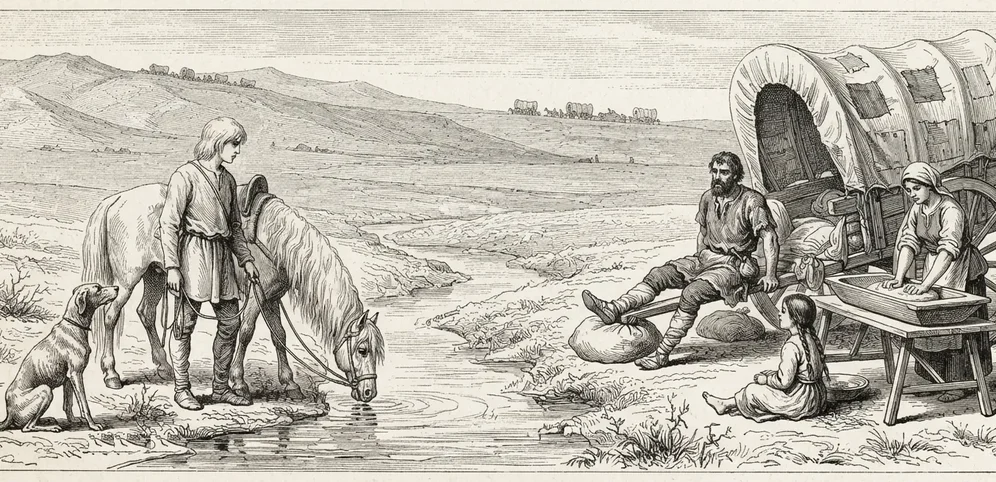
Los suevos
Los jefes de los cuatro pueblos se juntaron en primavera en una llanura alta, sin árboles, donde se veía venir a cualquiera desde muy lejos, y allí se repartieron Hispania como se reparte un cordero.
Teudo lo vio desde una loma. No estaba invitado nadie que no fuera jefe, ni hacía falta. Medio pueblo suevo se había subido a las lomas de alrededor a mirar, y lo mismo los vándalos y los alanos, cada uno en su lado, con sus carros y sus fuegos, de modo que la llanura parecía el fondo de un cuenco lleno de gente por los bordes. Abajo, en medio, había una tienda grande de cuero, y alrededor caballos, y hombres que entraban y salían. Desde la loma no se oía nada. Solo se veía.
—¿Qué hacen? —preguntó Ricila.
—Hablan —dijo el padre.
—¿De qué?
—De quién se queda con qué.
Llevaban dos años así. Dos años yendo de un lado a otro de Hispania, comiéndose lo que había, peleándose entre ellos por una villa o un granero, muriéndose de hambre y de peste. Al final los jefes se habían dado cuenta de lo que cualquier campesino habría sabido desde el principio: que si nadie siembra, nadie come. Que hacía falta quedarse quieto en algún sitio. Y que, para quedarse quieto, había que saber dónde.
Estuvieron dos días hablando. Al tercero salieron de la tienda y se pusieron alrededor de una manta tendida en el suelo, y uno de ellos, un viejo, metió la mano en un saco y sacó algo. Una tablilla, o una piedra, o un hueso marcado; desde la loma no se veía. La levantó. Hubo un murmullo entre los hombres de abajo. Luego sacó otra. Y otra.
—Lo echan a suertes —dijo Wilja, que estaba al lado con sus hijas—. Para que nadie se enfade.
—Se van a enfadar igual —dijo el padre.
Les tocó Gallaecia.
La noticia subió por la loma de boca en boca, cambiando por el camino, y cuando llegó a ellos ya era un nombre y poco más. Gallaecia. El noroeste. El fin del mundo, decían, donde la tierra se acaba y empieza el mar de verdad, el que no tiene otra orilla. Tierra de montes y de lluvia. Les tocaba a medias con los vándalos asdingos de Gunderico, que se quedaban con la parte del este; los suevos se quedaban con la costa.
Hubo gente que protestó. Gente que había oído hablar de la Bética, del sur, del sol, del aceite, y que decía que a los suevos les había tocado lo peor, el rincón húmedo, el sitio adonde nadie quería ir. Hubo un hombre de la aldea de al lado que dijo que aquello era una trampa de los vándalos, y otro que le contestó a gritos, y se empujaron, y hubo que separarlos.
El padre no protestó. Se quedó sentado en la loma mirando hacia el noroeste, donde no se veía nada más que la meseta parda y el cielo.
—¿Es buena tierra? —le preguntó Teudo.
—Llueve —dijo el padre.
—Eso dicen que es malo.
—Eso dicen los que no siembran. —El padre arrancó una brizna de hierba seca y la mordió—. Donde llueve crece todo. En las colinas llovía. —Se quedó callado un momento—. Se parecerá.
Teudo lo miró. Era la primera vez en cinco años que el padre hablaba de las colinas como de algo que se podía volver a tener.
Esa noche hubo fiesta en el campamento suevo. Una fiesta pobre, porque no había casi nada que comer, pero fiesta. Los hombres sacaron el poco vino que quedaba y lo bebieron alrededor de los fuegos, y cantaron las canciones viejas, las de las colinas, y alguno lloró al cantarlas. Hermerico, el rey, pasó a caballo entre los fuegos con sus hombres, despacio, saludando. Era un hombre ancho y bajo, de barba rojiza, con un manto azul y un collar de oro, y Teudo lo vio de cerca por primera vez. Le pareció cansado. Le pareció un hombre que había estado dos días discutiendo en una tienda y que tenía ganas de dormir.
Al pasar junto al fuego del padre, el rey se paró. Miró los bueyes, Rojo y el Viejo, que estaban echados detrás del carro, rumiando.
—¿Son tuyos? —le preguntó al padre.
—Del chico —dijo el padre, y señaló a Teudo—. Los ha traído él desde el Rin.
El rey miró a Teudo. Teudo no supo dónde meterse.
—Pues que los lleve hasta el mar —dijo el rey. Y siguió adelante.
Más tarde, cuando ya el fuego estaba bajo, apareció Odo.
Teudo no lo había visto en todo el invierno. Odo tenía diecisiete años ya, era más alto que el padre y llevaba una espada. Una espada de verdad, al cinto, con la vaina de cuero claveteada, y un escudo redondo pintado de azul a la espalda, y el pelo anudado sobre la sien derecha como los guerreros. Se sentó junto al fuego sin que nadie le invitara, como se sientan los que ya son hombres, y estiró las piernas.
—Me ha cogido Hermerico —dijo—. Para su guardia. Desde la primavera.
Lo dijo como si no tuviera importancia, mirando las brasas. Teudo no dijo nada. Miraba la espada.
—Allí arriba, en Gallaecia, hay castros —siguió Odo—. Aldeas en lo alto de los montes, con murallas de piedra, redondas. La gente de allí no son romanos, o no del todo. Son galaicos. No se dejan mandar por nadie. Los romanos tardaron cien años en domarlos y dicen que todavía no lo han conseguido. —Sonrió—. Va a haber trabajo.
—¿Para qué? —preguntó la madre desde el carro, sin asomarse.
Odo no contestó. Se levantó, se ajustó la espada y le dio a Teudo un golpe en el hombro, de los que se dan entre hombres.
—Cuando cumplas los dieciséis, díselo a Hermerico. Dile que vas de mi parte. Te cogerá.
Y se fue entre los fuegos, con su escudo azul a la espalda. Teudo se quedó mirándolo hasta que la oscuridad se lo tragó. Tenía quince años y nunca había tenido una espada. Tenía dos bueyes y una honda.
—No le hagas caso —dijo la madre desde el carro.
—No le hago caso.
—Sí le haces.
Ricila se pasó la noche diciendo que el rey había hablado con Teudo. Teudo le dijo que se callara. Pero luego, ya tumbado junto a los bueyes, tardó mucho en dormirse, y no fue por el frío.
Los vándalos
Gisa era silinga.
Nadie se acordaba ya, ni ella misma casi. Había nacido en las tierras de bosque y río del norte, donde vivían los silingos, y se había casado con Guntario a los dieciséis años, en una boda de verano, y se había ido a vivir con él a los asdingos, a la llanura de los caballos, como se van las mujeres a la casa del marido. De aquello hacía doce años. Desde entonces había sido asdinga. Había hablado como ellos, cocinado como ellos, llorado a sus muertos como ellos. Fridila, su hermano pequeño, se había venido con ella porque era un niño y no quería separarse de su hermana, y ahora estaba enterrado en una zanja junto al Rin, entre asdingos.
Pero era silinga. Y cuando bajó la noticia del reparto por las lomas, Guntario se acordó.
—A los silingos les ha tocado la Bética —dijo.
Gisa estaba amasando. No levantó la vista.
—Y a nosotros Gallaecia.
—A los asdingos —dijo Guntario.
Entonces sí la levantó.
Guntario estaba sentado en la lanza del carro, con la pierna mala estirada encima de un saco, como se ponía siempre. Llevaba cinco años cojo. Se había quedado delgado, más que antes, y le habían salido canas en la barba, y por las noches le dolía la pierna tanto que a veces lo oía apretar los dientes en la oscuridad. Pero aquel día la miraba de una manera que Gisa no le había visto desde hacía mucho. Como la miraba antes del Rin.
—Gallaecia es montaña —dijo Guntario—. Montaña y lluvia y bosque. Es buena tierra para un hombre que pueda subir cuestas detrás de las vacas. —Se tocó la pierna—. Yo no puedo.
—Guntario...
—La Bética es llana. Es tierra de olivos y de trigo, de ríos anchos. Allí un cojo puede ser labrador. Puede tener una casa. —Se calló un momento—. Y allí van los tuyos. Tu gente. Tus primos. Tu tío Wandil, si vive.
—Hace doce años que no los veo.
—Por eso.
Gisa dejó la masa. Se limpió las manos en el delantal, despacio, una y otra vez, aunque ya las tenía limpias.
—¿Y los asdingos? ¿Y Gunderico? Tú eres asdingo. Tu padre luchó por su padre.
—Mi padre está muerto. El padre de Gunderico está muerto. —Guntario miró hacia los fuegos de los asdingos, en la otra loma—. Yo he luchado bastante. Ahora quiero que mi hija coma.
Asta estaba sentada en el suelo, al lado, jugando con unas piedras y fingiendo que no escuchaba. Tenía siete años. Gisa la miró. La niña levantó la cabeza y la miró a ella.
—¿Nos vamos? —preguntó Asta.
—Puede.
—¿Con Prisca?
Prisca estaba al lado del fuego, cosiendo, y se quedó quieta con la aguja en el aire.
—Con Prisca —dijo Guntario—. Si quiere venir.
Prisca no dijo nada. Pero esa noche, cuando Gisa se despertó a beber agua, la vio sentada junto al fuego apagado, a oscuras, con un trozo de tela en las manos que no estaba cosiendo, mirando hacia el sur.
No fue fácil. Un hombre no se va de su pueblo así como así, ni siquiera un cojo. Guntario tuvo que ir a hablar con los jefes de su linaje, y luego con un hombre de Gunderico, y luego con los silingos, que no le conocían y no tenían ninguna gana de cargar con un asdingo cojo y su familia. Fue Gisa la que lo arregló al final. Bajó sola, a pie, al campamento de los silingos, y fue de fuego en fuego preguntando por la familia de su madre, diciendo el nombre de su padre y el de su abuelo, hasta que una vieja levantó la cabeza al oírlo y la miró mucho rato con los ojos entornados.
—Tú eres la hija de Hilde —dijo la vieja—. La que se casó con un asdingo.
—Sí.
—Tienes su misma nariz. —La vieja se levantó, despacio, apoyándose en un palo—. Yo soy Rotrud. Tu madre y yo éramos primas. Te tuve en brazos el día que naciste. Llorabas como un ternero.
Gisa no se acordó de ella. Pero la abrazó, y la vieja la abrazó a ella, y olía a humo y a leche agria como olían todas las viejas de su infancia, y Gisa se echó a llorar como no había llorado desde Fridila.
La víspera de la partida, Ansila vino a despedirse.
Vino solo, a pie, ya de noche. Era un hombre callado y de pocas palabras, el que había perdido al hijo mayor junto al Rin y el que había tenido a Prisca para moler el grano. Se quedó de pie junto al carro, sin saber qué hacer con las manos. Guntario le ofreció sitio junto al fuego. Ansila no se sentó.
—Te llevas a la romana —le dijo a Guntario.
—Se viene ella.
Ansila asintió. Luego miró a Prisca, que estaba junto al fuego, y Prisca lo miró a él. Estuvieron así un momento. Gisa no sabía qué había pasado entre los dos en aquel año en que Prisca molía su grano y cargaba su agua, y no quería saberlo. Pero vio que Ansila tragaba saliva.
Sacó algo de debajo del manto y se lo tendió a Prisca. Era un peine. Un peine de hueso con los dientes finos, de los que usaban las mujeres romanas, con unas flores grabadas en el lomo.
—Era de tu casa —dijo Ansila—. Lo cogí aquel día. Lo he llevado todo este tiempo.
Prisca miró el peine sin cogerlo. Gisa vio que le temblaba la boca. Luego lo cogió, muy despacio, con las dos manos, y se lo llevó al pecho.
Ansila se dio la vuelta y se fue sin decir nada más. Prisca se quedó junto al fuego con el peine apretado, sin moverse, hasta que Asta se le subió al regazo y le preguntó de quién era. Prisca le dijo que era de una niña que se llamaba Julia. Y luego, por primera vez, le peinó las trenzas a Asta con él.
Tres días después, cuando los pueblos empezaron a moverse cada uno hacia su suerte, el carro de Guntario no fue hacia el noroeste con los asdingos. Fue hacia el sur, detrás de los carros de los silingos.
Los alanos
A los alanos les tocó la mejor parte, porque eran los más fuertes. Lusitania entera, de mar a mar, y la Cartaginense, que era casi tan grande. Todo el centro y el oeste de Hispania. Nadie se atrevió a discutirlo.
Arsak se enteró en la loma de los alanos, donde estaba con Beorgor y la partida. Respendial salió de la tienda el último, sin prisa, se subió a su caballo y cabalgó despacio entre los suyos para que todos lo vieran. Los alanos golpearon los escudos con las espadas. Arsak también. Pero lo hizo sin ganas, mirando hacia otro sitio.
A Respendial lo seguía, un poco detrás, un hombre joven al que Arsak no conocía bien. Alto, muy rubio, con una cicatriz que le partía una ceja y un caballo blanco que valía más que diez como el suyo. Se llamaba Addax. Era de la familia de los reyes, sobrino o nieto de alguien, y se decía que Respendial lo tenía de su lado porque era el mejor jinete de los alanos y porque los hombres jóvenes le seguían. Arsak lo vio pasar y lo vio mirar a los suyos desde el caballo, uno por uno, como se mira un rebaño que se va a contar.
—Ese será rey —dijo Beorgor a su lado, en voz baja.
—¿Y Respendial?
—Respendial es viejo. Y los viejos se mueren. —Beorgor se rascó la barba—. Ese ha nacido para mandar. Se le ve en cómo se sienta. Y los que nacen para mandar acaban mandando, aunque sea a un pueblo que no existe.
Arsak no entendió qué quería decir con eso. Lo entendió siete años después, en otra loma.
Pero aquella mañana no miraba a Addax. Miraba la loma de los vándalos.
Llevaba toda la mañana buscando. No sabía bien qué. Desde que había empezado la reunión, los tres pueblos habían acampado tan cerca como no habían estado desde el Rin, y Arsak se había pasado los días mirando los fuegos de los vándalos de lejos, de uno en uno, sin saber por qué. Bueno: sí sabía por qué. Pero no se lo decía.
Lo encontró el tercer día. Por casualidad, como se encuentran las cosas que uno ha buscado mucho.
Bajó al arroyo a dar de beber al caballo y, en la otra orilla, a veinte pasos, había un carro de vándalos. Un hombre sentado en la lanza del carro con una pierna estirada encima de un saco. Una mujer de ojos grises amasando. Y una niña sentada en el suelo, jugando con piedras.
Arsak se quedó quieto con la rienda en la mano.
Era él. Había cambiado: estaba más flaco, más viejo, con canas en la barba. Pero era él. Arsak le había tenido en brazos, le había arrastrado por la nieve con tres francos alrededor, le había oído hablar todo el camino hasta su carro. La mujer también era ella. Y la niña... la niña ya no era la niña. Era otra cosa. Una cría de siete años, larguirucha, con el pelo claro recogido en dos trenzas, que hablaba con alguien que Arsak no veía, una mujer morena sentada junto al fuego.
Se llevó la mano al pecho, a la fíbula.
Tenía que cruzar el arroyo. Eran veinte pasos. Tenía que cruzarlo, ponerse delante de aquel hombre y enseñarle el pájaro de bronce, y el hombre lo reconocería, y se levantaría, y le diría algo en su lengua. Arsak lo había imaginado muchas veces en aquellos cinco años, por las noches, delante de la espada clavada.
No cruzó.
No supo nunca por qué. Quizá porque el hombre estaba riéndose de algo que había dicho la niña, echando la cabeza atrás, y la mujer se reía también, y Arsak tuvo la sensación de que, si cruzaba, aquello se rompería. Quizá porque no sabía qué iba a decir. Quizá porque él no tenía nada: ni familia, ni carro, ni casa, ni padre. Solo un caballo, un perro sin nombre y la fíbula de aquel hombre, y le dio vergüenza aparecer así, como un pedigüeño, a cobrarse una deuda.
La niña levantó la cabeza.
Lo miró. Desde la otra orilla del arroyo, a veinte pasos. Lo miró un rato largo, muy seria, como lo había mirado cinco años antes desde los brazos de su madre, la tarde de los francos. Arsak no se movió. La niña tampoco. Luego la mujer morena le dijo algo, y la niña se volvió, y Arsak tiró de la rienda del caballo y se fue de allí sin dejarle terminar de beber.
Esa noche le contó a Beorgor lo que había pasado. No pensaba contárselo, pero se lo contó.
—¿Y por qué no cruzaste? —le preguntó el viejo.
—No lo sé.
Beorgor se quedó callado un rato.
—Van al sur —dijo al fin—. Los silingos, a la Bética. Lo he oído. Ese carro va con ellos.
—¿Cómo lo sabes?
—Porque yo sí he mirado. —El viejo escupió en el fuego—. La Bética linda con Lusitania. Por el este, por los montes. No está lejos.
Arsak no contestó. Pero esa noche, al clavar la espada en la tierra, por primera vez desde que había muerto su padre, pidió algo. Fue una cosa muy pequeña. Pidió saber el nombre de la niña.
La espada no le contestó, como no contesta nunca. Por la mañana los alanos se pusieron en marcha hacia el oeste, hacia Lusitania. Arsak se volvió en la silla una vez para mirar los carros de los silingos, que se iban hacia el sur, levantando polvo. No los distinguía. Eran todos iguales.
Luego se dio la vuelta y no volvió a mirar.
La niebla
Gallaecia, la Bética y Lusitania – del verano de 411 a la primavera de 412
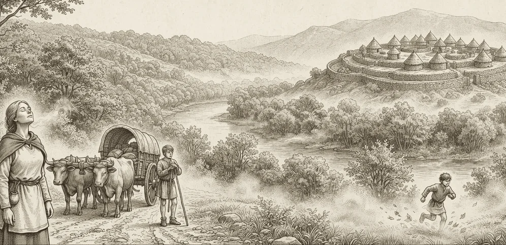
Los suevos
Gallaecia apareció una mañana de finales del verano, y lo primero que Teudo vio de ella fue la niebla.
Venían del sur, por una calzada romana que subía y bajaba entre montes de brezo y de piedra, y llevaban días viendo cómo la tierra cambiaba: menos encinas y más robles, menos polvo y más barro, menos sol. Aquella mañana se despertaron y no se veía nada. Ni los montes, ni el camino, ni el carro de Wilja, que estaba a diez pasos. Una niebla blanca, espesa, que se movía despacio, que olía a agua y a hierba mojada y se metía en la boca al respirar. Los bueyes resoplaban. Ricila se rio y se puso a correr dentro de ella, apareciendo y desapareciendo como un fantasma.
La madre se quedó parada junto al carro. Teudo la miró. Tenía la cara levantada, los ojos cerrados, y respiraba despacio, hondo, como se respira el olor del pan.
—Así olía en casa —dijo.
La niebla levantó a media mañana, de golpe, como quien quita una sábana, y debajo apareció un valle verde. Verde de verdad, no el verde quemado de la meseta, sino un verde oscuro, mojado, casi negro en las sombras. Prados. Bosques de robles y de castaños. Un río ancho que bajaba lento entre alisos. Y en lo alto de un monte, enfrente, un castro: una aldea de casas redondas de piedra, con los tejados de paja en punta, rodeada de dos murallas, una dentro de otra, como un ojo.
—Galaicos —dijo el padre.
Se quedaron a vivir en aquel valle, junto a aquel río, que los romanos llamaban Durius, el Duero. Fue cosa del rey. Hermerico había repartido Gallaecia entre los suyos como se reparte el pan en una mesa: a cada jefe un valle, a cada aldea un trozo del valle. Y a la aldea del padre le tocó aquel, en la orilla norte del río, en la frontera del sur, frente a las tierras de Lusitania que ahora eran de los alanos. Les tocó porque alguien tenía que guardar el río. El padre no protestó.
En el valle había una villa romana, y en la villa, un romano.
Se llamaba Materno. Era un hombre de unos cincuenta años, alto, calvo, con una barriga redonda y unos ojos pequeños y listos que no se perdían nada. La villa era suya, y de su padre, y del padre de su padre, desde los tiempos en que los primeros romanos habían subido hasta allí a sacar oro de los ríos. No había huido. Cuando llegaron los suevos, salió a recibirlos a la puerta, solo, con una túnica limpia y una jarra de vino en las manos, y se puso a hablar en un suevo malo pero entendible, que nadie supo dónde había aprendido.
Lo que dijo, más o menos, fue esto: que ya sabía a qué venían. Que los romanos de Hispania estaban cansados de guerras y de emperadores que no les defendían. Que él tenía mucha tierra y pocos brazos, porque la peste se había llevado a la mitad de sus colonos. Que los suevos tenían muchos brazos y ninguna tierra. Y que, si querían, podían quedarse con un tercio de la suya, la del otro lado del arroyo, con su casa de labor y su molino, y él seguiría con el resto, y serían vecinos.
—¿Y si no queremos? —preguntó uno de los jefes de la aldea.
Materno se encogió de hombros.
—Entonces os la quedáis entera y me matáis. Pero tendréis que aprender solos cuándo se siembra aquí, cuándo se cosecha y en qué prado no se puede meter el ganado en invierno porque se hunde. —Sonrió—. Yo os lo puedo decir gratis.
Se quedaron con el tercio.
La casa de labor era de piedra, larga y baja, con el tejado de pizarra, un establo debajo y un hórreo al lado, sobre pilares, para que no se comieran el grano los ratones. Dentro había una cocina con un fuego en el suelo y un banco de piedra a lo largo de la pared. Cabían tres familias. Les tocó al padre, a Wilja con sus siete hijas y a una viuda con dos hijos que se habían quedado sin hombre en los Pirineos.
La primera noche, Teudo no pudo dormir.
No era el ruido; no había ruido. Era al revés. Llevaba cinco años durmiendo debajo de un carro, o junto a los bueyes, o al raso, oyendo el viento, la lluvia, los perros, la gente que se movía en la oscuridad. Ahora había un techo. Había una pared de piedra a un palmo de la cabeza, fría, que no se movía. Había una puerta. El padre la había cerrado antes de acostarse, y había puesto la tranca, y Teudo había oído el golpe de la madera al caer en su sitio y le había parecido el ruido más raro del mundo.
A medianoche se levantó, abrió la puerta y salió.
Fuera llovía. Una lluvia fina, de las de allí, que no se veía pero mojaba. Los bueyes estaban en el establo de abajo. Teudo bajó a verlos. Rojo y el Viejo estaban echados en la paja, uno junto al otro, rumiando. Cuando lo vieron, el Viejo levantó la cabeza y resopló, como diciendo: ¿tú también?
Teudo se tumbó en la paja entre los dos, con la espalda contra el costado del Viejo. Así se durmió.
Por la mañana el padre bajó a buscarlo y lo encontró allí. No le dijo nada. Se sentó en el borde del pesebre y se quedó un rato mirándolo dormir, con una mano apoyada en el lomo de Rojo, y cuando Teudo se despertó, el padre ya se había ido a ver el molino.
Aquel invierno sembraron. Era la primera vez en cinco años que el padre metía un arado en la tierra. Teudo lo vio hacerlo, con los bueyes, en la tierra negra y mojada del otro lado del arroyo, y vio que el padre lloraba mientras abría el surco, despacio, sin esconderse, con la cara mojada de lluvia y de otra cosa. Materno estaba en la linde, mirando, con su túnica limpia y su barriga, y cuando el padre terminó el primer surco, el romano se acercó, cogió un puñado de tierra, lo olió y le dijo algo en voz baja.
El padre le preguntó a Teudo qué había dicho. Teudo había aprendido algo de latín de Lupo.
—Que es buena tierra —tradujo—. Y que ha sido de muchos.
Los vándalos
El sol de la Bética no se parecía a ningún otro sol.
Asta lo descubrió el primer día. Venían bajando por un puerto de la sierra, entre jaras y encinas, con un calor que ella no había sentido nunca, y de pronto, al salir de una curva, la tierra se abrió delante de ellos como un mantel. Era llana hasta el fin del mundo. Era dorada, de trigo segado. Y en medio había un río tan ancho que se veían barcas en él, y a los dos lados del río, olivos. Miles de olivos. Puestos en filas, en filas y en filas, grises y verdes, hasta donde alcanzaba la vista, como un ejército quieto.
Asta tenía siete años y nunca había visto tanto de nada.
—¿Todo eso es de alguien? —le preguntó a Prisca.
—Todo —dijo Prisca—. Cada árbol.
—¿Y ahora de quién es?
Prisca no contestó.
La tierra que les tocó estaba a un día de camino de una ciudad grande que los romanos llamaban Hispalis, en una loma suave junto al río, un poco apartada de las demás. Fue cosa de Rotrud, la vieja prima de su madre, que conocía al hombre que repartía las tierras de aquella comarca entre los silingos y que, según Gisa, le había gritado tanto que el hombre había acabado dándoles lo que pedían para que se callara. Era una granja pequeña, no una villa. Una casa encalada, con un patio en medio y un pozo, un horno, un corral, un huerto con una higuera y un granado, y alrededor cuarenta olivos viejos, retorcidos, con los troncos huecos, que llevaban allí más tiempo que nadie.
La casa estaba vacía. Los que vivían allí se habían ido hacía poco: había ceniza en el horno y una escoba apoyada en la pared, y en el patio, en un rincón, una maceta de barro con una planta de flores rojas que alguien había seguido regando hasta el último día.
Guntario la vio y se quedó callado.
No era como la villa de la Galia, la de los mosaicos. No tenía pinturas en las paredes, ni suelos de piedrecitas, ni nada que diera miedo pisar. Era una casa de gente de trabajo. Guntario entró cojeando, despacio, tocando las paredes, y se paró en el patio, junto al pozo, y miró la maceta de las flores rojas.
—Aquí sí —dijo.
Esa noche durmieron dentro. Todos. Guntario, Gisa, Asta, Prisca y el perro viejo de la villa de la Galia, que había hecho el viaje entero detrás del carro y que se tumbó en el umbral como si llevara allí toda la vida.
Los primeros meses fueron de aprender. Ninguno de ellos sabía nada de olivos. En el Óder no había olivos. En la Galia tampoco. Guntario se pasaba las mañanas sentado debajo de ellos, mirándolos, como si fueran a decirle algo. Fue Prisca la que fue a buscar a quien supiera.
Había una aldea al otro lado de la loma, de romanos, de los que no habían huido. Gente pobre, colonos, que trabajaban las tierras de otros y que ahora no sabían de quién eran las tierras que trabajaban. Prisca bajó un día sola, con un cesto, y volvió al atardecer con un viejo. Era un hombre pequeño y seco, con la piel tan oscura y arrugada como la corteza de un olivo, que se llamaba Silvano y que no tenía ni un diente. Se paró en la linde y miró a Guntario de arriba abajo.
Guntario lo miró a él.
—Dile que le pagaremos —le dijo a Prisca.
Prisca se lo dijo. Silvano dijo algo y escupió.
—Dice que no quiere dinero de bárbaros —tradujo Prisca—. Que quiere el tercio del aceite. Y que le dejes coger higos de la higuera, que la plantó su abuelo.
Guntario se rio.
—Dile que sí.
Silvano les enseñó todo. Les enseñó a podar, a quitar los chupones que salen en el tronco y no dan nada, a dejar el árbol abierto por dentro para que le dé el sol. Les enseñó a varear en invierno, cuando la aceituna está negra, con unas varas largas, sin dar en las ramas buenas. Les enseñó a llevar la aceituna a la almazara de la aldea, donde una piedra redonda tirada por un burro la molía, y a prensar la pasta en unos capachos de esparto, y a ver salir el aceite, verde y espeso, oliendo a hierba cortada.
Asta lo aprendió todo con él. Iba detrás de Silvano por los olivos como había ido detrás de Prisca por las villas de la Galia, preguntando, y el viejo le contestaba en latín, y ella le contestaba en vándalo, y se entendían. Silvano le enseñó también a trepar a los olivos, cosa que no le enseñó a nadie más, y a coger higos maduros sin que se reventaran, y a saber, por cómo cantaban los grillos, si al día siguiente iba a hacer calor.
En el invierno, con la primera aceituna, Gisa hizo pan con aceite nuevo. Lo mojó en el aceite caliente, recién salido de la prensa, y se lo dio a Guntario. Guntario lo probó. Se quedó callado mucho rato.
—Esto —dijo— es lo que defendían los romanos.
—¿El qué?
—Esto. —Levantó el pan—. No Roma. Esto.
Los alanos
A Arsak le tocó una villa junto al río Anas, a medio día a caballo de Emerita, en una tierra de encinas y de pasto que se parecía tanto a la estepa como podía parecerse algo en Hispania.
No se la tocó por suerte, sino porque nadie más la quiso. La villa estaba medio quemada, de algún saqueo de los años malos, y tenía el tejado hundido en la mitad de las habitaciones. Los jefes alanos se habían quedado con las villas buenas, las grandes, las que tenían bodegas llenas, y habían repartido lo demás entre los suyos según el linaje, la familia, los caballos que tenían. Arsak no tenía linaje, ni familia, ni más caballo que el suyo. Le dieron lo que sobraba.
Llegó un día de otoño, a caballo, con el perro sin nombre detrás. Lo que encontró fue esto: una casa grande con el tejado medio hundido; un patio con columnas, dos de ellas caídas; un huerto comido por las zarzas; un pozo; una higuera; un establo con el techo entero, que era lo único que estaba bien. Y en el establo, gente.
Eran tres. Un hombre viejo, una mujer vieja y un niño de unos diez años. Estaban sentados en el suelo, entre la paja, como si esperaran algo, y cuando Arsak entró con el caballo de la rienda, el viejo se levantó despacio, se puso delante de los otros dos y bajó la cabeza.
Arsak se quedó quieto.
Habían sido colonos de la villa. Eso lo supo después, cuando aprendió algo de su lengua. Trabajaban las tierras del dueño desde siempre, ellos y sus padres y sus abuelos, y vivían en unas casas de adobe junto al río que los años malos habían quemado. El dueño se había ido a Emerita con su familia. Los colonos no tenían adónde ir. Se habían metido en el establo, porque era lo único con techo, y estaban esperando a ver qué hacía con ellos el bárbaro al que le tocara la villa.
El viejo se llamaba Marcelo. La mujer, Tecla. El niño era su nieto, y se llamaba Félix, que quería decir afortunado, y era un nombre que daba risa, porque sus padres habían muerto los dos de la peste el año anterior.
Arsak los miró mucho rato. Luego ató el caballo a una argolla de la pared, se sentó en la paja frente a ellos y sacó la carne seca que llevaba. La partió en cuatro trozos. Les dio tres.
El viejo no la cogió. El niño sí. Se la comió de un bocado, mirándole a los ojos, como un perro que no se fía. La mujer le dio un golpe en la mano.
Arsak se rio. Hacía mucho que no se reía.
Se quedaron. No hubo ningún trato, porque no podían hablarse. Simplemente se quedaron. Arsak durmió aquella noche en la casa grande, en la única habitación con techo, con el perro a los pies y la espada a mano, y los colonos en el establo. Al día siguiente, cuando se despertó, Marcelo estaba en el huerto cortando zarzas con una hoz. No le había dicho nadie que lo hiciera.
Pasaron el invierno así. Arsak no sabía nada de huertos ni de olivos, ni de trigo, ni de cerdos. Sabía de caballos. Marcelo sabía de todo lo demás. Aprendieron a hablarse con las manos, con palabras sueltas, con dibujos en la tierra. En la primavera, Marcelo le enseñó a Arsak a arreglar el tejado con tejas de las habitaciones hundidas, y Arsak le enseñó a Félix a montar a caballo.
Félix tenía miedo de los caballos. Arsak no lo entendía. Un niño que tiene miedo de los caballos le parecía tan raro como un pez que tuviera miedo del agua. El primer día lo subió a su yegua, a pelo, y el niño se agarró a las crines llorando, y Tecla salió del establo gritando cosas que Arsak no entendió pero que se imaginó. El segundo día el niño no lloró. El décimo, al atardecer, Arsak lo vio solo en el prado, sin que nadie se lo hubiera dicho, montado en la yegua, al paso, muy derecho, con la cara seria de los que se están aguantando las ganas de gritar de alegría.
Arsak estaba en la puerta de la villa, mirándolo. Tecla se le acercó por detrás, despacio, y se quedó a su lado. Estuvieron un rato los dos mirando al niño.
Luego Tecla le dijo algo en latín. Una frase corta.
Arsak no la entendió. Pero se acordó de cómo sonaba, y meses después, cuando ya sabía algo más de su lengua, le preguntó a Marcelo qué quería decir.
Marcelo se lo explicó. Quería decir: «Su padre también montaba así».
Aquella primavera Arsak cerró la puerta de la villa por primera vez. Una noche, sin pensarlo, al acostarse. Puso la tranca, oyó el golpe de la madera al caer y se quedó un momento quieto, con la mano en la puerta.
Luego se acordó de Beorgor.
La paz
Gallaecia, la Bética y Lusitania – 412 y 413
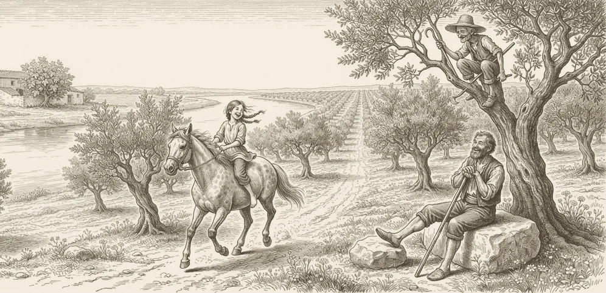
Los suevos
En la orilla del Duero, en lo alto de un monte que caía a pico sobre el río, había un castro viejo que los galaicos habían abandonado hacía generaciones y que los suevos llamaban la Peña.
Era el mejor sitio de todo el valle para ver venir a alguien. Desde arriba se veía el río de un lado a otro, con sus dos vados, y la tierra de enfrente, la de Lusitania, hasta las sierras azules del sur. Tenía dos murallas de piedra seca, una dentro de otra, con un foso entre las dos, y dentro, los restos de unas treinta casas redondas, la mayoría sin tejado. Hermerico se la había dado a un jefe de su confianza, un hombre seco y de pocas palabras llamado Fravita, con veinte guerreros, para que guardara el río. Fravita había mandado arreglar la muralla de fuera y tres de las casas, y había puesto una torre de madera en lo más alto. Era lo más parecido a una fortaleza que había en cien leguas.
Odo estaba allí.
Teudo lo supo en la primavera, cuando cumplió dieciséis años. Subió a la Peña una mañana sin decirle nada a nadie, con la honda al cinto y el corazón en la boca, y se presentó en la puerta de la muralla. Un guerrero le preguntó qué quería. Teudo dijo que quería ver a Odo. El guerrero se rio y lo dejó pasar.
Odo estaba en el patio, entrenando con otros dos. Tenía diecinueve años y una barba rubia, rala, que se acariciaba todo el rato, y cuando vio a Teudo dejó la espada de madera, se secó el sudor y se acercó despacio.
—Ya tienes dieciséis —dijo.
—Sí.
—¿Sabes usar algo?
Teudo se sacó la honda del cinto. Odo la miró y se rio, y los otros dos se rieron también. Teudo no dijo nada. Miró a su alrededor, buscó algo, y en lo alto de la torre de madera, colgado de un clavo, vio un cuerno de vaca que debían de usar para dar la alarma. Estaba a cincuenta pasos. Sacó una piedra de la bolsa, la puso en la honda y la hizo girar dos veces.
El cuerno saltó del clavo y cayó al patio.
Los tres se quedaron callados. Desde una de las casas, un hombre seco con la barba gris salió a ver qué había sido el ruido. Era Fravita. Miró el cuerno en el suelo, miró a Teudo con la honda en la mano y no dijo nada durante un rato.
—Ven mañana —dijo al fin—. Al amanecer. Te enseñaremos lo demás.
Teudo bajó de la Peña corriendo y no paró hasta la casa de labor. Allí se encontró al padre en el patio, arreglando un yugo. Se paró delante de él, sin aliento, y se lo contó. El padre siguió con el yugo.
—¿Y los bueyes? —preguntó.
Teudo no había pensado en los bueyes.
—Por las tardes —dijo—. Subo por la mañana y por la tarde los bueyes.
El padre dejó el yugo. Se quedó mirándolo un rato largo, como lo había mirado en los Pirineos, la noche antes de la bajada.
—Tu abuelo era guerrero —dijo—. Y su padre. Yo no. Yo soy labrador. Cuando me tocó luchar, en el Rin, en Mogontiacum, luché. Pero no me gustaba. —Cogió el yugo otra vez—. No sé si es bueno que te guste.
—No sé si me gusta.
—Ya lo sabrás.
Así fue aquel año. Por las mañanas, la Peña: la espada de madera, el escudo, la lanza, correr con peso, aprender a ponerse en fila con los demás, hombro con hombro, escudo con escudo, a no romper la fila aunque te den. Odo era bueno. Fravita era mejor, y no hablaba nunca, y cuando te equivocabas te daba con el canto de la espada en las piernas, sin enfado, como se le da a un buey que se sale del surco. Por las tardes, los bueyes, el campo, el molino. Por las noches, Teudo caía en la paja como una piedra, con los brazos llenos de cardenales, y se dormía antes de cenar.
En otoño, Fravita le dio la primera guardia de noche.
Le tocó en la torre de madera, la más alta, de medianoche hasta el amanecer, con un cuerno colgado al cuello, el mismo al que había tirado la piedra, y la orden de soplar si veía algo moverse al otro lado del río. Teudo subió la escalera de mano con el corazón golpeándole, se sentó en el suelo de tablas, con la lanza entre las rodillas, y se puso a mirar.
No pasó nada. Pasó la noche.
Abajo, el Duero corría negro y hacía un ruido suave, constante, como alguien que respira dormido. Enfrente, la tierra de Lusitania era una mancha oscura con montes más oscuros al fondo. Y en aquella oscuridad, de vez en cuando, se encendía un fuego. Uno aquí, otro más lejos, otro casi en el horizonte. Pequeños, como chispas. Teudo sabía lo que eran: fuegos de alanos, de pastores, de gente que también estaba despierta a esas horas, quizá también de guardia, quizá mirando hacia aquí, hacia la Peña, y viendo los fuegos de los suevos igual de pequeños.
Pensó en los alanos que había visto pasar en el Rin, llevando los caballos de la rienda por el hielo. Pensó que alguno de ellos estaría ahora junto a uno de aquellos fuegos. Se preguntó cómo se llamaría.
Al amanecer, cuando subió Odo a relevarle, Teudo tenía los dedos helados y los ojos rojos.
—¿Has visto algo?
—Fuegos —dijo Teudo.
—¿Cuántos?
Teudo los había contado. Uno por uno, toda la noche.
—Once.
Odo se rio. Pero le dijo a Fravita que el chico de la honda contaba los fuegos, y Fravita, desde entonces, le dio las guardias de noche cada vez que había luna nueva, que era cuando más fuegos se veían.
Ricila, en cambio, aprendió latín.
Fue cosa suya. Nadie se lo mandó. En la villa de Materno había una capilla, una habitación pequeña con una cruz pintada en la pared, y todos los domingos subía desde la aldea de los colonos un cura viejo, muy flaco, llamado Paulo, a decir misa para el romano y su familia. Ricila lo vio un día y se le acercó. Le dijo, en el latín que le quedaba de Lupo, que quería aprender. El cura le preguntó para qué. Ricila no supo contestarle.
El cura le enseñó igual.
Le enseñó con una tablilla de cera y un punzón, en el pórtico de la villa, los domingos después de la misa. Las letras primero, luego las palabras. Ricila tenía once años y aprendía deprisa, más deprisa que nadie, como si tuviera prisa por algo. La madre no entendía para qué quería un suevo leer en latín. El padre se encogía de hombros. Teudo, una noche, se lo preguntó.
—¿Para qué?
Ricila estaba junto al fuego, con la tablilla en las rodillas, copiando unas letras.
—Para acordarme —dijo.
—¿De qué?
Ricila no contestó. Siguió copiando. Teudo miró por encima de su hombro y vio lo que había escrito, con una letra torcida, de niño: una sola palabra, repetida muchas veces, toda la tablilla llena.
EQVVS.
Los vándalos
Asta aprendió a hilar el invierno en que cumplió nueve años, y lo odió con todas sus fuerzas.
Gisa le enseñó con la rueca y el huso de su madre, los que había traído desde el Óder envueltos en un trapo, y Asta se pasaba las tardes sentada en el patio, junto al pozo, con la lana en una mano y el huso girando en la otra, rompiendo el hilo cada dos vueltas. Gisa le decía que tuviera paciencia. Prisca le decía que todas las niñas del mundo habían aprendido así. Asta les decía a las dos que el huso era tonto, que la lana era tonta, que ella no quería hilar, que ella quería montar a caballo.
Al final aprendió las dos cosas. Hilar, mal, por la mañana. Montar, bien, por la tarde.
Montar se lo enseñó Guntario. Él ya no podía montar mucho, porque la pierna le dolía, pero tenía una yegua torda, vieja y tranquila, que había cambiado por veinte jarras de aceite a un silingo de la aldea de al lado, y una tarde de primavera subió a Asta encima, la soltó en el olivar y se sentó en una piedra a mirar. La niña se cayó tres veces el primer día. Se levantó tres veces sin llorar. El cuarto día ya iba al trote entre los olivos, con las trenzas al viento, gritando, y Silvano, que estaba podando, se bajó del árbol para mirarla y se santiguó.
Guntario se reía. Gisa no lo había visto reírse así desde antes del Rin.
Aquel verano Asta y el perro viejo de la Galia descubrieron el río. Bajaban cada tarde, cuando apretaba el calor, por un sendero entre cañas hasta una playa de arena donde el Guadalquivir hacía un remanso, y la niña se metía en el agua hasta la cintura y el perro ladraba desde la orilla porque no se atrevía. Prisca bajaba con ellos y se sentaba en la arena a la sombra de un sauce, con la labor en el regazo, sin hacerla. Miraba pasar las barcas. Eran barcas planas, cargadas de ánforas de aceite, que bajaban por el río hacia Hispalis y hacia el mar, igual que habían bajado durante cuatrocientos años, como si no hubiera pasado nada. Los barqueros cantaban en latín. Una tarde, uno de ellos saludó a Prisca con la mano, desde lejos, y Prisca le devolvió el saludo, y luego se quedó un rato mirando la mano con la que había saludado, como si no fuera suya.
—¿Le conoces? —le preguntó Asta, chorreando agua.
—No —dijo Prisca—. Pero ha cantado una canción que cantaba mi padre.
Asta quiso que se la cantara. Prisca no quiso. Pero esa noche, al acostarla, la cantó muy bajo, en latín, una canción de barqueros que hablaba de un río y de una muchacha que esperaba en la orilla, y Asta se durmió antes del final.
—Monta como un alano —dijo Guntario esa noche, junto al fuego.
—¿Qué es un alano? —preguntó Asta.
Guntario se quedó callado. Gisa lo miró. Asta tenía nueve años y llevaba toda la vida oyendo hablar a los mayores de cosas que no entendía, de muertos que no había conocido, de un río que no recordaba. Nunca le habían contado lo del alano. Nunca se había presentado la ocasión, o no habían querido.
—Siéntate —le dijo Guntario.
Y se lo contó.
Le contó lo del Rin. La nieve, el hielo, los francos saliendo del bosque con sus hachas. Le contó cómo había caído él, con el escudo partido, con tres hombres encima, en el suelo, esperando el golpe. Y le contó lo del muchacho. Un alano alto y flaco, con el pelo tan claro que parecía blanco, que llegó de la nada a caballo y le salvó la vida y luego le arrastró por la nieve hasta el carro, sin decir nada, sin entender lo que él le decía. Le contó lo de la fíbula.
—¿La del pájaro? —preguntó Asta—. ¿La del abuelo?
—Esa.
—¿Y se la diste?
—Se la di.
—¿Por qué?
Guntario lo pensó.
—Porque era lo único que tenía que valía tanto como mi vida.
Asta se quedó callada mucho rato, con las rodillas abrazadas, mirando el fuego. Gisa pensó que se había dormido. Luego la niña levantó la cabeza.
—Yo lo he visto —dijo.
Guntario y Gisa se miraron.
—Al hombre del pelo blanco. Lo vi en el arroyo, en la llanura grande, cuando se repartían las tierras. Estaba en la otra orilla, con un caballo. Me miraba. —Se quedó pensando—. Tenía un perro con él. Un perro marrón.
Guntario no dijo nada. Se quedó muy quieto, con las manos en las rodillas. Gisa le vio apretar la mandíbula.
—¿Estás segura? —preguntó Gisa.
—No. —La niña se encogió de hombros—. Pero me miraba como si me conociera.
Esa noche, cuando Asta ya dormía, Guntario no se acostó. Se quedó sentado en el patio, junto al pozo, mirando las estrellas. Gisa salió a buscarle.
—Estaba allí —dijo Guntario sin volverse—. A veinte pasos. Y no vino.
—No sabes si era él.
—Era él. —Guntario se frotó la cara con las manos—. Le debo la vida y no le he dado ni las gracias. Ni sé cómo se llama.
—Le diste la fíbula.
—Le di una cosa. —Guntario negó con la cabeza—. Una deuda no se paga con una cosa.
Gisa se sentó a su lado. No había nada que decir. Al cabo de un rato, Guntario volvió a hablar, más bajo, como si hablara solo.
—Si algún día viene a esta puerta, se queda. Lo que necesite. Lo que pida. —La miró—. ¿Me oyes? Aunque yo no esté.
—Te oigo.
—Júramelo.
Gisa se lo juró.
Los alanos
Arsak fue a Emerita por primera vez un día de mercado, en el otoño del segundo año, y se quedó parado en la entrada del puente como un niño.
El puente era lo más largo que había visto nunca hecho por manos de hombre. Cruzaba el Anas de una orilla a otra con sesenta arcos de piedra, uno detrás de otro, tan iguales que parecían el mismo arco repetido, y por encima pasaban carros, mulas, gente a pie, sin que la piedra se moviera. Al otro lado se levantaba la ciudad: murallas, torres, tejados, y por encima de todo, en lo alto, columnas blancas de templos que ya no eran templos. Era más grande que Mogontiacum. Más grande que nada.
—Lo hicieron hace cuatrocientos años —le dijo Marcelo, que iba con él para hablar por él en el mercado—. Mi abuelo decía que lo había hecho un emperador para sus soldados viejos, para que tuvieran una ciudad donde morirse tranquilos.
Arsak no dijo nada. Cruzó el puente a pie, llevando el caballo de la rienda, despacio, tocando la piedra del pretil con la mano libre.
En la ciudad había alanos. Muchos. Se habían repartido las casas buenas, las de los ricos que habían huido, y se paseaban por las calles a caballo, con sus capas y sus collares de oro, mirando a los romanos desde arriba. Los romanos los miraban a ellos desde abajo y no decían nada. Era una paz rara, de dientes apretados. Los alanos mandaban, pero no sabían hacer nada de lo que hacía falta para que una ciudad siguiera viva: ni moler el trigo, ni arreglar los acueductos, ni cobrar los impuestos, ni curar a los enfermos. Así que los romanos seguían haciéndolo todo, y los alanos se quedaban con una parte. Nadie estaba contento. Pero había pan.
Arsak vendió en el mercado dos potros que había criado aquella primavera, los primeros, hijos de su caballo y de una yegua que había cambiado por un arco. Le dieron por ellos más de lo que esperaba: unas monedas de bronce, un saco de sal, una reja de arado nueva para Marcelo y una tela de lana azul para Tecla. Marcelo regateó por él. Lo hizo tan bien que el comprador, un alano gordo de la familia de Respendial, acabó riéndose y dándole una palmada en la espalda al viejo, como se le da a un igual.
Al volver, en el puente, Marcelo le preguntó para qué quería la reja de arado.
—Para ti —dijo Arsak—. Para sembrar.
—La tierra es tuya.
—La tierra es de quien la siembra —dijo Arsak. Lo había oído decir a alguien, no se acordaba a quién. Le pareció que era verdad.
En invierno llegaron los otros.
Eran cinco alanos jóvenes, de una villa más arriba, por el río. Arsak los conocía de vista. Llegaron una tarde a caballo, borrachos, y entraron en el corral y empezaron a sacar a los cerdos. Los cerdos eran de Marcelo; los había criado él, con las bellotas del encinar, y eran toda la carne que tenían para el invierno. Marcelo salió del establo con una horca. Uno de los alanos le dio con el pie en el pecho, desde el caballo, y el viejo cayó de espaldas en el barro.
Arsak estaba en el huerto. Lo vio. Se acercó despacio, andando, sin el arco, sin la espada, con las manos vacías.
Se puso delante del que había tirado a Marcelo. Era un chico de veinte años con la cara llena de granos y un collar de oro que le venía grande.
—Deja los cerdos —le dijo en alano.
El chico se rio. Le dijo que quién era él para mandarle nada. Que aquellos cerdos eran de un romano, y que los romanos no tenían nada, porque todo era de los alanos. Que se lo había dicho el propio Respendial.
Arsak le cogió la pierna y lo tiró del caballo.
Fue un solo movimiento, como le había enseñado su padre a desmontar a un enemigo. El chico cayó en el barro al lado de Marcelo y se quedó sentado, atontado, con el collar de oro torcido. Los otros cuatro sacaron las espadas. Arsak no sacó la suya. Se quedó de pie, en medio del corral, mirándolos, y esperó.
No sabía qué iba a pasar. Sabía que, si lo atacaban, mataría a dos, quizá a tres, y luego lo matarían a él. Lo pensó con mucha calma, como se piensa en el tiempo que va a hacer.
Uno de los cuatro le miró la cara un rato largo. Luego bajó la espada.
—Tú eres el hijo de Saurmag —dijo—. El que murió en la Galia de una lanza en la espalda.
Arsak no contestó.
—Mi padre cabalgó con el tuyo. —El jinete guardó la espada—. Dejad los cerdos.
Se fueron. El chico de los granos se fue el último, cojeando, sin el collar de oro, que se le había caído en el barro y que no se atrevió a recoger. Arsak lo recogió. Se lo dio a Tecla. Tecla lo miró, lo sopesó y se lo guardó en el pecho sin decir nada, con la cara seria de quien sabe exactamente cuántos cerdos vale.
Esa noche, al cenar, Marcelo le sirvió a Arsak primero. Antes que a Félix. Antes que a nadie.
Arsak no entendió por qué hasta mucho después. Era la costumbre de los romanos del campo: en la mesa, se le sirve primero al cabeza de la casa.
Las bodas
Gallaecia, la Bética y Lusitania – 414
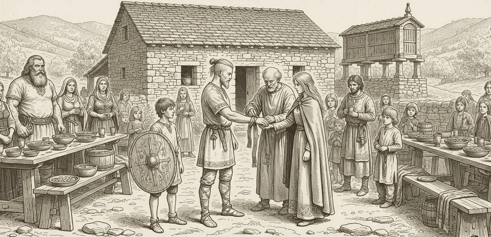
Los suevos
Odo se casó con la mayor de las hijas de Wilja en el mes en que florecen los castaños, y Teudo fue el que le sostuvo el escudo.
Se llamaba Brunhild y tenía diecisiete años, el pelo color de paja y una risa tan fuerte que se oía desde el molino. Teudo la conocía desde siempre, desde el Rin, desde que era una cría flaca que peinaba a Lupo debajo del carro. No se había fijado nunca en ella. Odo sí. Odo llevaba un año subiendo desde la Peña cada vez que le daban permiso, con cualquier excusa, a ayudar a Wilja con el tejado o con los cerdos, y Wilja, que no era tonto y que tenía siete hijas que casar, le dejaba ayudar.
La boda fue en la casa de labor, que era la más grande del valle. Las mujeres se pasaron tres días cocinando. Mataron dos cerdos y un ternero, hicieron pan de trigo, que era el bueno, y cerveza en unos barriles que Materno les prestó, con una sonrisa, porque decía que su abuelo los había usado para el vino y que la cerveza les iba a dar un disgusto. La madre de Teudo tejió para Brunhild un manto nuevo, de lana teñida de verde. Wilja le dio a Odo dos vacas y un cuchillo largo. Odo le dio a Wilja una cadena de plata de Mogontiacum, la última que le quedaba, y a Brunhild, en la mañana siguiente a la boda, como se hacía siempre, el regalo de la mañana: una yegua joven y un telar.
Teudo le sostuvo el escudo azul mientras Odo y Brunhild se cogían de la mano delante de todos, en el patio, y el viejo más viejo de la aldea les ataba las muñecas con una cinta de lana roja y decía las palabras. No eran muchas. Que la tierra que pisaban era ahora de los dos. Que el fuego que encendieran era de los dos. Que los hijos que vinieran eran de los dos. Que si uno se moría primero, el otro guardaría el fuego.
Ricila, que tenía trece años y estaba en ese momento en que todo le parecía ridículo, se rio bajito. La madre le dio un pellizco.
Teudo no se rio. Miró a Odo, que tenía la cara seria de verdad, sin la sonrisa de siempre, y miró a Brunhild, que se mordía el labio para no llorar, y sintió algo raro en el pecho, algo que no supo nombrar. Envidia no era. Era otra cosa.
Esa misma tarde, en mitad de la fiesta, llegó la noticia de la otra boda.
La trajo Materno. Subió desde la villa con su túnica de los domingos y un pergamino en la mano, una carta de un primo suyo de Bracara, la ciudad grande del norte, y se sentó a la mesa de los suevos, que le hicieron sitio porque Materno caía bien a todo el mundo, y se puso a leerla en voz alta, traduciendo a su suevo malo sobre la marcha.
En la Galia, en una ciudad del sur llamada Narbo, el rey de los godos se había casado con la hermana del emperador.
Nadie entendió nada. Materno tuvo que explicarlo dos veces. El rey de los godos se llamaba Ataúlfo. Era el cuñado de Alarico, el que había saqueado Roma cuatro años antes. Y la hermana del emperador se llamaba Gala Placidia, y los godos se la habían llevado de Roma en aquel saqueo, como rehén, y la habían tenido con ellos desde entonces. Y ahora Ataúlfo se había casado con ella. En una casa romana, a la manera romana, vestido de romano, con una túnica de seda. Le había regalado cincuenta muchachos vestidos de seda, cada uno con dos fuentes en las manos, una llena de oro y otra de piedras preciosas, del botín de Roma. Y un romano de los importantes había cantado en la boda una canción para los novios.
—¿Y eso qué quiere decir? —preguntó Wilja.
Materno dobló la carta.
—Quiere decir que los godos ya no quieren destruir Roma —dijo—. Quieren ser Roma.
—¿Y eso es bueno o malo?
El romano se quedó callado. Miró alrededor: a los suevos con su cerveza y sus cerdos, a Odo y a Brunhild con las muñecas todavía atadas con la cinta roja, a los niños corriendo por el patio.
—Para mí, bueno —dijo—. Para vosotros, no sé.
Y luego se levantó, le dio un beso a la novia en la frente, como se hacía entre los romanos, y se fue a su villa.
El padre de Teudo se quedó mucho rato pensativo. Esa noche, cuando ya la fiesta se había acabado y los últimos borrachos dormían en el pajar, Teudo lo encontró sentado en el muro del huerto, mirando hacia el este.
—¿Qué ha querido decir Materno?
—Que si los godos se hacen romanos —dijo el padre—, Roma vuelve a tener soldados.
Unos días después, Ricila bajó a la villa y le pidió a Materno que le dejara leer la carta.
El romano lo miró con curiosidad. Sabía que el cura Paulo le enseñaba letras al chico suevo los domingos; lo sabía todo el valle, y a todo el valle le hacía gracia. Pero nunca lo había visto leer. Le dio la carta y se sentó a mirar.
Ricila la leyó despacio, en voz alta, moviendo los labios, tropezando en las palabras largas, con el dedo debajo de cada línea. Tardó mucho. Materno no le ayudó. Cuando terminó, Ricila levantó la cabeza.
—Aquí pone que Placidia llevaba un vestido de novia de seda de Oriente —dijo—. Y que lloró.
—¿Dónde pone que lloró?
Ricila le enseñó la línea. Materno la miró. Era verdad; él no lo había leído en voz alta en la boda, porque le había parecido que a los suevos les daría igual.
—¿Por qué crees que lloró? —le preguntó.
Ricila lo pensó. Tenía trece años y la cara seria de cuando pensaba en algo de verdad.
—Porque la habían cogido en un saqueo —dijo—. Y ahora se casaba con el que la cogió.
Materno se quedó callado. Luego le quitó la carta de las manos, la dobló con cuidado y se la devolvió.
—Quédatela —le dijo—. Y vuelve cuando quieras. Tengo más.
Desde aquel día Ricila bajó a la villa de Materno cada semana. El romano tenía una habitación con un arcón lleno de rollos y de libros cosidos que habían sido de su padre: Virgilio, un libro de agricultura, unas cartas de un obispo, una historia de Roma desde su fundación. Ricila los leyó todos. Algunos no los entendió. Los leyó igual.
Los vándalos
La boda de los silingos fue en el olivar de Rotrud, debajo de los árboles, en una tarde de finales de verano que olía a higos, y Asta vio por primera vez a una novia de verdad.
Se llamaba Amalaberga. Era nieta de Rotrud y tenía quince años, y se casaba con un hijo del jefe de la aldea, un muchacho grande y tímido que se ponía rojo cada vez que alguien le miraba. Asta la vio por la mañana, cuando las mujeres la estaban preparando en la casa de su abuela, y se quedó en la puerta mirándola con la boca abierta. Le habían soltado el pelo. Era la última vez que lo llevaría suelto en público; desde aquella noche lo llevaría siempre recogido, como las mujeres casadas. Le llegaba hasta las rodillas, rubio, casi blanco, y las mujeres se lo cepillaban por turnos, cantando, y le ponían flores. Llevaba una túnica larga de lino teñida de rojo y, encima, una corona de espigas de trigo y de ramas de olivo.
—¿Por qué olivo? —le preguntó Asta a Gisa en voz baja.
Gisa lo pensó.
—En el Óder se ponían ramas de roble —dijo—. Aquí no hay robles.
Por la tarde, en el olivar, el novio le dio a la novia una espada. Una espada de verdad, la de su padre, y ella la cogió con las dos manos y la tuvo cogida mientras el viejo de la aldea decía las palabras. Luego se la devolvió. Asta no lo entendió y le preguntó a Prisca, que tampoco lo entendía, y fue Guntario el que se lo explicó por la noche: que la espada era la del linaje del marido, y que ella la guardaría para dársela a su primer hijo. Que la mujer guarda la espada de la casa aunque no la use.
Después hubo comida, mucha. Corderos asados en hoyos en la tierra, a la manera vieja, y pan, y aceitunas, y uvas, y vino de los romanos de la aldea de al lado, que vinieron también, algunos, y se sentaron un poco aparte, mirando aquella boda de bárbaros con una mezcla de curiosidad y de miedo. Silvano vino. Se sentó junto a Guntario y bebió vino hasta que se cayó de la piedra, y luego siguió bebiendo en el suelo.
Asta bailó. Bailó con las otras niñas de la aldea en corro, alrededor de un fuego, hasta marearse, y luego se sentó junto a Gisa, sudando, con las mejillas rojas.
—¿Yo también me voy a casar? —preguntó.
—Algún día.
—¿Con quién?
Gisa se rio.
—Eso no se sabe.
—¿Me pondrán olivo?
—Si quieres.
Asta lo pensó.
—Yo quiero que me pongan espigas y olivo y una flor roja de la maceta del patio —dijo—. Y que me den una espada. Pero no quiero devolverla.
Guntario, al otro lado, se atragantó con el vino.
—¿Para qué quieres tú una espada?
—Para guardar la casa —dijo Asta, muy seria—. Tú lo has dicho. La mujer guarda la espada de la casa.
Guntario la miró. Luego miró a Gisa. Luego se echó a reír, y Gisa se echó a reír, y Prisca, que estaba al lado y no había entendido la mitad, se echó a reír también. Asta los miró a los tres con el ceño fruncido, ofendida, sin entender qué tenía tanta gracia.
Unos días antes de la boda, Guntario había llevado a Asta a Hispalis.
Fue la primera vez que la niña veía una ciudad en paz. Mogontiacum no lo recordaba, y las de la Galia eran todas ciudades vacías o ardiendo. Hispalis estaba viva. Entraron por una puerta en la muralla, Guntario en la yegua torda y Asta delante de él, en la silla, y al otro lado había gente. Gente por todas partes, gritando, comprando, vendiendo, discutiendo. Había un mercado junto al río con puestos de pescado que todavía se movía, de cerámica roja, de telas, de especias que olían tan fuerte que a Asta le dolía la nariz. Había hombres que pregonaban agua fresca con un cántaro a la espalda. Había un perro que llevaba en la boca una cabeza de pescado y al que perseguían tres niños. Había mujeres, romanas, con la cabeza cubierta con un velo y, debajo del velo, en las orejas, pendientes de oro.
Asta se quedó mirándolas.
—Prisca dijo que las mujeres de aquí llevan pendientes de oro hasta para ir a la fuente —le dijo a su padre.
—Prisca dice muchas cosas.
—Era verdad.
Guntario vendió el aceite. Lo había traído en la yegua, en dos odres, y se lo compró un comerciante romano que tenía un almacén junto al puerto y que lo olió, lo probó con el dedo y le pagó sin regatear, lo que a Guntario le pareció sospechoso y le hizo pasarse la mitad del camino de vuelta pensando que le había engañado. Con lo que le dio compró sal, unas agujas de hueso para Gisa, una sartén de hierro y, en un puesto pequeño de la calle de los plateros, después de mirar mucho y de dudar más, un par de pendientes. No eran de oro. Eran de bronce, con una gota de cristal azul colgando.
Se los dio a Asta en el camino de vuelta.
—No se lo digas a tu madre —le dijo—. Que se los he comprado yo.
—¿Por qué?
—Porque dirá que es demasiado pronto.
Asta se los puso esa misma noche. Gisa los vio, miró a Guntario y dijo que era demasiado pronto.
Esa noche, de vuelta a casa, por el camino entre los olivos, con la luna llena alumbrándolo todo de blanco, Guntario se quedó atrás, apoyado en su bastón. Gisa se quedó con él. Asta y Prisca iban delante, cantando la canción de los barqueros.
—Diez años —dijo Guntario—. Ya tiene diez años.
—Sí.
—Dentro de cinco, la pedirán.
Gisa no contestó. Miró a la niña, que iba dando saltos en el camino, con las trenzas brillando a la luz de la luna, y pensó en lo mismo que pensaba Guntario: en que cinco años no son nada. En que el Rin parecía de ayer.
Los alanos
Tecla quería casar a Arsak, y no paró en todo aquel año.
Empezó en la primavera. Una tarde, a la hora de cenar, apareció en la villa una mujer de la aldea de los colonos, viuda, de unos treinta años, con dos niños pequeños y un cesto de huevos. Tecla la sentó a la mesa sin explicar nada, le sirvió a Arsak primero, como siempre, y luego a ella, y se pasó la cena hablando en latín de lo bien que cocinaba la viuda, de lo trabajadora que era, de lo fuertes que estaban sus niños. Arsak entendía ya bastante latín. Entendió lo suficiente. Se comió la cena en silencio, le dio las gracias a la viuda por los huevos y se fue a dormir al establo con los caballos.
Al mes, otra. Una más joven, hija de un herrero de Emerita. Luego otra. Tecla parecía haber decidido que un hombre de veintiséis años sin mujer era una vergüenza para la casa, y que la casa ahora era la suya.
Fue Marcelo el que se lo explicó, una noche, mientras arreglaban juntos una cerca.
—No es por ti —le dijo—. Es por ella. Tiene miedo.
—¿De qué?
—De que te vayas. —Marcelo clavó una estaca con el mazo—. Los hombres solos se van. Los que tienen mujer y hijos se quedan. Ella lo sabe. Ha visto muchos. —Se quedó mirando la cerca—. Y si tú te vas, viene otro. Y el otro, a lo mejor, no nos deja en el establo.
Arsak no dijo nada. Siguió clavando estacas. Luego, ya de noche, entró en la cocina, donde Tecla estaba fregando los cacharros, y se quedó de pie en la puerta hasta que ella se volvió.
—No me voy —le dijo en su latín malo—. Esta es mi casa.
Tecla lo miró un rato largo. Luego siguió fregando. Pero ya no trajo más viudas.
Félix cumplió trece años aquella primavera, y Arsak le enseñó a tirar con arco.
No con el de Candac, que era demasiado duro para un niño, sino con uno pequeño que le hizo él mismo durante el invierno, de madera de tejo, con cuerda de tripa, como le había enseñado su padre a hacerlos cuando él tenía la edad de Félix. Le enseñó a tensarlo con la espalda, no con el brazo. A respirar antes de soltar. A no mirar la flecha, sino adonde iba a ir la flecha. Le enseñó a tirar a pie, quieto, contra un saco de paja en el corral. Y cuando ya acertaba al saco nueve veces de cada diez, le subió a la yegua y le enseñó a tirar al paso.
Al trote, no. Al trote todavía no.
Tecla los miraba desde la puerta de la cocina con los brazos cruzados y la boca apretada. No le gustaba. Decía que un colono no necesita arcos, que necesita un arado. Marcelo, en cambio, iba a mirar todas las tardes, y se sentaba en el muro, y cuando el niño acertaba daba un golpe con la mano en la piedra, sin decir nada.
Una tarde, Félix le preguntó a Arsak por qué los alanos tiraban de espaldas.
—Para poder huir y matar a la vez —le dijo Arsak.
—¿Y eso no es de cobardes?
Arsak se quedó pensando. Su padre le habría pegado por preguntar eso. Su padre habría dicho que los cobardes son los que no vuelven.
—Es de los que quieren llegar vivos a casa —dijo.
Félix lo pensó un rato. Luego tensó el arco, se volvió en la silla y tiró hacia atrás, al saco, sin mirar casi. Falló por un palmo. Arsak se rio. El niño se rio también, y fue la primera vez que Arsak le oía reírse en voz alta.
En verano llegó un jinete.
Era un alano que Arsak no conocía, de los de Goar, de los que se habían quedado al servicio de Roma en el Rin. Venía de la Galia por los puertos, solo, con dos caballos, y llevaba un mensaje para un jefe de Emerita. Se paró en la villa a pedir agua y a dormir una noche, porque se había enterado de que allí vivía un alano solo y quería hablar en su lengua con alguien. Arsak le dio de cenar y le preguntó por Candac.
El jinete lo conocía.
—Está vivo —dijo—. Está con Goar. Les dieron tierras en el norte de la Galia, junto al Rin. Tiene mujer. Una franca. —Se rio—. Dicen que le pega.
Arsak se rio también. Luego dejó de reírse.
—¿Y qué hacéis? ¿Para quién lucháis?
El jinete bebió vino. Se lo pensó.
—Para quien paga —dijo—. Este año hemos luchado con los godos. En el sur de la Galia, en una ciudad que se llama Vasatas. Los godos la cercaron y Goar estaba con ellos. Luego Goar cambió de idea y se metió en la ciudad con los romanos de dentro. —Se encogió de hombros—. Es complicado.
—¿Y los godos?
—Los godos están en Narbo. Su rey se ha casado con una princesa romana. Ahora son muy elegantes. —El jinete escupió—. Pero tienen hambre. Son cien mil y no tienen tierra. Y Roma no se la da.
Se fue al día siguiente, de madrugada. Arsak no volvió a verlo nunca, ni supo su nombre.
Pero aquella noche no durmió. Se quedó en el patio, sentado en la base de una de las columnas caídas, mirando hacia el noreste, hacia los Pirineos, que no se veían. Pensó en los godos. Cien mil, con hambre, sin tierra, al otro lado de las montañas. Pensó en los fuertes vacíos de los puertos, en las rayas grabadas en la pared. Pensó en que los pasos seguían abiertos.
Y pensó, por primera vez, que aquella puerta suya, la de la villa, la que cerraba cada noche con la tranca, no era de piedra. Era de madera. Y la madera arde.
El rey muerto
Gallaecia, la Bética y Lusitania – 415
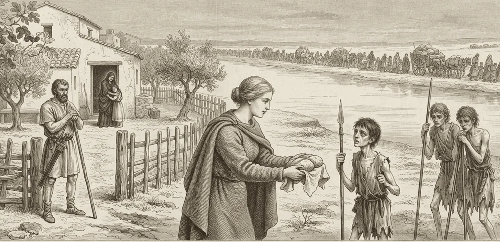
Los suevos
Brunhild tuvo un niño en la primavera, y Odo bajó de la Peña corriendo con la noticia como si se le hubiera ocurrido a él.
Le llamaron Wilja, como el abuelo, que se pasó una semana entera sin poder hablar de la emoción y regalando cosas a todo el mundo: un queso al molinero, un cuchillo a Teudo, una gallina a la viuda que vivía con ellos. Siete hijas, y el primer nieto era un niño. Wilja lo cogía en brazos con aquellas manos suyas, enormes, que tapaban al crío entero, y se quedaba mirándolo como se mira el fuego, sin decir nada, durante mucho rato.
Teudo tenía diecinueve años. Ya no subía a la Peña solo por las mañanas: ahora vivía allí la mitad de la semana, con los guerreros de Fravita, y bajaba a la casa de labor los otros días a echar una mano con el campo. Los bueyes se los había dejado a Ricila. Rojo y el Viejo eran ya viejos los dos, el Viejo sobre todo, que tenía el hocico blanco y andaba despacio, y el padre había comprado otra pareja más joven para el arado. Pero los viejos seguían allí, en el establo, comiendo heno y sin hacer nada. El padre decía que un buey que ha cruzado el Rin y los Pirineos tiene derecho a morirse en su cama.
En el verano, una tarde de mucho calor, llegó a la Peña un jinete con un mensaje para Fravita.
Teudo estaba de guardia en la torre. Vio al jinete subir la cuesta a galope, reventando el caballo, y bajó a abrirle. Era un suevo de la guardia de Hermerico, cubierto de polvo, y traía un rollo de cuero que Fravita leyó, o se hizo leer, en su casa, con la puerta cerrada. Luego mandó llamar a todos los guerreros al patio.
Fravita no hablaba nunca mucho. Aquel día habló menos.
—Han matado al rey de los godos —dijo—. En Barcino. Un criado suyo, en las cuadras. Por una venganza vieja.
Los hombres se miraron. Odo preguntó quién mandaba ahora.
—Uno que se llama Sigerico —dijo Fravita—. Ha matado a los seis hijos que el muerto tenía de otra mujer, de antes. Uno detrás de otro. A los niños. Y a la princesa romana, a la viuda, la ha hecho andar descalza delante de su caballo, doce millas, entre los cautivos, para que todos la vieran.
Nadie dijo nada. En el patio solo se oía el viento.
—Eso fue hace dos semanas —siguió Fravita—. A Sigerico lo mataron los suyos a los siete días. Ahora tienen otro rey. Valia.
—¿Y qué quiere Valia? —preguntó Odo.
Fravita lo miró.
—Lo mismo que todos los godos —dijo—. Tierra. Y trigo. Y no le quedan más que dos maneras de conseguirlos: quitárselos a Roma o ganárselos para Roma.
Esa noche Fravita doblaba las guardias. Dos hombres en la torre, en vez de uno. Uno más en cada vado. Mandó arreglar el tramo de la muralla de dentro que todavía estaba caído y cortar los árboles que habían crecido en el foso. Nadie le preguntó por qué. No hacía falta.
Teudo bajó a la casa de labor dos días después, y se lo contó al padre en el establo, mientras daban de comer a los bueyes viejos.
El padre se quedó un rato callado, con la horca de heno en la mano.
—Materno lo dijo —dijo al fin—. Que si los godos se hacían romanos, Roma volvía a tener soldados.
—Pero lo han matado. Al que se hizo romano.
—A él. —El padre echó el heno en el pesebre—. Los godos siguen ahí.
Ricila estaba en la puerta del establo, escuchando. Tenía catorce años, era más alto que la madre y casi tan alto como el padre, y se había dejado el pelo largo y lo llevaba suelto, sin el nudo, como no lo llevaba ningún suevo. Decía que el nudo era para los guerreros y que él no iba a ser guerrero. El padre no le decía nada.
—Placidia —dijo Ricila.
Teudo y el padre lo miraron.
—La princesa. La de la carta de la boda. —Ricila tenía la cara seria—. La que lloró. La han hecho andar descalza doce millas.
—¿Y qué?
—Nada. —Ricila se encogió de hombros—. Que en la carta ponía que llevaba seda de Oriente.
Se fue. Teudo se quedó mirando la puerta vacía. El padre siguió con el heno. Al cabo de un rato, sin mirarle, dijo:
—Tu hermano lee demasiado.
—Ya.
—Pero tiene razón —dijo el padre.
Aquella noche, en la casa de labor, Ricila y Teudo discutieron por primera vez en serio.
Empezó por una tontería. Teudo había bajado de la Peña con la espada al cinto, una espada de verdad que le había dado Fravita al cumplir los diecinueve, y la dejó apoyada en el banco de piedra de la cocina. Ricila la apartó para sentarse. Teudo le dijo que no la tocara. Ricila le dijo que no pensaba tocarla, que le daba igual, que era un trozo de hierro.
—Es mi espada.
—Ya lo sé que es tu espada. Llevas toda la noche enseñándola.
La madre, junto al fuego, levantó la cabeza.
—No la enseño —dijo Teudo.
—Sí la enseñas. Como Odo. Como todos los de la Peña. —Ricila se sentó—. Os paseáis con la espada como si fuera un brazo nuevo. Como si antes os faltara algo.
—Y tú te paseas con tus libros de romanos.
—Mis libros no matan a nadie.
—Mi espada tampoco ha matado a nadie.
—Todavía.
Se hizo un silencio en la cocina. El padre, que estaba en el otro extremo del banco arreglando una correa, dejó de coser. Wilja, que estaba con su nieto en brazos junto a la puerta, se fue al patio sin decir nada.
Teudo miró a su hermano. Ricila le sostuvo la mirada. Tenía catorce años y los ojos de la madre, grises, muy quietos.
—¿Y qué quieres? —le dijo Teudo, bajando la voz—. ¿Que cuando vengan los godos les leas un libro?
Ricila no contestó enseguida.
—Quiero que no vengan —dijo al fin.
—Eso no depende de nosotros.
—Ya lo sé. —Ricila bajó los ojos—. Por eso leo. Para entender de qué depende.
La madre se levantó, cogió la espada de Teudo del banco, la llevó al rincón de las herramientas y la dejó allí, de pie, junto al arado viejo y las hoces. Luego volvió al fuego.
—En esta casa —dijo, sin mirar a ninguno de los dos— las espadas están con las herramientas. Y se discute fuera.
Ni Teudo ni Ricila dijeron nada más. Pero esa noche, cuando ya estaban todos acostados, Teudo oyó a Ricila moverse en la oscuridad, levantarse, ir hasta el rincón de las herramientas. Oyó el roce del hierro. Pensó que se la iba a llevar, a esconder, a tirar al río. No hizo nada. Se quedó quieto, escuchando.
Ricila estuvo allí un rato. Luego volvió a su sitio y se acostó.
Por la mañana, la espada seguía en su sitio. Pero alguien le había limpiado la hoja con un trapo y aceite, como hay que hacerlo, y la había dejado envainada.
En el otoño murió el Viejo.
Se murió de viejo, como había dicho el padre, en su cama de paja, una noche de lluvia, sin hacer ruido. Teudo no estaba; estaba de guardia en la Peña. Fue Ricila el que lo encontró por la mañana, echado de costado, con los ojos cerrados y el hocico blanco apoyado en el lomo de Rojo, que estaba a su lado de pie, sin moverse, y no se había movido en toda la noche.
Ricila subió a la Peña a decírselo a Teudo. Subió corriendo, bajo la lluvia, y entró en el patio empapado, con el pelo pegado a la cara, y Teudo le vio la cara desde la torre y supo lo que era antes de que hablara.
Lo enterraron entre los dos, en el prado del otro lado del arroyo, donde el Viejo había arado el primer surco el primer invierno. No era costumbre enterrar a los bueyes. A los bueyes se los aprovecha, la carne, la piel, los cuernos. El padre no dijo nada cuando los vio cavar. Bajó con una pala y cavó con ellos.
Los vándalos
Los godos llegaron a la Bética en el invierno, y no venían a quedarse. Venían a irse.
Gisa los vio pasar. Eran muchos, muchísimos, una columna que tardó tres días en pasar por el camino de la otra orilla del río, de este a oeste, hacia el mar: hombres, mujeres, niños, carros, ganado flaco, caballos más flacos todavía. Iban hacia el sur, hacia el Estrecho, donde Hispania se acaba y empieza África. Decían que su rey, el nuevo, Valia, quería cruzar el mar. Que en África había trigo, el trigo que alimentaba a Roma, y que allí nadie les estaba esperando.
Venían con hambre. Eso se veía de lejos. Se veía en cómo andaban, en cómo se paraban junto a las acequias a beber, en cómo los niños se metían en los campos a arrancar cualquier cosa verde. Los silingos de la orilla de este lado se pusieron en las lindes con las lanzas y los miraron pasar sin quitarles los ojos de encima. Nadie cruzó el río. Ni ellos ni los otros.
Asta, que tenía once años, se pasó los tres días en lo alto de un olivo mirándolos.
—Son como nosotros —le dijo a Prisca la segunda tarde.
Prisca estaba abajo, recogiendo aceitunas del suelo. Se enderezó y miró hacia el otro lado del río.
—¿Por qué dices eso?
—Porque van con carros. Y con niños. Y con perros. —Asta se quedó mirando—. Como íbamos nosotros. Mi madre dice que en la Galia íbamos así.
Prisca no contestó. Siguió cogiendo aceitunas.
El tercer día, al atardecer, cuando la cola de la columna estaba pasando, tres godos cruzaron el río por el vado de abajo. Eran jóvenes, con lanzas, y venían derechos hacia la granja. Asta los vio desde el olivo y bajó corriendo a avisar.
Guntario salió al patio con la espada. Gisa se puso a su lado con el cuchillo de la carne. Prisca metió a Asta en la casa y se quedó en la puerta. Silvano, que estaba podando, se subió más alto en su olivo y desapareció entre las ramas.
Los godos llegaron hasta la cerca del huerto y se pararon. Miraron a Guntario, cojo, con su espada. Miraron a Gisa. Uno de ellos, el que iba delante, dijo algo. Lo dijo en godo, y el godo y el vándalo se parecen como se parecen dos primos, y Guntario lo entendió.
—Pan —tradujo—. Pide pan.
Gisa los miró. Eran muy jóvenes. El que hablaba tendría la edad de Fridila cuando murió. Tenía los ojos hundidos y los labios agrietados, y le temblaba la lanza en la mano, no de miedo, sino de debilidad.
Entró en la casa. Prisca la miró pasar sin decir nada. Gisa cogió los dos panes que había hecho por la mañana, los envolvió en un trapo, salió, cruzó el huerto hasta la cerca y se los dio al godo.
El godo los cogió. Los miró. Luego miró a Gisa y le dijo algo, muy bajo, y se dio la vuelta y se fue con los otros dos hacia el río, sin correr, apretando el pan contra el pecho.
—¿Qué te ha dicho? —le preguntó Guntario esa noche.
Gisa estaba sentada junto al fuego, sin hacer nada, mirando las brasas.
—Me ha dicho que su madre hacía el pan igual.
Una semana después llegaron noticias del sur. Los godos habían llegado al Estrecho. Habían reunido barcas, todas las que encontraron, de pescadores, de mercaderes, y habían empezado a cruzar. Y había venido una tormenta.
Nadie sabía cuántos se habían ahogado. Unos decían cientos. Otros, miles. Decían que el mar devolvió cuerpos a las playas durante días. Que los que se habían quedado en la orilla esperando su turno habían visto hundirse las barcas una detrás de otra, con sus familias dentro, y no habían podido hacer nada.
Los godos se volvieron. Pasaron otra vez por la otra orilla del río, de oeste a este, más despacio, menos, más callados, hacia el norte, hacia donde habían venido.
Silvano bajó de la aldea aquel día con la noticia y se quedó a cenar. No dijo casi nada durante la cena. Al terminar, se limpió la boca con la manga, miró a Guntario y le habló despacio, para que Prisca pudiera traducir cada palabra.
—Esos godos han visto la Bética —dijo—. Han visto los olivos y el trigo y el río. Han visto que aquí se come. —Se quedó callado un momento—. Y van a volver. No a pasar. A quedarse.
Guntario no contestó. Pero al día siguiente, de madrugada, se puso a cavar.
Cavó en el suelo del establo, debajo de la paja, donde nadie miraría. Un hoyo hondo, del tamaño de un hombre, con las paredes forradas de piedras y de ramas, como le había enseñado Silvano que hacían los romanos del campo para esconder el grano de los recaudadores. Tardó una semana, porque la pierna no le dejaba cavar más de un rato seguido. Gisa le ayudó. Prisca también. Luego metieron dentro cuatro sacos de trigo, dos tinajas de aceite y la cadena de plata que les quedaba de la Galia, y lo taparon con tablas y con tierra y con la paja encima.
—¿Para qué? —preguntó Asta, que lo había visto todo.
—Por si acaso —dijo Guntario.
—¿Por si acaso qué?
Guntario no contestó. Fue Prisca la que, esa noche, al acostarla, le dijo una cosa que la niña no entendió: que los que han perdido una casa aprenden a esconder algo en la siguiente.
Asta no subió al olivo a verlos pasar esta vez. Se quedó en casa. Le preguntó a su madre si el godo del pan estaría vivo, y Gisa le dijo que no lo sabía.
—¿Y su madre?
—Tampoco.
Asta se quedó pensando un rato. Luego dijo algo que Gisa no olvidó nunca.
—Entonces ya no hay nadie que haga el pan igual.
Los alanos
Arsak se enteró de la muerte del rey godo en Emerita, en la plaza del mercado, de boca de un mercader de esclavos que lo contaba a gritos como si fuera una fiesta.
No le pareció una fiesta. Se quedó a escuchar con el caballo de la rienda, entre la gente, y luego se fue a buscar a Beorgor.
El viejo vivía ahora en Emerita. Ya no salía con las partidas; tenía las rodillas hinchadas y no podía montar más de una mañana seguida. Respendial le había dado una casa pequeña junto a la muralla, en una calle de herreros, y Beorgor pasaba los días sentado en el umbral, al sol, mirando pasar a la gente y escupiendo. Tenía setenta años o más. Nadie lo sabía, ni él.
—Ya lo sé —dijo cuando vio llegar a Arsak—. Lo sabe toda la ciudad.
—¿Y?
—Y nada. —Beorgor escupió—. Los godos tienen un rey nuevo. Los godos siempre tienen un rey nuevo.
Arsak se sentó en el umbral a su lado.
—Dicen que el nuevo quiere pasar a África.
—Que pase.
—¿Y si no puede?
Beorgor no contestó. Se quedó mirando la calle, a un herrero que golpeaba una reja al rojo en un yunque, con el martillo, una vez, otra, otra.
—¿Sabes qué es lo peor de los godos? —dijo al fin—. Que son como nosotros. Vinieron huyendo de los hunos, como nosotros. No tienen tierra, como no la teníamos nosotros. Tienen hambre, como la hemos tenido. —Se rascó la rodilla—. Y por eso harán lo mismo que haríamos nosotros. Lo que haga falta.
—¿Contra nosotros?
—Contra quien Roma les diga. —El viejo se volvió y le miró—. Roma no tiene soldados. Tiene trigo. Y los godos no tienen trigo. Tienen soldados. ¿Tú qué harías si fueras Roma?
Arsak no contestó. No hacía falta.
Al salir de la calle de los herreros se cruzó con Addax.
Venía por la calle principal, a caballo, con veinte jinetes detrás, y la gente se apartaba a su paso. Llevaba un manto rojo y el caballo blanco de siempre, y la cicatriz de la ceja se le veía desde lejos. Había cambiado en aquellos cuatro años: estaba más ancho, más duro, y ya no miraba a los suyos como se mira un rebaño, sino como se mira un ejército. Respendial estaba enfermo; lo sabía toda la ciudad. Desde el invierno no salía de su casa. Y era Addax el que recorría las villas de los alanos, una por una, hablando con los hombres, mirando sus caballos, contando sus lanzas.
Se paró delante de Arsak. Lo miró de arriba abajo.
—Tú eres el hijo de Saurmag —dijo.
Era la segunda vez que alguien se lo decía en Hispania. Arsak asintió.
—Tu padre cargaba en la primera fila. —Addax se inclinó un poco en la silla—. ¿Y tú?
—En la tercera. En el Rin.
—¿Y ahora?
Arsak no supo qué contestar. Ahora tenía una villa, unos caballos, un viejo y una vieja y un niño que tiraba con arco al trote. Ahora cerraba una puerta por las noches.
—Ahora crío caballos —dijo.
Addax sonrió. No era una sonrisa mala. Era la sonrisa de alguien que ya ha oído esa respuesta muchas veces aquel invierno.
—Críalos bien —dijo—. Los vamos a necesitar.
Y siguió calle abajo, con sus veinte jinetes, hacia la puerta del puente.
Volvió a la villa al atardecer. Félix estaba en el prado con el arco, tirando al saco desde la yegua, al trote ya. Acertaba casi siempre. Tenía catorce años y había crecido tanto aquel año que los pantalones le llegaban por las espinillas, y Tecla se pasaba las noches alargándoselos con tiras de tela de otro color.
Arsak se quedó un rato mirándolo desde el caballo. Luego desmontó, entró en la casa y fue a la habitación donde dormía. Debajo del camastro tenía un arcón. Lo abrió.
Dentro estaba lo que tenía de su padre: el casco, la cota de escamas de hierro, el kontos con la punta envuelta en un trapo engrasado. Llevaba allí desde que llegaron. No lo había sacado ni una vez. Se había dicho que no hacía falta, que ahora era labrador, criador de caballos, que tenía una puerta.
Sacó la cota. Le quitó el polvo con la mano. Las escamas estaban un poco oxidadas por los bordes. Se sentó en el suelo, con la cota sobre las rodillas, y empezó a frotarlas una por una con arena y con aceite, como le había enseñado su padre.
Tardó toda la noche.
Por la mañana, cuando salió al patio, Marcelo estaba allí, sentado en la base de la columna caída. Vio la cota colgada en la puerta, brillando al sol. No dijo nada. Pero se levantó despacio, se acercó y tocó las escamas con el dedo, una, dos, como se toca algo que da miedo.
—¿Va a haber guerra? —preguntó.
Arsak no le mintió.
—No lo sé —dijo—. Pero si la hay, que no me pille con el hierro oxidado.
Marcelo asintió. Volvió a sentarse en la columna. Y Arsak vio que el viejo se quedaba mirando hacia el prado, donde Félix ya estaba otra vez con la yegua y el arco, y que tenía en la cara la misma expresión que había visto en Tecla tantas veces, la expresión del miedo a que alguien se vaya.
El tratado
Gallaecia, la Bética y Lusitania – 416
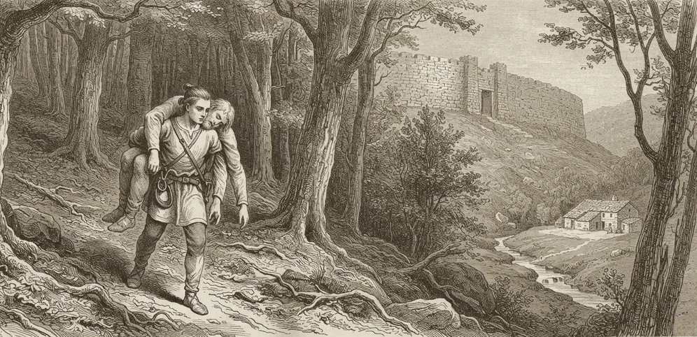
Los suevos
La guerra de Teudo no fue contra los godos. Fue por unas vacas.
Empezó en la primavera, con el deshielo. Los galaicos del castro de enfrente, los de las casas redondas y las dos murallas, bajaron una noche al valle y se llevaron doce vacas de los suevos. No era la primera vez. Llevaban cinco años así, unos y otros: los galaicos se llevaban vacas, los suevos se llevaban ovejas, alguien quemaba un pajar, alguien aparecía con una cabeza rota en un camino. Era lo normal entre vecinos que no se querían. Pero aquella vez las vacas eran de Wilja, y entre ellas iba la vaca pinta que le había regalado a Odo en la boda, y Odo subió a la Peña echando fuego por la boca y le dijo a Fravita que iba a ir a buscarlas, con él o sin él.
Fravita lo dejó ir. Con él. Y con quince hombres más.
Teudo era uno de ellos.
Tenía veinte años. Llevaba cuatro entrenando en la Peña, con la espada de madera primero y luego con la de verdad, y nunca había luchado. Había hecho guardias, había perseguido a ladrones de gallinas, había ayudado a sacar a un borracho del río. Pero no había luchado. La noche antes de salir no pudo dormir. Se quedó en la torre aunque no le tocaba guardia, mirando hacia el castro, que era una sombra negra en lo alto del monte con dos o tres fuegos encendidos, y pensó en lo que le había dicho Ricila: que su espada no había matado a nadie todavía.
Odo subió a la torre con él a medianoche. Traía una bota de vino. Se sentó a su lado sin decir nada y le pasó la bota.
—No es para tanto —dijo al cabo—. Son pastores. Tienen hondas y lanzas de madera. Subimos, cogemos las vacas, quemamos un pajar para que se acuerden y bajamos.
—Ya.
—Tú tira con la honda. Como el día del cuerno. —Odo se rio—. Si les das a todos en la cabeza, no hará falta la espada.
Teudo no se rio. Odo le miró.
—¿Tienes miedo?
—Sí.
Odo se quedó callado un rato. Luego bebió de la bota.
—Yo también —dijo—. La primera vez. Y la segunda. —Se encogió de hombros—. Ahora tengo un hijo. Ahora tengo más miedo que nunca.
Salieron al amanecer. Cruzaron el arroyo, subieron por el bosque de castaños, en silencio, en fila, y llegaron a la muralla de fuera del castro cuando el sol empezaba a calentar. La puerta estaba abierta. No había nadie. Las vacas de Wilja estaban en un cercado, entre la primera muralla y la segunda, mugiendo.
Era una trampa. Teudo lo supo un momento antes que los demás, porque lo había visto en la loma de la Galia, cuando los lobos salieron del encinar abriéndose en abanico: había visto el mismo silencio. Gritó. Demasiado tarde.
Los galaicos salieron de detrás de la segunda muralla, de dentro de las casas, de lo alto de las rocas. Muchos más de los que pensaban. Tiraban piedras con honda, como él, y las piedras zumbaban como avispas, y una le dio en el escudo con un golpe que le dejó el brazo dormido. Los suevos se juntaron, hombro con hombro, escudo con escudo, como les había enseñado Fravita, y empezaron a retroceder hacia la puerta.
Teudo tiró. Una, dos, tres piedras, con la honda, desde detrás de los escudos. Vio caer a un hombre. Vio caer a otro. No sintió nada. Pensó que luego sentiría algo, pero en ese momento no sintió nada, solo el peso de la piedra en la mano y el giro de la honda y el chasquido.
Llegaron a la puerta. Salieron. Bajaron por el bosque corriendo, con los galaicos detrás tirando piedras, y no se pararon hasta el arroyo.
Ahí se contaron. Faltaba uno.
Odo.
Teudo volvió a subir. Nadie se lo mandó, nadie se lo impidió; volvió a subir, solo, con la espada en la mano, por el mismo bosque, como había vuelto a correr por el hielo del Rin a buscar un caballito de madera. Los galaicos se habían metido otra vez en el castro. No le vieron, o no quisieron verle. Encontró a Odo junto a la puerta de fuera, sentado contra la muralla, con las piernas estiradas.
Tenía una piedra clavada en la sien. No una piedra: un trozo de piedra, afilado, del tamaño de un huevo, que le había entrado por encima de la oreja, por debajo del borde del casco. Había muy poca sangre. Tenía los ojos abiertos y la cara tranquila, sorprendida, como de alguien al que le acaban de contar algo que no se esperaba.
Teudo se lo cargó a la espalda y lo bajó.
Pesaba mucho más de lo que había pesado nunca nada. Más que los sacos de trigo, más que el arado, más que todo. Lo bajó por el bosque de castaños, paso a paso, resbalando, con los brazos de Odo colgando delante de su pecho, y por el camino se le ocurrió que el escudo azul se había quedado arriba, en el castro, y que Odo iba a querer que se lo bajara, y estuvo a punto de volverse a por él. Luego se dio cuenta de que no.
Lo enterraron en el prado, junto al Viejo. Fue el padre el que lo dijo: que allí había sitio, que era tierra buena, que daba al río. Brunhild estuvo en el entierro con el niño en brazos, sin llorar, con la cara blanca, y cuando bajaron a Odo a la tierra, se acercó al borde de la fosa y le puso al niño delante, levantándolo un poco, para que lo viera.
Después, cuando ya todos se iban, Brunhild se acercó a Teudo. Llevaba al niño dormido contra el hombro. Le miró a la cara, de cerca, como se mira a alguien para acordarse de él.
—Lo bajaste tú —dijo.
—Sí.
—Solo.
Teudo no contestó.
—El escudo se quedó arriba —dijo Brunhild—. El azul. El de la boda.
—Lo sé.
—Wilja lo tiene que tener. —Le acarició la cabeza al niño—. Cuando sea mayor. Tiene que tener algo de su padre que no sea una tumba.
Teudo se quedó mirándola. Brunhild no lloraba. Tenía los ojos secos y la boca apretada, y en aquel momento se pareció mucho a la madre de Teudo, a la madre en el Rin, la noche que no quiso tocar la copa de plata.
—Te lo bajaré —dijo Teudo.
Brunhild asintió una vez y se fue.
Esa noche, en la casa de labor, Teudo se sentó junto al fuego y por fin sintió algo. Lo sintió todo de golpe. Ricila se sentó a su lado.
No dijo nada. Ni una palabra sobre la espada, ni sobre lo que había dicho aquella noche. Se quedó sentado a su lado, hombro con hombro, hasta que Teudo se durmió.
Los vándalos
Al rey Fredbal lo cogieron sin una batalla, por engaño, y la noticia llegó a la granja con Rotrud, que subió por el camino de los olivos apoyándose en el palo, tan deprisa como le dejaban las piernas.
Gisa la vio llegar desde el patio y supo que pasaba algo, porque Rotrud no subía nunca a la granja; era la granja la que bajaba a ver a Rotrud. Le dio agua y la sentó en el poyo de la puerta. La vieja tardó en recuperar el aliento.
—Se lo han llevado —dijo al fin—. Al rey.
Contó lo que sabía, que era poco y venía de muchas bocas. Que el rey de los godos, Valia, el de las barcas hundidas en el Estrecho, había hecho un trato con Roma. Que Roma les daba trigo, mucho trigo, seiscientos mil sacos, y les devolvía a los godos la tierra que quisieran en la Galia, y a cambio los godos tenían que limpiar Hispania de bárbaros. Que Valia había mandado mensajeros a Fredbal, al rey de los silingos, a decirle que quería hablar con él. Que quería paz entre los dos pueblos, que eran primos, que hablaban casi la misma lengua. Y que Fredbal había ido. Con poca escolta, como se va a hablar de paz.
—Y lo cogieron.
—Lo cogieron. —Rotrud se quedó mirando el suelo—. Dicen que lo han mandado a Roma, al emperador, encadenado. Como un regalo.
Guntario, que estaba sentado en el banco de piedra del patio, se levantó apoyándose en el bastón. Gisa le vio la cara y tuvo miedo, porque había visto esa cara una vez, en la orilla del Rin, la mañana de los francos.
—¿Y ahora? —preguntó Guntario—. ¿Quién manda?
Rotrud negó con la cabeza.
—Nadie. Los jefes discuten. Unos dicen que hay que pedir ayuda a los alanos. Otros, que hay que mandar mensajeros a Valia. Otros, que hay que irse. —Escupió—. Discuten como gallinas mientras el zorro está en la puerta.
Aquella noche Guntario no durmió. Gisa tampoco. Se quedaron los dos en el patio, junto al pozo, hablando en voz baja para que no les oyeran Asta ni Prisca.
—Podemos irnos —dijo Gisa—. Al norte. Con los asdingos.
—¿Con qué? ¿Con una yegua vieja y un carro? —Guntario se frotó la pierna—. Gallaecia está a un mes de camino. Por tierra de alanos y luego de nadie. Con una niña. Con un cojo.
—No digas eso.
—Es lo que soy.
Gisa no contestó. Miró la casa: el patio encalado, el pozo, la higuera, la maceta de las flores rojas, que seguía allí, en su rincón, y que ella regaba cada mañana sin saber por qué. Cinco años. Cinco años en aquella casa. Era el sitio donde más tiempo había vivido desde que se casó.
—No quiero irme —dijo.
—Ya lo sé.
—No quiero irme otra vez. —Le tembló la voz—. Estoy cansada, Guntario. Estoy cansada de andar.
Guntario le cogió la mano. No le dijo que no se irían. No le dijo que sí. Se quedaron así, con las manos cogidas, hasta que empezó a clarear.
Por la mañana, Asta les preguntó por qué tenían esas caras. Gisa le dijo que no habían dormido bien por el calor. Asta tenía doce años. No se lo creyó. Pero no preguntó más. Cogió el cubo, fue al pozo, sacó agua, regó la maceta de las flores rojas, que era cosa de su madre, y se fue a los olivos a buscar a Silvano.
Prisca la miró irse desde la puerta.
—Lo sabe —le dijo a Gisa—. No sabe qué, pero lo sabe.
—Tiene doce años.
—Yo tenía doce años cuando los francos quemaron la villa de mi padre la primera vez. —Prisca se secó las manos en el delantal—. A los doce años se sabe todo. Lo que no se sabe es qué hacer.
Los alanos
Addax mandó a Arsak a la Bética a principios del verano, con cinco jinetes, a llevar un mensaje a los jefes de los silingos.
El mensaje era corto: que los alanos sabían lo de Fredbal. Que los godos venían. Que si los silingos querían luchar, los alanos lucharían con ellos. Que si no querían, que no esperaran a que los godos les preguntaran.
Respendial había muerto en la primavera. Lo enterraron con su caballo junto a Emerita, en un túmulo, y los alanos eligieron rey a Addax, que ya mandaba desde hacía un año. Fue rápido, sin discusión. Lo subieron en un escudo, como hacían los germanos, aunque los alanos no lo habían hecho nunca; Addax dijo que ahora vivían entre germanos y que había que hacer las cosas que los germanos entendían.
La mañana que salió de la villa, Félix lo esperaba en la puerta del establo con la yegua ensillada y el arco pequeño al hombro.
Tenía quince años. Era ya casi tan alto como Arsak, flaco y largo, con las muñecas saliéndole de las mangas, y tiraba al galope mejor que muchos alanos de la edad de Arsak. Lo sabía. Lo sabía toda la comarca. Y llevaba semanas oyendo hablar de los godos en la cocina, a media voz, entre Marcelo y Tecla, y había decidido por su cuenta que, si había guerra, él iba a estar en ella.
—Voy contigo —dijo.
—No.
—Sé tirar. Mejor que tus jinetes. Tú lo has dicho.
—Lo he dicho. —Arsak terminó de apretar la cincha de su caballo—. Y no vienes.
—¿Por qué?
Arsak se volvió. Detrás del chico, en la puerta de la cocina, estaba Tecla, con los brazos cruzados, mirándolos. No decía nada. No hacía falta.
—Porque alguien tiene que guardar esta casa —dijo Arsak—. Marcelo es viejo. Si vienen los de la villa de arriba otra vez a por los cerdos, ¿quién los para?
Félix abrió la boca para contestar y la cerró. Sabía que era una excusa. Arsak sabía que él lo sabía. Pero era una excusa que se podía aceptar sin vergüenza, y eso, a los quince años, vale mucho.
—Volveré en otoño —dijo Arsak—. Para la doma de los potros. Si para entonces no has roto el arco, te dejo el mío.
Félix se quedó quieto. Luego asintió, se dio la vuelta y se fue hacia el prado con la yegua, sin despedirse, muy derecho, como se van los que se están aguantando algo.
Tecla le dio a Arsak un pan envuelto en un paño y un trozo de queso. No dijo nada tampoco. Pero cuando él ya estaba montado, le cogió la bota con una mano, un momento, fuerte, y luego la soltó.
Arsak cruzó la sierra por un puerto de jaras y bajó a la Bética en cinco días. Los jefes de los silingos le recibieron en una villa grande junto al río, cerca de Hispalis, y le escucharon sin decir nada, y luego discutieron entre ellos en su lengua, a gritos, toda la tarde, mientras Arsak esperaba fuera, sentado en un banco, con el perro sin nombre a los pies.
Fue allí donde preguntó.
No pensaba hacerlo. Pero había una vieja sentada en el banco de al lado, muy vieja, apoyada en un palo, que miraba al perro con curiosidad, y Arsak, sin saber por qué, le habló. Le preguntó, en el poco vándalo que sabía, si conocía a un vándalo cojo. Un asdingo, no un silingo, casado con una silinga. Con una hija de unos doce años, de pelo claro.
La vieja le miró. Le miró mucho rato, de arriba abajo, el pelo blanco, la cara curtida, el perro con la cicatriz en el cuello.
—¿Para qué lo quieres?
—Le debo algo.
—¿Qué le debes?
Arsak se metió la mano en el manto y sacó la fíbula. El pájaro de bronce con los ojos rojos.
La vieja se quedó mirándola. Luego se rio, una risa rara, sin dientes, que le movía todo el cuerpo.
—Guntario —dijo—. Se llama Guntario. Y ella, Gisa. Y la niña, Asta. —Le señaló con el palo, hacia el oeste, río abajo—. Medio día de camino. Una granja con cuarenta olivos y una higuera en una loma. Pregunta por el cojo del aceite. Todo el mundo lo conoce.
Asta.
Arsak se quedó con la palabra en la boca. Asta. Llevaba cinco años pidiéndosela a la espada.
No fue. Al día siguiente los silingos le dieron su respuesta, que era que no había respuesta todavía, y Arsak montó con sus cinco jinetes y se puso en camino hacia Lusitania. Se dijo que ya iría. Que primero tenía que llevar el mensaje. Que tenía que ver a Addax. Que volvería en otoño.
En la sierra, el tercer día, se encontraron con los godos.
Eran treinta jinetes, una avanzadilla, exploradores como ellos. Se toparon de frente en un collado, entre jaras, a la vuelta de una roca, tan de golpe que los dos grupos se quedaron parados un momento mirándose, como dos perros que doblan la misma esquina. Luego los godos cargaron.
Arsak tiró dos flechas antes de que llegaran. Luego sacó la espada. Lo que pasó después no lo recordó bien nunca: un caballo que se le echaba encima, una lanza, un golpe en el costado que no le dolió, que solo le empujó, como si alguien le hubiera dado un empujón fuerte. Su caballo dio la vuelta solo. Arsak se agarró a las crines. Bajaron por la ladera a galope, entre las jaras, con los godos detrás, y luego ya no había godos detrás, y Arsak no sabía cuánto tiempo había pasado.
Se paró en un barranco, junto a un arroyo seco. Se miró el costado. La cota de escamas de su padre estaba rota por debajo del brazo, y por el agujero salía sangre, mucha, que le empapaba la túnica y los pantalones y goteaba en la silla.
Estaba solo. De los cinco jinetes no había ni rastro. El perro sin nombre estaba a su lado, jadeando, mirándole.
Arsak se ató el costado con el manto, apretando con los dientes. Luego miró alrededor. Hacia el norte, por donde había venido, estaban los godos. Hacia el norte estaba Emerita, y su villa, y Marcelo y Tecla y Félix, a cuatro días de camino por una sierra llena de godos.
Hacia el sur, por donde había venido, a tres días de camino si el caballo aguantaba, había una granja con cuarenta olivos y una higuera en una loma.
Se llevó la mano a la fíbula.
«Mi casa es tu casa.»
Arsak hizo girar el caballo hacia el sur.
El camino
Gallaecia y la Bética – verano de 416
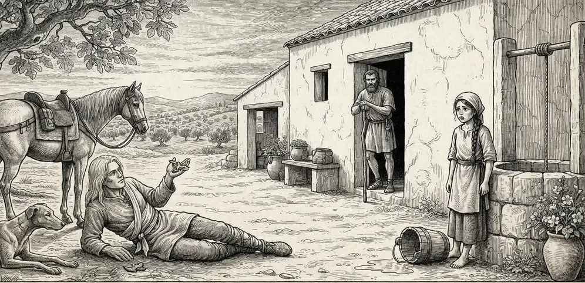
Los suevos
Ricila subió al castro de los galaicos un domingo por la mañana, sin espada, con el cura Paulo, y bajó por la tarde con el escudo azul de Odo a la espalda.
Teudo no lo supo hasta que lo vio entrar por el patio de la casa de labor. Llevaba tres semanas planeando cómo subir a buscarlo. Lo había hablado con Fravita, que le había dicho que no, que un escudo no valía la vida de un hombre, y luego con los guerreros más jóvenes de la Peña, que le habían dicho que sí, que irían con él, una noche sin luna, por el barranco de atrás. Lo tenía todo pensado. Y su hermano pequeño, el que leía libros de romanos y llevaba el pelo suelto como una mujer, entró en el patio a media tarde con el escudo a la espalda y la cara tan tranquila como si volviera de la fuente.
Brunhild estaba en el patio tendiendo ropa. Lo vio. Se le cayó la sábana al suelo.
Ricila se quitó el escudo, se acercó a ella y se lo dio. Brunhild lo cogió con las dos manos. Lo miró. Tenía una abolladura nueva en el borde y una mancha oscura que nadie quiso nombrar. Lo apretó contra el pecho y no dijo nada, y luego se fue dentro, a donde dormía el niño.
Teudo agarró a Ricila del brazo y se lo llevó detrás del hórreo.
—¿Estás loco?
—No.
—¿Has subido al castro? ¿Solo?
—Con Paulo.
—¡Con un cura viejo! —Teudo no sabía si gritarle o pegarle—. ¡Te podían haber matado! ¡Mataron a Odo!
—Odo subió con una espada. —Ricila se soltó el brazo, sin violencia—. Yo subí con un cura.
Teudo se quedó callado. Ricila se sentó en una de las piedras del hórreo y se lo contó, despacio, como contaba Gaiso las historias, empezando por el final.
Los galaicos eran cristianos. No todos, ni del todo; seguían teniendo sus piedras sagradas y sus fuentes y sus dioses de los montes. Pero tenían un cura, uno de ellos, que bajaba a veces a la villa de Materno a hablar con Paulo de cosas de su dios. Ricila lo había visto. Había hablado con él en latín, que el cura galaico hablaba mejor que nadie en el valle. Y tres semanas antes, al día siguiente del entierro de Odo, le había pedido a Paulo que le llevara al castro.
—¿Y qué les dijiste?
—Que el escudo era de un muerto. Que el muerto tenía un hijo. —Ricila se encogió de hombros—. Que su hijo no iba a conocer a su padre y que lo único que podía tener de él era eso.
—¿Y te lo dieron?
—No. —Ricila sonrió un poco—. Me dijeron que ellos también tenían muertos. Dos. Dos hombres a los que una honda les había roto la cabeza aquel día. Y que esos hombres también tenían hijos.
Teudo se quedó quieto.
Dos. Había visto caer a dos. No había sentido nada. Lo había pensado muchas noches desde entonces, tumbado en la torre, mirando el castro: que no había sentido nada.
—¿Y qué hiciste?
—Les pregunté qué querían.
—¿Y?
—Querían las vacas. —Ricila se rio, bajito—. Las doce vacas de Wilja. Decían que eran suyas desde el principio. Que Wilja se las había quitado a ellos el otoño anterior, en el monte, y que ellos solo habían ido a recuperarlas.
—Eso es mentira.
—Le pregunté a Wilja. —Ricila le miró—. No es mentira.
Teudo no dijo nada durante mucho rato. Se sentó en la piedra al lado de su hermano. Desde allí se veía el prado de abajo, junto al arroyo, donde estaban enterrados el Viejo y Odo, uno al lado del otro, con dos piedras encima.
—¿Y entonces? —preguntó al fin.
—Entonces Wilja les devolvió una vaca —dijo Ricila—. La pinta. La de la boda. Y ellos nos devolvieron el escudo. Y el cura de ellos y Paulo dijeron unas oraciones por los muertos de los dos lados. Y ya está.
—¿Ya está?
—Por ahora.
Teudo miró a su hermano. Tenía quince años. Hacía cinco, en Hispania, había llorado contra su hombro la noche que enterraron a Lupo. Ahora tenía la cara seria, los ojos grises de la madre, y había subido a un castro enemigo sin armas y había bajado con un escudo.
—Fravita te va a matar —dijo Teudo.
—Fravita lo sabía. Le pedí permiso.
—¿Y te lo dio?
—Me dijo que si me mataban, era cosa mía. —Ricila se levantó—. Que es casi lo mismo.
Esa noche, en la cena, Wilja le sirvió a Ricila la mejor parte del cordero, la que se le daba siempre al cabeza de familia. No dijo por qué. No hacía falta.
Los vándalos
El hombre llegó al atardecer del tercer día del mes de las cosechas, cuando Asta estaba sola en el patio regando la maceta de las flores rojas.
Lo vio aparecer por el camino de los olivos, muy despacio, a caballo, y al principio pensó que era un borracho, porque iba doblado sobre la silla, con la cabeza casi apoyada en el cuello del caballo, balanceándose. Luego vio que el caballo iba manchado. Que la silla iba manchada. Que de la pierna del hombre colgaba un trapo oscuro, empapado, y que el trapo goteaba en el polvo del camino, y que detrás del caballo, pegado a sus patas, venía un perro.
Un perro marrón. Con una cicatriz calva en el cuello.
Asta dejó caer el cubo.
El caballo se paró en la puerta del patio, solo, como si supiera que había llegado. El hombre intentó bajarse y no pudo. Se quedó un momento quieto, agarrado a las crines, y luego se cayó de lado, despacio, como cae un árbol, y quedó tendido en el polvo, boca arriba, con los ojos abiertos mirando al cielo.
Tenía el pelo blanco. No blanco de viejo: blanco como el lino, como la espuma, casi plateado. Asta lo vio desde la puerta y supo quién era antes de saberlo, de la misma manera que había sabido, a los siete años, en el arroyo de la llanura grande, que aquel hombre la miraba como si la conociera.
Se acercó. Muy despacio. El perro le gruñó, sin fuerza, y luego se tumbó al lado del hombre con el hocico apoyado en su hombro.
El hombre movió la mano. La tenía cerrada, apretada contra el pecho. La abrió.
En la palma tenía la fíbula. El pájaro de bronce con dos piedras rojas por ojos, que Asta no había visto nunca y que reconoció como se reconoce una canción que te cantaban de pequeña.
—¡Padre! —gritó—. ¡Padre!
Guntario salió de la casa con el bastón, tan deprisa como podía, que no era mucho. Gisa salió detrás. Prisca detrás. Se pararon los tres en la puerta del patio. Guntario miró al hombre en el suelo, el pelo blanco, el perro, la sangre, la mano abierta con el pájaro de bronce. Se quedó quieto. Asta vio que le temblaba la barbilla.
Luego tiró el bastón y se arrodilló en el polvo, como no se arrodillaba desde el Rin, con la pierna mala doblada de una manera que tenía que dolerle mucho, y le cogió la cabeza al hombre entre las manos.
—Eres tú —le dijo en vándalo—. Eres tú.
El hombre le miró. No dijo nada. Cerró los ojos.
Lo metieron en casa entre los tres, Guntario, Gisa y Prisca, porque pesaba mucho, y lo tumbaron en la cama grande, la de Guntario y Gisa. Prisca le cortó el manto, la túnica, la ropa empapada, y le vio la herida, y Asta, que estaba en la puerta, vio cómo a Prisca se le ponía la cara blanca.
Era un corte en el costado, debajo del brazo. Largo como una mano. No muy hondo, pero abierto, con los bordes hinchados y rojos, y olía. Olía de una manera que Asta no había olido nunca y que no olvidó en toda su vida, un olor dulce y podrido a la vez, como fruta pasada.
—Tres días —dijo Prisca—. Por lo menos. Y sin lavar.
—¿Se va a morir? —preguntó Asta.
Nadie le contestó. Prisca mandó a Gisa a hervir agua. Mandó a Asta a buscar a Silvano, que sabía de hierbas. Mandó a Guntario a buscar vino, el más fuerte, y miel, y paños limpios. Y luego se quedó sola con el hombre, en la habitación, con la puerta abierta, y Asta, cuando volvió corriendo con Silvano, la vio sentada en el borde de la cama mirándole la cara, muy quieta, como miraba Prisca las cosas que le daban miedo.
Aquella noche nadie durmió en la granja.
Prisca le lavó la herida con vino hirviendo y el hombre gritó, una vez, un grito largo que hizo ladrar a todos los perros de la loma, y luego no volvió a gritar. Silvano le puso encima una pasta de hierbas machacadas con miel. Gisa le dio agua a cucharadas. Guntario se quedó sentado en una silla junto a la cama, toda la noche, con la espada de su padre sobre las rodillas, como se había sentado ocho años antes junto al carro donde Asta tenía la fiebre. Como si la muerte fuera algo que pudiera entrar por la puerta y él tuviera que impedírselo.
Asta se sentó en el suelo, en un rincón, con el perro marrón a su lado. El perro no quería separarse del hombre. Asta le acarició la cicatriz del cuello. El perro la dejó.
De madrugada, el hombre abrió los ojos. Miró a su alrededor sin entender. Vio a Guntario dormido en la silla, con la espada. Vio a Prisca dormida apoyada en la pared. Luego giró la cabeza y vio a Asta, en el rincón, despierta, mirándole.
Se miraron un rato largo, como en el arroyo.
—Asta —dijo él. Con la voz ronca, casi sin aliento. Como si probara la palabra.
Ella no le preguntó cómo sabía su nombre.
—¿Cómo te llamas tú? —le preguntó.
El hombre tardó en contestar. Asta pensó que no la había entendido, que no hablaba vándalo. Luego él movió los labios.
—Arsak.
Y se volvió a dormir.
Los alanos
El camino desde la sierra hasta la granja era de tres días. Arsak lo hizo en tres días y medio, y no se acordó luego más que de trozos.
Se acordaba del primer día. Del sol. Del sol de la Bética en pleno verano cayéndole encima como una losa, y de las jaras, que olían a resina y daban una sombra que no servía para nada. Se acordaba de que había bajado del caballo para beber en un arroyo y de que el arroyo estaba seco, y de que había tenido que volver a subir, y de que subir le había costado tanto que se quedó un rato con la frente apoyada en la silla, agarrado a la cincha, con los ojos cerrados, oyendo cómo le latía la sangre en la herida.
Se acordaba del perro. El perro sin nombre, que iba delante, siempre delante, unos pasos, y que se paraba cada poco a esperarle y le miraba con la cabeza ladeada, como preguntando por qué iban tan despacio.
Se acordaba de la primera noche. De que no se atrevió a bajar del caballo porque sabía que, si bajaba, no iba a poder subir. De que durmió en la silla, como le había enseñado Candac hacía mil años en la estepa que no había visto nunca, sentado, con las riendas atadas a la muñeca y la cabeza caída sobre el pecho. De que soñó con su padre. Su padre estaba en la loma de la Galia, junto a su tumba, con la yegua parda de la mancha blanca, y le decía algo que Arsak no oía. Arsak le preguntaba qué. Su padre le señalaba algo. Un sitio. Al sur.
Se acordaba del segundo día menos. De agua: un pozo, en una aldea vacía, con una cuerda podrida y un cubo de cuero que tuvo que bajar con una sola mano. Bebió hasta que vomitó. Volvió a beber. Le dio de beber al caballo y al perro en el cubo, primero al caballo, luego al perro, luego a él otra vez. Se acordaba de que en aquella aldea había una iglesia pequeña con una cruz en la puerta, y de que se sentó en el escalón de la iglesia un rato, a la sombra, y de que pensó en el muñeco de trapo que había encontrado en la cuna, en la primera aldea de Hispania, al bajar de los Pirineos. No sabía por qué se acordaba de eso. Lo había tapado con la manta. Había cerrado la puerta para que no entraran los perros.
La herida empezó a oler el segundo día por la tarde.
Arsak sabía lo que quería decir ese olor. Lo había olido en los caballos, en los hombres heridos en el camino, en su propio padre, aquel último día, en el trigo. Quería decir que lo que había dentro se estaba pudriendo, y que, si no se sacaba, la podredumbre subiría por la sangre hasta el corazón. Lo sabía. No podía hacer nada. Ni siquiera se atrevía a quitarse el manto para mirarse; tenía miedo de lo que iba a ver.
El tercer día ya no se acordaba de casi nada.
Del calor. De la sed. De que se cayó del caballo una vez y se quedó en el suelo no supo cuánto tiempo, y de que el perro le lamía la cara, y de que se levantó porque el perro no paraba de lamerle. De un río, a lo lejos, ancho, brillante. De barcas en el río. De olivos, muchos, en filas, como un ejército quieto. De que preguntó a alguien, a un hombre con un burro, en un camino, por el cojo del aceite. De que el hombre le miró con miedo y le señaló una loma. Una loma con olivos y una higuera.
Se acordaba de la higuera. Muy grande, muy verde, en mitad del sol.
Y se acordaba de una cosa más, la última, antes de caerse del caballo en la puerta de aquella casa encalada. Se acordaba de que había una niña en el patio. Una muchacha de doce o trece años, larguirucha, con el pelo claro recogido en una trenza y un cubo en la mano, regando una maceta de flores rojas. Y de que la muchacha levantó la cabeza y le miró. Y de que le miró igual que le había mirado desde los brazos de su madre, a los dos años, la tarde de los francos, en el Rin. Igual que desde el otro lado del arroyo, a los siete, en la llanura grande.
Como si le estuviera esperando.
Arsak abrió la mano. Le enseñó la fíbula. No sabía si ella sabía lo que era.
Luego se cayó, y el cielo se puso encima de todo, enorme, más grande que la tierra, como en la estepa. Y ya no se acordó de nada más hasta que oyó su nombre.
El año
Gallaecia y la Bética – del otoño de 416 al verano de 417
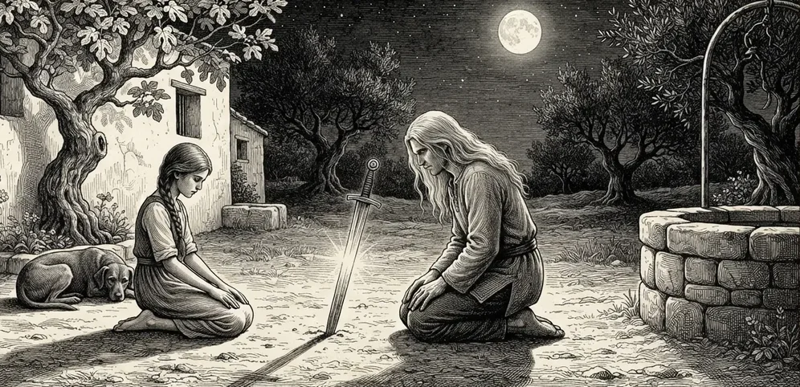
Los suevos
El hombre del rey llegó a la Peña con el otoño, con doce jinetes y un halcón en el puño, y en tres días se comió las provisiones de un mes.
Se llamaba Heremigario. Era pariente de Hermerico, sobrino o primo, nadie lo sabía bien, y el rey lo mandaba a recorrer las fortalezas de la frontera para ver cómo estaban. Eso dijo él. Lo que hizo fue otra cosa. Llegó al patio de la Peña a caballo, sin bajarse, y miró alrededor como se mira un establo sucio. Era un hombre de unos treinta años, alto, de barba negra recortada a la romana y una capa de lana fina teñida de púrpura, con un broche de oro que le cogía la capa al hombro. Hablaba suevo con un acento raro, de los que han pasado mucho tiempo en las ciudades, y de vez en cuando metía una palabra en latín, como quien enseña una moneda.
Fravita salió a recibirlo. Heremigario no le dio la mano.
—¿Esto es lo que guarda el río? —dijo.
Fravita no contestó.
Se quedó tres días. Durmió en la casa de Fravita, que tuvo que irse a dormir con sus hombres. Comió como comen los reyes, que es mucho y lo mejor, y sus doce jinetes comieron como comen los que acompañan a los reyes, que es más. Salió a cazar con el halcón por los montes del otro lado del arroyo y mató una garza, y luego otra, y luego se aburrió y le hizo matar al halcón un gallo del corral de Materno, por diversión. Materno subió a quejarse y Heremigario le escuchó con una sonrisa, le dio una moneda de oro, que valía diez gallos, y le dijo en latín que los romanos tenían que aprender a vivir con los suevos, igual que los suevos habían aprendido a vivir con la lluvia.
Teudo lo vio todo desde la torre. No le gustó. No sabía por qué; Heremigario no hizo nada que no hicieran todos los nobles. Pero había algo en cómo miraba las cosas. Las miraba como si ya fueran suyas y estuviera pensando qué hacer con ellas.
El tercer día, antes de irse, Heremigario bajó al valle a ver las tierras. Fravita fue con él. Y Teudo, porque Fravita se lo mandó.
Pasaron por la casa de labor. La madre estaba en el patio, tejiendo. Brunhild estaba en el huerto, con el niño en la espalda, sacando cebollas. Heremigario paró el caballo en la linde y se quedó mirando a Brunhild un rato largo, sin decir nada. Brunhild no levantó la cabeza. Siguió sacando cebollas, una detrás de otra, metiéndolas en el cesto.
—¿Esa de quién es? —preguntó Heremigario.
—Viuda —dijo Fravita—. De uno de mis hombres. Lo mataron los galaicos en primavera.
—Ah. —Heremigario sonrió—. Lástima.
Siguió adelante. Teudo se quedó atrás un momento, mirando a Brunhild. Ella seguía sin levantar la cabeza. Pero tenía las manos quietas, metidas en la tierra, y no sacaba ninguna cebolla.
Heremigario se fue esa tarde, con su halcón y sus jinetes, por el camino del norte. Fravita lo miró irse desde la puerta de la Peña con los brazos cruzados.
—Ese va a mandar algún día —dijo.
Teudo le miró. Era la primera vez que Fravita decía algo que no fuera una orden.
—¿Y eso es malo?
Fravita escupió.
—Hay hombres que mandan para que las cosas funcionen —dijo—. Y hay hombres que mandan para que se vea que mandan. Hermerico es de los primeros. —Se dio la vuelta y entró en la fortaleza—. Ese no.
Aquel invierno Ricila se fue a Bracara.
Fue cosa de Materno. El romano tenía un primo allí, el de la carta de la boda, que era diácono en la iglesia grande de la ciudad y tenía una escuela para chicos. Materno le escribió. El primo contestó que sí, que le mandara al suevo, que tenía curiosidad por ver un bárbaro que leyera a Virgilio. Ricila tenía dieciséis años. La madre lloró. El padre no dijo nada durante tres días. Luego, la víspera de la partida, le dio a Ricila el cuchillo del abuelo, el del mango de hueso, el que había tallado el caballito.
—Para que no te olvides de dónde vienes —dijo.
Ricila lo cogió. Lo miró mucho rato.
—No me voy a olvidar —dijo.
Teudo lo acompañó hasta la mitad del camino. Bajaron juntos por la calzada del norte, entre robles sin hojas, a pie, Ricila con un hatillo a la espalda y los libros que le había dado Materno envueltos en un paño encerado. No hablaron mucho. En un cruce, junto a un miliario romano con letras que Ricila leyó en voz alta sin que nadie se lo pidiera, se pararon.
—Vuelve en verano —dijo Teudo.
—Vuelvo en verano.
Se abrazaron. Teudo notó que su hermano ya era casi tan alto como él. No se había dado cuenta.
Los vándalos
Arsak tardó cuarenta días en poder levantarse, y Asta estuvo a su lado los cuarenta.
No se lo mandó nadie. Al principio Gisa intentó apartarla: que no era cosa de una niña, que el hombre necesitaba descansar, que había trabajo en el olivar. Asta dijo que sí a todo y volvió a la habitación en cuanto su madre se dio la vuelta. Al tercer día, Gisa dejó de intentarlo. Prisca se lo dijo una noche, junto al fuego: que algunas cosas no se pueden parar, y que más valía no gastar fuerzas en ello.
Así que Asta le cuidó. Le daba de comer, al principio con cuchara, luego en la mano. Le cambiaba los paños de la frente cuando tenía fiebre. Le traía agua del pozo, fresca, en una jarra de barro que ponía al sol de la ventana para que se viera brillar. Le ayudaba a Prisca a lavarle la herida cada mañana, con el vino caliente y las hierbas de Silvano, y aprendió a no apartar la cara del olor. A los diez días ya no olía. A los veinte, la herida estaba cerrada, roja y fea, como una boca cosida.
Y le hablaba.
Arsak entendía poco vándalo y hablaba menos. Asta le hablaba igual. Le contaba todo lo que se le ocurría: cómo se llamaba cada olivo, porque Silvano les había puesto nombre a todos y ella se los sabía; que la higuera la había plantado el abuelo de Silvano; que en el río había un remanso donde se podía nadar; que su padre se había comprado una yegua torda que se llamaba Niebla y que era tonta; que Prisca sabía contar historias de romanos y de dioses que bajaban a la tierra disfrazados de cisnes; que ella había aprendido a hilar pero no le gustaba. Arsak la escuchaba con los ojos medio cerrados. A veces se dormía. Asta seguía hablando.
Un día, a las tres semanas, él le contestó.
Le contó, en un vándalo roto, mezclado con palabras de su lengua que Asta no entendía, lo del Rin. Lo que ella sabía de boca de su padre, pero contado desde el otro lado. La carga. Los francos. El hombre del escudo rojo en el suelo, con tres encima. Le contó que la había visto aquel día, en brazos de su madre, en el carro, y que ella no había llorado.
—¿Y por qué no viniste? —le preguntó Asta—. En el arroyo. Cuando nos repartieron la tierra.
Arsak tardó en contestar.
—No sabía qué decir.
—Podías haber dicho hola.
Arsak la miró. Luego se rio, por primera vez, un poco, con cuidado, porque le dolía el costado al reírse.
—Sí —dijo—. Podía haber dicho hola.
Guntario y él hablaron también. De noche, cuando Asta dormía, Guntario se sentaba en la silla junto a la cama y se quedaban los dos callados mucho rato, el cojo y el herido, como dos viejos en un banco. Luego hablaban. De caballos, sobre todo. De la estepa, que ninguno de los dos había visto. Del Rin. De sus padres. Una noche, Guntario le contó lo del juramento, lo que le había hecho jurar a Gisa: que si el alano venía a esa puerta, se quedaba. Lo que necesitara. Lo que pidiera.
—Ya he venido —dijo Arsak.
—Ya has venido.
—No pido nada.
—Ya lo sé. —Guntario se frotó la pierna—. Por eso.
Gisa lo miraba todo y no decía nada. Miraba a su hija sentada junto a la cama del alano, hablándole, con la cabeza ladeada, con las trenzas cayéndole por los hombros. Miraba al alano escucharla. No había nada malo en lo que veía; el hombre tenía veintiocho años y la niña doce, y la miraba como se mira a una hermana pequeña, a una hija, a algo que hay que cuidar. Pero Gisa se acordaba de lo que había dicho Prisca. Algunas cosas no se pueden parar.
En la primavera, Arsak salió por primera vez al olivar. Asta lo llevaba del brazo, despacio, entre los árboles, enseñándole cada uno por su nombre. Silvano estaba podando. Se bajó del árbol, se quitó el sombrero de paja y se quedó mirando al alano, al hombre del pelo blanco, y luego miró a Asta, colgada de su brazo, contándole que aquel olivo se llamaba el Abuelo porque era el más viejo y el más torcido. Silvano no dijo nada. Pero esa noche, en la cena, le dijo a Guntario en latín una cosa que Prisca tradujo con una sonrisa:
—Dice que tu hija se ha encontrado un perro grande.
Los alanos
En el verano, Arsak ya montaba.
Despacio al principio, al paso, por el camino de los olivos, con el costado vendado y la mandíbula apretada. Luego al trote. Luego, un día, sin pensarlo, al galope, por la orilla del río, con el perro detrás, y se dio cuenta al final de la carrera de que no le dolía. Paró el caballo en la playa del remanso, donde Asta se bañaba los veranos, y se quedó un rato quieto, con las riendas flojas, respirando.
Tenía que irse. Lo sabía desde hacía semanas.
Tenía una villa junto al Anas, a ocho días de camino hacia el norte. Tenía unos potros sin domar. Tenía a un viejo y a una vieja que le servían primero en la mesa, y a un chico de dieciséis años al que le había prometido volver en otoño para la doma. Y el otoño había pasado, y el invierno, y la primavera. Félix estaría pensando que se había muerto. Tecla estaría poniendo el plato en la mesa cada noche, por si acaso. Arsak lo sabía porque él habría hecho lo mismo.
Pero no se iba.
No se iba porque los caminos del norte estaban llenos de godos. Eso era verdad. Llegaban noticias todas las semanas, con los mercaderes del río, con los silingos de las aldeas: que Valia había bajado con todo su pueblo, que estaba en la Cartaginense, que sus jinetes llegaban hasta la sierra, que había quemado aldeas alanas en el norte. Que los silingos no se ponían de acuerdo en nada desde que se habían llevado a Fredbal. Que el que se metía en esos caminos solo no llegaba.
Eso era verdad. Pero no era la razón.
La razón era otra, y Arsak la sabía, y no se la decía a nadie, ni siquiera a la espada. La razón era que por primera vez desde la muerte de su padre tenía una casa con gente dentro. Gente que le esperaba a la hora de cenar. Un hombre cojo con el que hablar de caballos de noche. Una mujer de ojos grises que le remendaba la ropa sin que se lo pidiera. Una romana que le reñía en latín por no comer. Un viejo sin dientes que le enseñaba a podar olivos. Y una niña.
Asta.
La niña que le hablaba. Que le había hablado cuarenta días sin parar, mientras él no podía contestar. Que le enseñaba los olivos por su nombre. Que le había preguntado por qué no le dijo hola en el arroyo, y se había reído. Que le había pedido que le enseñara a tirar con arco, y él le había hecho uno pequeño, de tejo, igual que el de Félix, y ahora la niña se pasaba las tardes en el corral tirando al saco, fallando, enfadándose, volviendo a tirar. Que tenía trece años y la cara seria de su madre y la risa de su padre.
Arsak no sabía qué era aquello. No era amor; no era eso. Era otra cosa, más vieja, más sencilla. Era lo que había sentido por Félix el día que lo vio montar solo en el prado. Era lo que su padre había sentido por él, quizá, la noche del Rin, cuando le dijo que ya era un alano.
Era tener a alguien a quien guardar.
Aquella tarde, al volver de la playa, encontró a Asta en el corral, tirando al saco. Acertó. Se volvió hacia él con una sonrisa de oreja a oreja, la primera vez que acertaba tres seguidas.
—¡Lo has visto!
—Lo he visto.
—¿Tiro como una alana?
Arsak se quedó mirándola. Pensó en su padre. Pensó en Candac. Pensó en Beorgor, en su puerta de roble en la Panonia, en sus once años.
—Tiras como Asta —dijo—. Que es mejor.
La niña se rio y volvió a tirar. Falló. Volvió a enfadarse.
Esa noche, Arsak clavó la espada en la tierra del patio, junto al pozo, como hacía siempre. Se arrodilló delante. Asta lo vio desde la ventana y salió, descalza, y se quedó de pie a su lado, sin decir nada, mirando la espada clavada a la luz de la luna.
—¿Qué haces? —le preguntó al fin, muy bajo.
—Rezo.
—¿A la espada?
—Sí.
Asta lo pensó. Luego, despacio, se arrodilló a su lado, en el polvo, con las manos en las rodillas, igual que él. No dijo nada. Se quedaron así los dos un rato largo.
—¿Qué le pides? —preguntó ella.
Arsak tardó en contestar.
—Una vez le pedí saber tu nombre —dijo.
—¿Y te lo dijo?
—No. Me lo dijo una vieja en un banco.
Asta se rio bajito. Luego se quedó seria.
—¿Y ahora qué le pides?
Arsak no contestó. Miró la espada, la luna en la hoja, el patio encalado, la higuera, la maceta de las flores rojas.
No le pedía nada. Por primera vez en su vida, no le pedía nada.
La matanza
Gallaecia y la Bética – otoño de 417
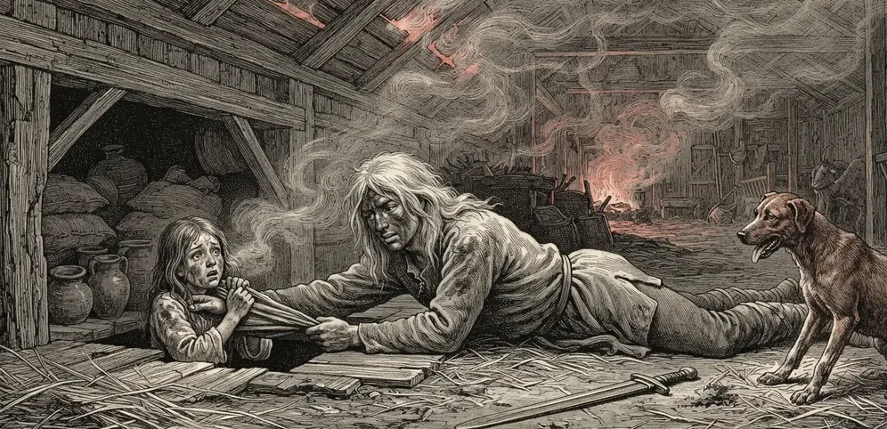
Los suevos
Ricila volvió de Bracara a finales del verano, un mes más tarde de lo prometido, con el pelo más largo, una túnica de romano y un libro nuevo debajo del brazo.
Teudo no lo reconoció al principio. Estaba en el prado con los bueyes nuevos y vio subir por el camino a un muchacho alto, delgado, con una túnica de lino claro ceñida a la cintura, como las que llevaban los romanos de la villa, y unas sandalias en vez de botas, y pensó que era alguien de Materno. Luego el muchacho levantó la mano y le saludó, y Teudo vio los ojos grises de la madre.
—Pareces un cura —le dijo cuando lo tuvo delante.
—Casi —dijo Ricila. Y le abrazó.
La madre lloró. El padre le miró la túnica y las sandalias de arriba abajo, sin decir nada, y luego le preguntó si en Bracara le daban bien de comer, porque estaba muy flaco. Brunhild le trajo al niño, que tenía ya dos años y medio y corría por todas partes, y el niño se quedó mirando a Ricila con la boca abierta y luego se escondió detrás de las faldas de su madre.
Esa noche, en la cocina, Ricila contó Bracara. La ciudad grande, con murallas y con un foro con columnas, y con una iglesia más grande que la villa de Materno entera. El obispo, un viejo que hablaba griego. Los chicos de la escuela, hijos de romanos ricos que se reían de su acento los primeros días y que luego dejaron de reírse cuando vieron que leía más deprisa que ellos. Los libros. Habló de los libros mucho rato. Teudo no entendió la mitad.
Luego, ya tarde, cuando la madre se había acostado y los demás dormían, Ricila sacó el libro que traía debajo del brazo. No era un libro. Eran unas hojas sueltas, cosidas con un cordel, escritas con una letra pequeña y apretada.
—Las escribe un chico de la escuela —dijo—. De mi edad. Se llama Idacio. Es de Limia, de aquí al lado, y de niño estuvo en Jerusalén con su madre y vio al gran Jerónimo. Quiere ser obispo. Apunta todo lo que pasa, año por año. Dice que alguien tiene que hacerlo, que si no, nadie se va a acordar.
—¿Y para qué te lo ha dado?
—No me lo ha dado. Lo he copiado yo. —Ricila pasó las hojas—. Escucha.
Y leyó, despacio, traduciendo del latín sobre la marcha, a la luz del fuego.
Leyó lo de los cuatro pueblos que entraron en Hispania. Lo del hambre, lo de la peste, lo de las fieras que comían hombres. Lo del reparto por suertes. Teudo escuchaba sin moverse. Era su vida. Era su vida contada por otro, en cuatro líneas, en una lengua que no era la suya.
Luego Ricila llegó al final y se calló.
—¿Qué pone?
Ricila tardó en leerlo.
—Pone que este año el rey Valia, por orden de Roma, ha hecho una gran matanza de bárbaros dentro de Hispania. —Se paró—. Y pone esto: «Los vándalos silingos de la Bética, todos fueron exterminados por el rey Valia».
—¿Todos?
—Eso pone.
Teudo no dijo nada. No conocía a ningún silingo. Se acordaba de los vándalos del Rin, de los carros que cruzaron el hielo cuatro días después que ellos, de los que lloraban a sus muertos en la orilla mientras los suevos se iban a saquear Mogontiacum. Se acordaba de que entre ellos había mujeres y niños.
—Todos no puede ser —dijo al fin—. Nunca son todos.
—No —dijo Ricila. Cerró las hojas—. Pero Idacio no va a escribir los nombres de los que se salven. Solo el de los reyes.
Se quedaron callados mirando el fuego. Luego Ricila le contó lo demás, lo que no estaba escrito. Que en Bracara se decía que después de los silingos irían a por los alanos. Y que después de los alanos irían a por los asdingos. Y que después...
No terminó la frase.
—Y después, nosotros —dijo Teudo.
—Eso dicen.
Teudo se levantó. Fue hasta el rincón de las herramientas, donde la madre seguía obligándole a dejar la espada cada vez que bajaba de la Peña, y la cogió. La sacó de la vaina. La miró a la luz del fuego.
Ricila no le dijo nada esta vez.
Los vándalos
Aquella mañana Asta estaba en el establo porque la yegua torda se había metido una piedra en el casco.
Fue por eso. Solo por eso. Luego, en los años que vinieron, Asta se lo preguntó muchas veces, de noche, sin poder dormir: qué habría pasado si la yegua no se hubiera metido aquella piedra en el casco. Si ella hubiera estado en el patio, o en el olivar con Silvano, o en el río. No tenía respuesta. Nadie la tiene.
Estaba agachada junto a la yegua, con la pata entre las rodillas y un clavo en la mano para sacar la piedra, cuando oyó los perros.
Ladraban todos a la vez. El perro viejo de la Galia, que ya casi no se levantaba; el perro marrón de Arsak; los dos de la granja de abajo, a lo lejos. Ladraban hacia el camino. Y luego se callaron todos a la vez, y ese silencio fue lo que la hizo levantarse, como se había levantado su madre una mañana de invierno en la orilla del Rin, aunque ella no lo sabía.
Se asomó a la puerta del establo.
Por el camino de los olivos subían jinetes. Muchos. Veinte, treinta, no supo contarlos. Llevaban cascos y escudos redondos y lanzas, y venían al trote, sin gritar, sin prisa, como se viene a un sitio donde ya se sabe lo que hay. No eran alanos; los alanos no montaban así. No eran silingos. Asta vio el escudo del primero, pintado de rojo con una cruz blanca, y no supo lo que era, pero supo lo que quería decir.
Su padre estaba en el patio. Lo vio desde la puerta del establo, sentado en el banco de piedra junto al pozo, con la pierna estirada, pelando una naranja. Lo vio levantar la cabeza. Lo vio dejar la naranja en el banco, despacio. Lo vio coger el bastón, levantarse y entrar en la casa, sin correr, y salir otra vez con la espada de su abuelo en la mano.
Su madre salió detrás. Con el cuchillo de la carne.
Prisca salió la última.
Asta quiso correr hacia ellos. Lo intentó. Dio un paso fuera del establo y una mano la agarró del brazo y la metió dentro de un tirón tan fuerte que le dolió el hombro.
Era Prisca. No sabía cómo había llegado tan deprisa; había salido de la casa y había cruzado el patio sin que Asta la viera. Tenía la cara blanca y los ojos muy abiertos y la agarraba con una fuerza que Asta no sabía que tuviera.
—Abajo —le dijo en latín—. Al hoyo. Ya.
—¡Mi padre...!
—Tu padre lo sabe. —Prisca la arrastró hacia el fondo del establo, donde la paja—. Tu padre me lo dijo. Hace dos años. Que si venían, tú al hoyo. —Apartó la paja con el pie, levantó una tabla—. Él lo cavó para esto. No para el trigo. Para esto.
El hoyo estaba oscuro. Olía a tierra y a aceite rancio. Dentro estaban los sacos de trigo, las tinajas, la cadena de plata envuelta en un trapo.
—No —dijo Asta.
Prisca la cogió de la cara con las dos manos. La miró a los ojos.
—Julia no tenía hoyo —le dijo—. Tú sí.
Y la empujó dentro.
Asta cayó entre los sacos. Se dio en la cabeza con una tinaja. Arriba, la tabla volvió a su sitio, y la luz se fue, y oyó la paja caer encima, mucha, a puñados, y luego los pasos de Prisca alejándose por el establo, y luego nada.
Luego, todo.
No vio nada. Solo oyó. Lo oyó todo, desde abajo, a oscuras, con la cara contra un saco de trigo y las manos tapándose la boca para no gritar. Oyó los caballos entrar en el patio. Oyó una voz que hablaba en una lengua que se parecía a la suya, que casi se entendía, como la de los francos que nunca había oído. Oyó a su padre contestar. No entendió las palabras. Entendió el tono. Era el tono que ponía su padre cuando Silvano le pedía más aceite del que le tocaba: firme, tranquilo, un poco cansado.
Oyó hierro.
Oyó a su padre gritar algo, una palabra, una sola. Su nombre, quizá. O el de su madre. No lo supo nunca.
Oyó a su madre.
Luego oyó a Prisca. Prisca hablaba en latín, alto, muy alto, más alto de lo que Asta la había oído hablar nunca, y decía que era romana. Que era romana, ciudadana, de la Galia, que la habían cogido los bárbaros en Mogontiacum y la habían tenido de esclava diez años. Que no había nadie más en la casa. Que se la llevaran, que estaba sola, que no había nadie más.
Alguien se rio. Luego, caballos. Muchos, moviéndose. Luego algo que crujía, arriba, lejos, y un olor que Asta conocía, el olor del horno cuando se queman las ramas de olivo, pero más fuerte, mucho más fuerte.
Luego, otra vez, nada.
Asta no supo cuánto tiempo estuvo allí. Mucho. Lo bastante para que el olor a humo se metiera por las rendijas de las tablas y le hiciera toser con la cara contra el saco. Lo bastante para que se le durmieran las piernas, y luego los brazos. Lo bastante para dejar de llorar, y luego volver a llorar, y luego dejar otra vez.
No salió. Prisca le había dicho que no saliera. Su padre le había dicho a Prisca que no saliera. Hacía dos años.
Al final, cuando ya no sabía si era de día o de noche, oyó pasos en el establo. Unos pasos que arrastraban un poco el pie, cansados. Y una respiración. Y un perro, que olfateaba la paja, y que se puso a escarbar justo encima de su cabeza, gimiendo.
La tabla se levantó.
Arriba, recortado contra un cielo rojo de humo, había un hombre con el pelo blanco y la cara negra de hollín, con una espada ensangrentada en la mano y un perro marrón a los pies.
Los alanos
Arsak estaba en la playa del remanso, con los caballos, cuando vio el humo.
Había bajado al amanecer a bañarlos, como hacía cada pocos días desde que el costado se lo permitía: la yegua torda de Guntario, que se llamaba Niebla y era tonta; su propio caballo; dos potros que había comprado en la primavera en una aldea silinga y que estaba domando para Guntario, para que tuviera algo que vender. Le gustaba aquel rato. El río ancho y lento, las barcas de aceite bajando hacia Hispalis, los sauces, el agua fría hasta la cintura y los caballos resoplando a su alrededor. Era lo más parecido a la paz que había conocido nunca.
Vio el humo por encima de los olivos. Una columna gris, delgada al principio. Luego negra.
Venía de la loma.
No se acordó después de cómo montó. Se acordó de ir al galope por el camino entre los olivos, a pelo, sin silla, agarrado a las crines, con la espada en la mano porque la había cogido al salir del agua sin pensar, y el perro sin nombre corriendo delante, ladrando, como en el encinar de los lobos. Se acordó de que el camino era largo. Que nunca le había parecido tan largo. Que cada olivo era igual que el anterior, y que el humo seguía allí, cada vez más grande, cada vez más negro.
Llegó por la parte de atrás de la loma, por el huerto. Ya se habían ido casi todos.
Quedaban tres. Tres godos a pie en el patio, rebuscando en la casa, saliendo con cosas en las manos: una sartén de hierro, una manta, la rueca de Gisa. El tejado de la casa ardía por un lado. La higuera ardía. Uno de los godos estaba meando contra la pared encalada, riéndose de algo que le decía otro.
Arsak los mató a los tres.
No lo pensó. No sintió nada, como no había sentido nada en la carga del Rin. Entró en el patio a caballo, al galope, por encima de la cerca del huerto, y el primero no le vio llegar. El segundo sí, y levantó la lanza, y era joven, muy joven, con un bigote rubio que apenas le salía, y Arsak pensó en Candac, en lo que había dicho Candac en la orilla del Rin, que Roma pagaba para que unos bárbaros mataran a otros. Y luego ya no pensó en nada más.
Cuando terminó, bajó del caballo.
Guntario estaba junto al pozo. Sentado en el suelo, con la espalda contra el brocal, con la espada de su abuelo todavía en la mano, igual que había muerto su padre en el trigo. Estaba vivo. Tenía una lanza rota clavada en el vientre y la túnica empapada, y estaba gris, como la ceniza, pero estaba vivo, y cuando vio a Arsak sonrió. Una sonrisa rara, torcida, que no se le acababa de formar.
Arsak se arrodilló a su lado.
Gisa estaba un poco más allá, en el umbral de la casa. No se movía. Arsak no la miró dos veces.
—La niña —dijo Guntario. Le salía la voz como de muy lejos—. La niña.
—¿Dónde?
Guntario no contestó. Movió los ojos. Hacia el establo. Arsak miró. El establo no ardía todavía. La puerta estaba abierta.
—Prisca —dijo Guntario—. Se la llevaron. Dijo que era romana. Que estaba sola. —Tosió. Le salió sangre por la boca—. Lo dijo para que no buscaran.
Arsak le cogió la mano. La mano de la espada. Guntario no la soltó.
—Mi casa es tu casa —dijo Guntario. En vándalo. Despacio. Como lo había dicho once años antes, en la orilla del Rin, con la fíbula en la mano—. Mientras yo viva. —Se paró. Respiró—. Y mientras viva mi sangre.
Arsak entendió las palabras esta vez. Todas.
—Mientras viva tu sangre —dijo.
Guntario asintió. Luego cerró los ojos. Arsak le tuvo la mano cogida hasta que dejó de apretar, y luego un rato más.
Después se levantó y fue al establo.
No sabía dónde estaba. Estuvo a punto de no encontrarla. Gritó su nombre, Asta, Asta, en mitad del establo, entre el humo que empezaba a entrar por las rendijas del tejado, y nadie contestó. Buscó detrás de los pesebres, en el pajar, en la cuadra de la yegua. Nada. Pensó que se la habían llevado también. Pensó que estaba muerta en algún sitio que él no había visto, en el olivar, en el camino. Se quedó parado en mitad del establo, con la espada colgando de la mano, sin saber adónde ir.
Fue el perro. El perro sin nombre, el de la cicatriz en el cuello, que se puso a dar vueltas sobre la paja del fondo, olfateando, gimiendo, y luego a escarbar con las dos patas, deprisa, como escarbaba los conejos.
Arsak apartó la paja. Debajo había tablas. Levantó una.
Abajo, entre unos sacos, en la oscuridad, había una niña de trece años con la cara negra de tierra y los ojos muy abiertos, mirándole. Sin llorar. Como le había mirado siempre.
Arsak tiró la espada. Se tumbó en el suelo, metió los brazos en el hoyo y la sacó.
No le dijo nada. No había nada que decir. La cogió en brazos, como se coge a un niño pequeño, aunque ya no lo era, y salió del establo por la puerta de atrás, la del huerto, para que no viera el patio. La subió al caballo. Montó detrás de ella. Cogió de la rienda a la yegua tonta y a los dos potros.
Al salir del huerto, Asta se volvió. Arsak le puso la mano en la cara para que no mirara. Ella le apartó la mano.
Miró.
Luego se dio la vuelta, se agarró a las crines del caballo y no volvió a mirar.
La huida
Gallaecia, la Bética y Sierra Morena – otoño e invierno de 417
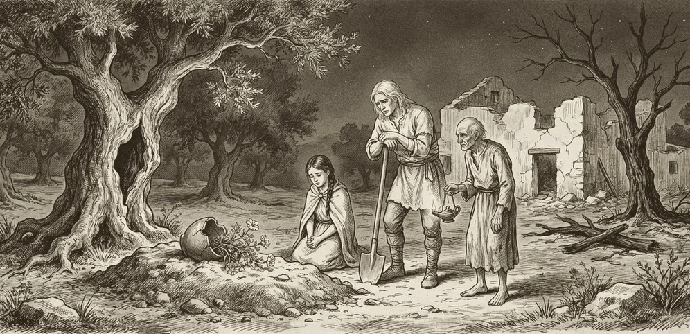
Los suevos
Aquel otoño empezaron a llegar al Duero gentes que huían.
Llegaban por los vados del sur, de noche casi siempre, en grupos pequeños: dos, tres, una familia, un hombre solo con un caballo cojo. Eran alanos. Venían de Lusitania y de la Cartaginense, de las villas que Valia iba quemando una detrás de otra, y no querían quedarse en la tierra de los suevos. Querían pasar. Iban hacia el norte, hacia el este, hacia donde estaban los vándalos asdingos de Gunderico, porque se decía que Gunderico los acogía.
Fravita los dejaba pasar. Era la orden del rey: que pasaran, que no se pararan, que no se quedaran. Teudo los vio cruzar muchas noches desde la torre, a la luz de la luna, hombres y mujeres envueltos en mantas, con niños dormidos encima de los caballos, en silencio, sin mirar a los lados. Una vez bajó al vado con la guardia a ver quiénes eran, y un alano viejo le preguntó en un latín de cuartel si aquella era la tierra de los suevos, y cuando Teudo le dijo que sí, el viejo asintió y le dijo una cosa que Teudo no olvidó:
—Pues prepárate, chico. Detrás venimos nosotros, y detrás de nosotros vienen ellos.
Teudo tenía veintiún años. Aquel otoño se acordó mucho del camino.
Se acordaba de cosas que no sabía que recordaba. De la columna en la Galia, con los alanos delante, los vándalos en medio y los suevos detrás, comiéndose el polvo de los otros. De los vándalos de los carros de al lado, a los que veía todos los días durante meses y a los que nunca habló. De una mujer vándala de ojos grises que cocinaba junto a un carro con la lona remendada, y de un hombre cojo a su lado, y de una niña pequeña que corría entre las ruedas con un perro. No sabía sus nombres. No había sabido nunca los nombres de ninguno. Eran los vándalos, los de al lado, como los árboles del camino.
Una noche se lo dijo a Ricila, en la cocina.
—¿Te acuerdas de los vándalos del camino? ¿De la Galia?
Ricila levantó la cabeza del libro. Se quedó pensando.
—Me acuerdo de que había vándalos —dijo—. No me acuerdo de ninguna cara.
—Yo sí. De algunas.
—Yo tenía seis años.
—Ya. —Teudo se quedó mirando el fuego—. Y ahora están muertos. Todos los de la Bética. Lo pone tu libro.
Ricila no contestó. Cerró las hojas de Idacio.
—Era mentira —dijo al fin—. Lo de «todos». Ya te lo dije. Nunca son todos.
—¿Cómo lo sabes?
—Porque él no estaba allí. Lo escribió en Bracara. —Ricila se encogió de hombros—. Escribe lo que le cuentan. Y a los que les cuentan las cosas, les gustan las palabras grandes.
Aquel invierno Ricila no volvió a Bracara. No lo dijo nadie; simplemente no volvió. Se quedó en la casa de labor y ayudó con el campo y con el molino, y por las tardes bajaba a la villa de Materno a leer, y por las noches enseñaba letras al hijo de Odo, que tenía tres años y que no aprendía nada pero se divertía mucho con la tablilla de cera. El padre no le preguntó por qué se había quedado. La madre tampoco. Brunhild sí, una noche, en el huerto.
—Porque si vienen —le dijo Ricila—, aquí hace falta alguien que sepa hablar con ellos.
Brunhild le miró mucho rato.
—Tu hermano dice que con los godos no se habla.
—Mi hermano subió a buscar el escudo con la espada —dijo Ricila—. Y yo con un cura.
Brunhild no dijo nada. Pero aquella noche, por primera vez desde la muerte de Odo, Teudo la oyó reírse, bajito, desde la puerta del huerto.
Los vándalos
Asta no lloró. Ni aquel día ni los siguientes.
Lo pensó mucho después, cuando ya era mayor y tenía hijos y le preguntaban por aquella época. No sabía por qué no había llorado. Había llorado por cosas más pequeñas: por una caída del caballo, por un hilo roto en la rueca, porque su padre le dijo una vez que tiraba con el arco como un pato. Aquel día no. Se agarró a las crines del caballo de Arsak y miró hacia delante, hacia el camino entre los olivos, y algo dentro de ella se cerró como se cierra una puerta, con la tranca puesta, y se quedó cerrado mucho tiempo.
Silvano los encontró al anochecer, en el barranco de los juncos, junto al río, donde Arsak se había escondido con los caballos.
Llegó solo, a pie, con un candil apagado en la mano y la cara tan arrugada y oscura que en la penumbra parecía una corteza de olivo. Se había pasado la tarde subido al Abuelo, el olivo más viejo, el más torcido, con el hueco en el tronco donde cabía un hombre, y desde allí lo había visto todo. Se quedó de pie delante de Asta, que estaba sentada en una piedra con el perro marrón a los pies, y la miró un rato largo sin decir nada.
Luego se arrodilló, despacio, con las rodillas crujiendo, y le cogió las manos.
Asta le miró. No dijo nada.
Silvano los llevó a su choza, en la aldea de los colonos, al otro lado de la loma. Una choza de adobe y cañas con un fuego en el suelo y un catre, donde vivía solo desde hacía veinte años. Los escondió allí dos días. Los godos pasaron por la aldea el segundo día, buscando bárbaros, y Silvano les salió al camino con un cesto de higos y les dijo en latín que allí solo vivían romanos pobres, cristianos, colonos, que los bárbaros se habían ido todos al sur, y los godos le quitaron los higos y se fueron.
La segunda noche, Asta habló por primera vez.
—Quiero enterrarlos.
Arsak la miró. Silvano también. Asta tenía la cara seria, los ojos secos, la boca apretada.
—No se puede —dijo Arsak—. Hay godos.
—De noche no.
—Puede haber.
—Quiero enterrarlos. —Asta se levantó—. Si no voy yo, voy sola.
Fueron los tres. A medianoche, sin luna, con una pala y una azada de Silvano, por el camino de los olivos. La casa estaba quemada. Solo quedaban las paredes encaladas, negras de humo, sin tejado, y el pozo, y la higuera, que era un tronco carbonizado con dos ramas que todavía tenían hojas. Los cuerpos estaban donde los habían dejado. Los godos no habían tocado nada más.
Arsak le dijo a Asta que se quedara fuera, en el camino. Asta no le hizo caso.
Los enterraron debajo del Abuelo, entre las raíces, donde la tierra era blanda. Cavaron Arsak y Silvano. Asta no cavó; se quedó de pie junto al hoyo, mirando, sin moverse, y cuando bajaron a su padre envuelto en la manta de Silvano, se arrodilló y le puso en el pecho la espada del abuelo, la que había guardado su padre toda la vida y no había podido usar. La mujer guarda la espada de la casa. Se la había dicho él.
El perro viejo de la Galia estaba junto al umbral, donde había estado su madre. Había muerto allí, delante de la puerta, como se había tumbado el primer día que llegaron a la granja, como si la puerta fuera suya. Asta lo vio. Se quedó un momento parada. Luego fue a buscarlo, lo cogió en brazos, aunque pesaba mucho para ella, y lo trajo hasta el olivo, y lo dejó en el hoyo a los pies de su padre. Arsak no dijo nada. Silvano se santiguó.
Luego Asta fue al patio. Volvió con la maceta de las flores rojas. Estaba rota por un lado, y las flores estaban negras de humo, pero la planta estaba viva. La puso encima de la tierra, entre los dos.
Al volver, en el camino, Arsak se paró de golpe y se dobló, apoyándose en un olivo. Silvano le puso la mano en el costado. La sacó mojada.
La herida se había abierto.
Los alanos
Salieron de la Bética la cuarta noche, con la mula de Silvano cargada de comida, la yegua tonta, los dos potros y el perro.
Silvano no quiso venir. Arsak se lo pidió; Asta se lo pidió con la mirada, que era más que pedirlo. El viejo negó con la cabeza. Dijo que él había nacido allí, que su abuelo había plantado la higuera, que su padre estaba enterrado en el cementerio de la aldea y que él quería estar al lado. Dijo que los godos no matan a los colonos viejos, porque los colonos viejos son los que saben cuándo se varea el olivo. Dijo que alguien tenía que cuidar al Abuelo, ahora que tenía dentro lo que tenía.
Se despidió de Asta en la puerta de la choza. Le dio un higo seco, uno solo, de la última cosecha de la higuera quemada. Le dijo algo en latín que Arsak no entendió y que Asta no le quiso traducir nunca.
Viajaban de noche. De día se escondían en los barrancos de la sierra, entre jaras y encinas, en sitios donde no había agua cerca, porque donde hay agua hay gente. Arsak conocía la sierra; la había cruzado tres veces. Iba hacia el norte, despacio, por los caminos de los pastores, evitando las calzadas. Hacia el Anas. Hacia su villa. Hacia Marcelo y Tecla y Félix, a los que había prometido volver hacía un año para la doma de los potros.
Lo pensó mucho, aquellas noches, montado delante de Asta, con el costado vendado otra vez y la niña callada a su espalda. ¿Por qué hacia allí? Podía haber ido al este, a la Cartaginense, donde había más alanos. Podía haber ido al norte, lejos, a Gallaecia, a buscar a los asdingos, como hacían todos los que huían. Iba hacia su villa porque era su puerta. Porque era el único sitio del mundo donde alguien le servía primero en la mesa.
Y porque era tierra de alanos. Y los alanos eran muchos, y Addax era rey, y Addax tenía un ejército. Allí estaría a salvo la niña. Allí nadie iba a quemarle otra casa.
Asta no hablaba.
Desde la noche del entierro no había dicho una palabra. Comía lo que le daba, bebía, dormía cuando él le decía que durmiera, montaba cuando él le decía que montara. Le seguía. Pero no hablaba. Arsak le hablaba a ella. No sabía qué decirle, así que le contaba lo único que sabía contar: lo que le contaba su padre junto al fuego, de niño. La estepa. El Tanais. El cielo más grande que la tierra. Los carros de fieltro que se movían detrás del ganado. Las yeguas que se ordeñaban y la leche que se dejaba fermentar en odres de cuero hasta que picaba en la lengua. La espada clavada. Los hunos. Le contaba todo esto en alano, en su lengua, porque en vándalo no sabía decirlo, y Asta no entendía casi nada. Le escuchaba igual. Arsak lo sabía porque, cuando se callaba, ella le tocaba la espalda con un dedo, una vez, para que siguiera.
El tercer día, escondidos en un barranco, los godos pasaron por arriba.
Arsak los oyó antes de verlos: cascos de caballos herrados sobre piedra, muchos, y voces, y el tintineo de los arneses. Venían por el camino del collado, a cien pasos por encima del barranco, entre las jaras. Arsak se echó al suelo junto a los caballos y les tapó los ollares con las manos, primero a uno, luego a otro, como le había enseñado su padre para que no relincharan. No tenía manos para todos. La yegua tonta levantó la cabeza, olió a los caballos de arriba y abrió la boca para relinchar.
Asta le metió el puño en la boca.
Arsak lo vio. La niña estaba de rodillas junto a la yegua, con el brazo metido hasta la muñeca entre los dientes del animal, apretándole la lengua, y con la otra mano le tapaba los ollares. La yegua resoplaba y movía la cabeza. Asta no la soltaba. El perro marrón estaba tumbado a su lado, pegado a la tierra, con las orejas hacia atrás, y no hizo ni un ruido.
Los godos tardaron en pasar lo que se tarda en rezar una oración larga. Arsak los contó por el ruido: cuarenta, cincuenta. Hablaban y se reían. Uno cantaba. Luego el ruido se fue alejando hacia el oeste, y luego ya no se oía nada más que el viento en las jaras y un pájaro en algún sitio.
Asta sacó el puño de la boca de la yegua. Tenía la mano llena de babas y la muñeca marcada con los dientes, roja, con un hilo de sangre. No dijo nada. Se limpió la mano en la falda y se sentó en el suelo con la espalda contra una piedra, temblando, mirando el cielo.
Arsak se sentó a su lado. Le cogió la muñeca y se la miró. No era nada. Se la lavó con agua de la cantimplora.
—¿Dónde has aprendido eso? —le preguntó.
Asta tardó en contestar. No contestó. Pero Arsak se acordó de Guntario, en la granja, una noche, junto al fuego, contándole que en el Rin, en la carga de los francos, los caballos asdingos se habían vuelto locos con el olor de la sangre y que él había visto a un chico meterle el puño en la boca a uno para que no se desbocara. Asta estaba delante, aquella noche. Escuchando.
La quinta noche, en un collado de la sierra, se pararon a descansar. Arsak se bajó del caballo para mirarse el costado y se mareó. Se sentó en una piedra. Cuando se le pasó, la niña estaba delante de él, de pie, con la cantimplora en la mano.
Le dio de beber. Luego, sin decir nada, le levantó la túnica y le miró la herida a la luz de la luna, como había visto hacer a Prisca tantas veces. Le cambió la venda. Lo hizo bien, apretando lo justo, sin mirarle a la cara.
Cuando terminó, se sentó en la piedra a su lado.
Estuvieron así un rato. Abajo, hacia el norte, la sierra bajaba en lomas oscuras hacia una llanura que no se veía. Muy lejos, en el horizonte, había un resplandor rojo. Un fuego grande. Una villa, una aldea, algo que ardía en la tierra de los alanos.
Arsak lo miró y no dijo nada. Asta también lo miró.
Luego la niña apoyó la cabeza en su brazo. Solo eso. Apoyó la cabeza en su brazo y se quedó así, quieta, mirando el fuego del horizonte, y Arsak no se movió en toda la noche para no despertarla, aunque se le durmió el brazo, aunque le dolía el costado, aunque el frío de la sierra le entraba por todas partes.
Por la mañana, cuando se despertó, Asta le miró a la cara por primera vez desde la granja.
—¿Allí es tu casa? —preguntó. Con la voz ronca, como si se le hubiera oxidado.
Arsak miró hacia el norte, hacia donde había estado el fuego, que ya no se veía.
—Allí era —dijo.
Lusitania
Gallaecia y Lusitania – del invierno a la primavera de 418
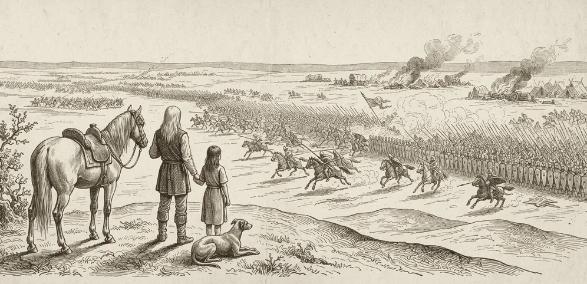
Los suevos
En el invierno, los asdingos se movieron.
Llevaban siete años en el este de Gallaecia, en los valles de las montañas, al otro lado de la sierra que separaba sus tierras de las de los suevos. Siete años de vecinos, de una paz de dientes apretados, como todas las paces de entonces. Cada uno en su parte. Algún robo de ganado, alguna pelea en un mercado, algún muerto en un camino que nadie reclamaba. Nada más.
Pero ahora los asdingos eran más. Muchos más. Cada semana llegaban alanos a los valles de Gunderico, los que huían de Valia, y Gunderico los acogía a todos, les daba tierra, les daba de comer, y los alanos le juraban fidelidad. Decían que ya eran miles. Decían que Gunderico se llamaba ahora rey de los vándalos y de los alanos. Y decían que Gunderico miraba hacia el oeste, hacia las tierras de los suevos, hacia los valles verdes del Miño y del Duero, y que no le gustaba que fueran de otros.
Fravita recibió aquel invierno tres mensajes del rey. Teudo los vio llegar, uno detrás de otro, con jinetes reventados. Fravita los leía, o se los hacía leer, en su casa, con la puerta cerrada, y luego salía al patio y doblaba algo: las guardias, las patrullas, las piedras amontonadas detrás de la muralla. Al tercer mensaje mandó llamar a todos los hombres de las aldeas del valle que supieran tener una lanza.
Teudo bajó a la casa de labor a decírselo al padre. El padre estaba en el establo, con Rojo.
Rojo era ya muy viejo. Más que el Viejo cuando murió. Estaba echado en la paja, con la cabeza en el suelo, respirando despacio, y ya no se levantaba casi nunca. El padre le daba de comer en la mano, heno tierno y algo de pan, y se pasaba las tardes sentado a su lado, en un taburete, sin hacer nada. Teudo se sentó en el borde del pesebre.
—Fravita llama a los hombres —dijo—. A todos.
El padre siguió acariciando la cabeza del buey.
—Ya lo sé. Ha venido Wilja.
—¿Vas a ir?
El padre tardó en contestar.
—Tengo cincuenta años —dijo—. Tengo una espalda que no me deja agacharme y unas rodillas que crujen como una puerta. —Se encogió de hombros—. Iré.
—Padre...
—Iré. —Le miró—. Ya te lo dije en los Pirineos. No me gusta. Pero cuando toca, toca.
Teudo no dijo nada. Se quedaron un rato los dos callados, en el establo, con el buey entre ellos. Rojo resopló. Movió una oreja.
—Este nos trajo —dijo el padre al cabo—. Desde las colinas. Cruzó el Rin. Subió los Pirineos y los bajó. Aró el primer surco de esta tierra. —Le pasó la mano por el lomo—. Y ahora se muere y no hay nada que hacer.
—Es viejo.
—Ya. —El padre le miró—. Todo el que llega a viejo se muere. Lo malo es el que no llega.
Rojo murió esa misma semana. Lo enterraron al lado del Viejo y de Odo, en el prado del arroyo. Esta vez el padre no cavó; no podía. Cavaron Teudo y Ricila, entre los dos, como habían cavado la tumba del Viejo, bajo una lluvia fina, de las de allí. Cuando terminaron, Ricila se quedó un momento de pie junto a la tierra removida, con la pala en la mano.
—Se acaba —dijo.
—¿El qué?
Ricila no contestó. Pero Teudo entendió lo que quería decir. Que con Rojo se acababa algo. Lo último que les quedaba de las colinas, del Rin, del abuelo, del caballito de madera, de todo lo que habían sido antes de ser suevos de Gallaecia.
Ahora solo les quedaban ellos.
Los vándalos
La villa de Arsak estaba en pie.
Asta la vio una tarde de finales del otoño, desde una loma, con el río Anas brillando detrás como una espada tendida en el suelo. No se parecía a la granja. Era más grande, más vieja, con un patio de columnas, dos de ellas caídas, y un tejado arreglado a trozos con tejas de distintos colores. Tenía un establo grande y un prado con potros, y en el prado había un chico. No: un viejo. Un viejo pequeño, encorvado, con una horca en la mano, que levantó la cabeza al oír los caballos y se quedó quieto, mirando hacia la loma.
Arsak paró el caballo. Asta notó que se le tensaba la espalda.
El viejo dejó caer la horca. Empezó a andar hacia ellos, despacio, por el prado. Luego más deprisa. Luego echó a correr, como corren los viejos, torpemente, con los brazos sueltos, y a mitad del prado se paró y se volvió hacia la casa y gritó algo, un nombre, muy fuerte, y de la puerta de la cocina salió una mujer secándose las manos en el delantal.
Se llamaban Marcelo y Tecla. Asta lo supo esa misma noche, sentada a una mesa de madera en una cocina con el fuego encendido, con un cuenco de sopa caliente delante que no se comía. Tecla no paraba de hablar. Hablaba en latín, deprisa, con las manos, y lloraba y se reía a la vez, y tocaba a Arsak en el brazo, en la cara, en el pelo, como si no se creyera que estaba allí. Marcelo no decía nada. Se había sentado en el banco, enfrente, y miraba a Arsak sin pestañear, con los ojos mojados.
Luego Tecla miró a Asta.
Se quedó callada de golpe. Miró a la niña de arriba abajo: el pelo claro sucio, la ropa rota, las manos llenas de arañazos, la muñeca con la marca de los dientes de la yegua. Miró a Arsak. Arsak le dijo algo en latín, muy bajo. Asta no lo entendió todo. Entendió «padre», «madre», «godos». Entendió «sola».
Tecla se levantó. Dio la vuelta a la mesa. Se puso delante de Asta y le cogió la cara con las dos manos, como la había cogido Prisca en el establo, la última vez.
No le dijo nada. La abrazó.
Asta no se movió. Se quedó quieta dentro del abrazo de aquella mujer desconocida, que olía a humo y a cebolla y a pan, como olían su madre y Prisca y todas las mujeres que había conocido. Se quedó quieta mucho rato. Luego, despacio, levantó los brazos y la abrazó también.
Aquella noche, en una cama de verdad, con una manta de lana que había tejido Tecla, Asta lloró por primera vez desde la granja. Lloró toda la noche, sin ruido, con la cara contra la manta. Tecla durmió en el suelo, a su lado, en un jergón, y no le dijo nada, pero cada vez que el llanto se volvía más fuerte le ponía la mano en la espalda.
Félix no estaba.
Lo supo Asta al día siguiente, por Arsak, que se lo dijo sentado en la base de una de las columnas caídas del patio, con la cara como la tenía en el collado de la sierra mirando el fuego del horizonte. Félix se había ido en el verano. Con Addax. Había cogido la yegua y el arco pequeño y se había ido una mañana, sin decir nada a nadie, a unirse a los jinetes del rey, que recorrían las villas llamando a los hombres. Tenía dieciséis años. Había dejado una tablilla de cera en la mesa de la cocina con una frase escrita en letras torcidas, que Marcelo no sabía leer y que le había leído el cura de la aldea:
«Para la doma de los potros. Volveré.»
Arsak no dijo nada más. Asta se sentó a su lado en la columna caída. Estuvieron así un rato largo, los dos, mirando el prado donde estaban los potros sin domar.
—Era como yo —dijo Asta al fin.
Arsak la miró.
—El chico —dijo ella—. Félix. Le enseñaste a tirar con arco. Como a mí.
Arsak tardó en contestar.
—Sí —dijo—. Era como tú.
Los alanos
Addax reunió a los alanos en la primavera, en los llanos al este de Emerita, y Arsak fue a verlo.
No a luchar. Se lo dijo a sí mismo muchas veces por el camino, montado en el caballo, con el costado ya cerrado pero rígido, con la cota de escamas de su padre rota debajo del brazo y remendada con cuero. No iba a luchar. Iba a buscar a Félix. Iba a encontrarlo entre los jinetes de Addax y a decirle que la doma de los potros era ahora, que Marcelo y Tecla le esperaban, que se volviera a casa. Iba a traerlo de una oreja si hacía falta.
Asta fue con él. No hubo manera de que se quedara. Arsak se lo prohibió, Tecla se lo prohibió, Marcelo le escondió la silla de la yegua tonta. Asta montó a pelo. Arsak la encontró detrás de él en el camino, a media mañana, a cien pasos, con el perro marrón al lado, y se dio por vencido.
—Si pasa algo —le dijo—, te vuelves. Sin mirar. Como en la granja.
Asta asintió.
Llegaron al atardecer a una loma desde la que se veían los llanos. Arsak se paró. Asta se paró a su lado.
Abajo estaban los alanos. Todos. Más de los que Arsak había visto juntos desde el Rin: miles de jinetes, miles de carros, rebaños, fuegos, tiendas de fieltro, todo extendido por la llanura hasta donde alcanzaba la vista, como un pueblo entero acampado. Que era lo que era. Addax había llamado a todos, y habían venido todos. Los que tenían villa y los que no. Los viejos y los jóvenes. Con sus mujeres y sus niños, porque los alanos no dejan a las mujeres y a los niños atrás; los llevan con ellos, siempre, a todas partes. Arsak vio en mitad del campamento una tienda grande, blanca, con un estandarte de dragón encima que silbaba con el viento. La tienda del rey.
Y al otro lado de la llanura, en las lomas del este, vio a los godos.
Eran menos. Eso fue lo que pensó primero. Eran menos que los alanos, muchos menos. Pero estaban en fila. En filas largas, apretadas, hombro con hombro, escudo con escudo, como se ponían los soldados de Constantino en la playa de Bononia, como se ponían las piedras de una muralla. Y detrás de las filas había jinetes. Y detrás de los jinetes, más filas.
Y había romanos con ellos. Arsak los distinguió por los escudos y por los cascos. No muchos. Pero allí estaban, mirando.
—Mañana —dijo Arsak en voz baja.
No se acordó después de cuánto tiempo estuvieron en la loma. Se hizo de noche. Abajo se encendieron los fuegos de los alanos, miles, como las estrellas de la estepa que su padre le contaba. Del otro lado se encendieron los fuegos de los godos, menos, en filas rectas. Asta se durmió apoyada en él. Arsak no durmió. Se quedó toda la noche mirando el campamento alano, buscando, como si pudiera distinguir desde tan lejos a un chico de dieciséis años con un arco pequeño de tejo y una yegua.
A medianoche oyó un caballo que subía la loma. Uno solo, despacio. Arsak se levantó con la espada en la mano.
No era un caballo. Era una mula. Y encima de la mula, encorvado, envuelto en una manta, venía Beorgor.
Arsak no se lo creyó. El viejo no podía montar más de una mañana seguida; tenía las rodillas como melones. Había venido desde Emerita, medio día de camino, en una mula, solo, de noche. Se paró delante de Arsak y se quedó mirándolo desde arriba, con los ojos entornados, como miraba siempre.
—Sabía que estarías aquí —dijo—. Mirando. Como en la playa del mar.
—¿Qué haces aquí?
—Lo mismo que tú. —Beorgor se bajó de la mula, despacio, con un gruñido, y se sentó en una piedra—. Ver.
Miró a Asta, dormida en el suelo con el perro. Miró a Arsak. Levantó una ceja.
—¿La niña del arroyo?
—Sí.
—Has encontrado la puerta.
Arsak no contestó. Beorgor se quedó mirando el campamento de abajo, los miles de fuegos.
—No voy a bajar contigo —dijo Arsak—. No voy a cargar.
—Ya lo sé.
—Vengo a buscar a un chico. Uno de mi villa. Se fue con Addax.
—Ya lo sé también. —Beorgor escupió—. Me lo dijo la vieja de tu villa. Pasé por allí al venir. Me dio de cenar. —Se rascó la rodilla—. Esa mujer cocina mejor que todas las alanas que he conocido.
Estuvieron un rato callados. Luego el viejo se levantó, apoyándose en la mula.
—Yo sí voy a bajar —dijo.
—Beorgor...
—Tengo setenta y tantos años. No puedo montar. No puedo cargar. —Se encogió de hombros—. Pero puedo estar. Mañana van a cargar los alanos por última vez, todos juntos, como en la estepa. Y yo nací en la estepa. —Se subió a la mula con mucho trabajo—. Quiero verlo desde dentro.
Arsak no le dijo nada. No había nada que decirle. Le cogió la mano cuando ya estaba arriba. La mano del viejo era seca y dura, como una raíz.
—Once años —dijo Beorgor—. Tú cierra la tuya. Ya te lo dije.
Y bajó la loma despacio, en la mula, hacia los fuegos.
Al amanecer empezó.
Arsak no lo contó nunca. Ni a Asta, que lo vio con él, ni a nadie. Contó solo esto, muchos años después, una sola vez, a alguien que le preguntó: que los alanos cargaron como cargaban siempre, todos a la vez, con los dragones silbando, con la tierra temblando. Que eran muchos, que eran valientes, que eran los mejores jinetes del mundo. Y que se rompieron contra aquella muralla de escudos como se rompe el agua contra una roca.
Que vio caer el dragón de la tienda blanca a media mañana.
Que vio, desde la loma, cómo los jinetes godos rodeaban el campamento alano por los dos lados, despacio, sin prisa, como se rodea un rebaño. Que vio arder los carros de fieltro. Que vio correr a la gente.
Que no vio a Félix. Lo buscó todo el día y no lo vio.
Al mediodía pasó al galope por debajo de la loma un grupo de jinetes alanos que huían. Diez, doce. Arsak bajó a cortarles el paso. Les preguntó a gritos por Addax. Uno de ellos, con la cara llena de sangre, le contestó sin pararse.
—¡Muerto! ¡Addax está muerto! ¡Ya no hay alanos!
Y siguió galopando hacia el norte.
Arsak volvió a subir a la loma. Asta estaba allí, de pie, con el perro marrón, mirando la llanura. No había llorado. No se había movido.
Arsak se puso a su lado. Miraron juntos.
Allí abajo, en aquella llanura, estaba su pueblo. El que había cruzado el Rin. El que había bajado de los Pirineos. El de su padre, el de Beorgor, el de Candac antes de que se fuera con Goar. El de la estepa que no había visto nunca. El que no quería casas, porque decía que una casa es una tumba para un hombre vivo.
Se estaba muriendo en una tarde, delante de él, en una llanura de Hispania. Y él no podía hacer nada.
Arsak se llevó la mano al pecho. A la bolsita con la tierra del Tanais. Luego, más abajo, a la fíbula.
—Vámonos —dijo.
Asta le miró.
—¿Adónde?
Arsak miró hacia el norte. Hacia donde galopaban los alanos que huían. Hacia donde se decía que estaban los asdingos de Gunderico, que acogían a los que quedaban. Hacia un sitio que no conocía.
—Lejos —dijo.
Las sierras
Gallaecia, Lusitania y las sierras del norte – verano de 418
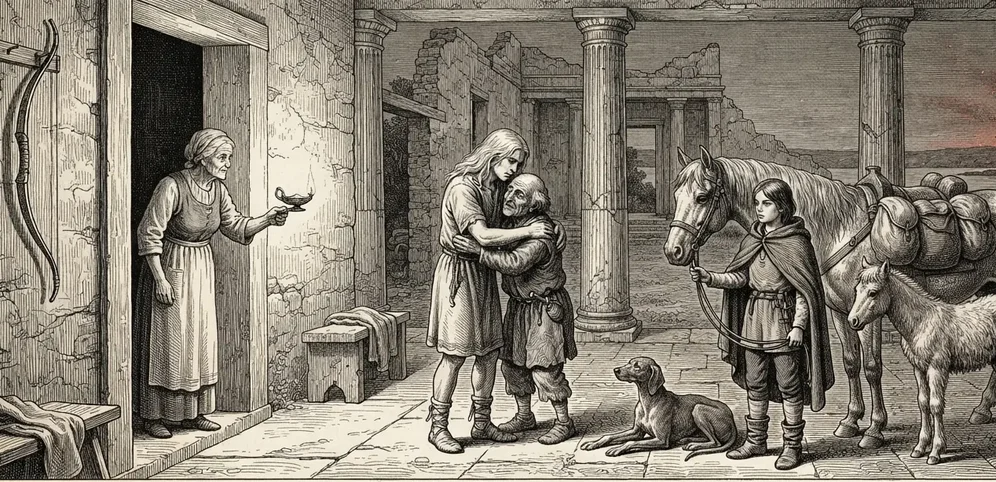
Los suevos
Los godos se fueron en el verano, y nadie en el valle del Duero se lo creyó hasta que lo vio.
Fue Materno el que trajo la noticia, como siempre. Subió a la Peña una mañana con su túnica de los domingos y una carta de Bracara, y esta vez no la leyó en voz alta: se la dio a Ricila, que estaba en el patio con Teudo, y le pidió que la leyera él. Ricila la leyó. Luego levantó la cabeza.
—Roma los ha llamado —dijo—. Les ha dado tierra en la Galia. En Aquitania, junto al mar. Ya no los necesita aquí.
—¿Y los alanos? —preguntó Fravita, que había salido de su casa al oír la voz.
Ricila volvió a mirar la carta.
—Pone que el rey de los alanos murió en la batalla. Addax. Y que los que quedan se han puesto bajo Gunderico. Que ya no tienen rey propio. —Bajó la carta—. Que ya no son un pueblo.
Fravita no dijo nada. Se quedó mirando hacia el sur, hacia Lusitania, que se veía desde el patio, verde y parda, al otro lado del río.
—¿Y nosotros? —preguntó Teudo.
—De nosotros no dice nada.
Fravita escupió.
—Mejor —dijo—. El que sale en las cartas de los romanos acaba mal.
Aquel verano fue raro. Los godos se habían ido; el peligro de los godos se había ido con ellos. Pero en el este estaban los asdingos, más fuertes que nunca, con los alanos que quedaban, y Gunderico seguía mirando hacia el oeste. Y en la frontera del sur, al otro lado del Duero, Lusitania se había quedado vacía. Sin alanos, sin godos, sin nadie. Las villas de los alanos ardidas o abandonadas, los romanos de las aldeas escondidos todavía en los montes, sin atreverse a bajar. Una tierra de nadie. Y en las tierras de nadie se mueve gente que no es de nadie.
Fravita mandó patrullas. Grupos pequeños, de dos o tres hombres, que cruzaban el río por los vados y bajaban unos días hacia el sur, por los caminos de las sierras, para ver qué había. Teudo pidió ir. Fravita le dio una patrulla de dos: él y otro.
—¿Quién?
Fravita le miró.
—Tu hermano.
Teudo no lo entendió.
—Mi hermano no es guerrero. No lleva nudo. No ha cogido una espada en su vida.
—Tu hermano habla latín —dijo Fravita—. Y alano, un poco. Lo ha aprendido estos meses con los que pasaban por los vados. Y sabe hablar con la gente sin que le maten, que es más de lo que sabes tú. —Se dio la vuelta—. Si encontráis a alguien, quiero saber quién es antes de que le cortéis la cabeza.
Así que salieron los dos, una mañana de finales del verano, a caballo, cruzando el vado de abajo. Teudo con la espada, la lanza y el escudo. Ricila con un cuchillo, el del abuelo, el del mango de hueso, y una bolsa de cuero con pan y queso y las hojas de Idacio, que no se separaban nunca de él. La madre los miró irse desde la puerta de la casa de labor. El padre no salió.
Cuando ya estaban al otro lado del río, en la orilla de Lusitania, Teudo se volvió a mirar. La Peña, en lo alto del monte. La casa de labor, abajo, con su tejado de pizarra. El prado del arroyo con sus tumbas. El molino. Desde allí, todo parecía pequeño.
—¿En qué piensas? —le preguntó Ricila.
Teudo tardó en contestar.
—En el Rin —dijo—. En que me volví a mirar. Igual que ahora.
—¿Y qué viste?
—Nada. Que detrás ya no había nada.
Ricila miró también hacia la otra orilla.
—Pues ahora sí hay —dijo.
Lusitania estaba vacía.
Lo vieron desde el primer día. Bajaron por la calzada romana hacia el sur, entre robles y luego entre encinas, y en dos días no se cruzaron con nadie. Pasaron por aldeas con las puertas abiertas y las eras llenas de hierba. Pasaron por una villa grande, quemada, con el patio lleno de cenizas y una cuna de madera tirada en mitad del camino. Pasaron por un campamento de alanos abandonado a toda prisa: los círculos negros de los fuegos, unos carros de fieltro sin ruedas, un odre de cuero roto, una muñeca de trapo. Los godos habían pasado por allí. O los alanos se habían ido antes de que llegaran. No había manera de saberlo.
El tercer día, en un recodo del camino, encontraron a una familia.
Eran alanos. Un hombre, una mujer, dos niños. Estaban junto a un carro volcado, en la cuneta, y llevaban muertos varios días. No los habían matado los godos; no tenían heridas. El hombre tenía la cabeza apoyada en la rueda, como si se hubiera sentado a descansar. La mujer tenía a los dos niños en el regazo.
Teudo se quedó en el caballo. No podía moverse.
Ricila bajó. Se acercó despacio. Se quedó un rato de pie mirándolos, con la cara seria, sin taparse la nariz. Luego se arrodilló junto a ellos y dijo algo en latín, en voz baja, una oración que Teudo le había oído al cura Paulo los domingos en la villa de Materno. No sabía si los alanos eran cristianos. Ricila tampoco lo sabía. La dijo igual.
—Hambre —dijo al levantarse—. Se han muerto de hambre. Huyendo.
Los enterraron allí mismo, en la cuneta, con la pala que llevaba Teudo en la silla. Tardaron toda la tarde. Ninguno de los dos dijo nada mientras cavaban.
Esa noche, junto al fuego, Teudo le preguntó a su hermano por qué había rezado.
Ricila tardó en contestar.
—Porque alguien tenía que hacerlo —dijo—. Como Idacio con sus hojas. Alguien tiene que acordarse.
Los vándalos
Asta aprendió aquel verano a hacer fuego sin que se viera el humo.
Se lo enseñó Arsak la primera noche en las sierras, en un barranco entre robles. Había que buscar leña muy seca, de encina mejor que de pino, y quitarle la corteza. Había que cavar un hoyo en la tierra, hondo como un antebrazo, y hacer el fuego dentro, pequeño, y otro hoyo al lado, más estrecho, unido al primero por debajo, para que entrara el aire. Así el fuego ardía hacia abajo y el humo se quedaba pegado a la tierra y se deshacía entre las hojas antes de subir. Era como hacían los alanos en la estepa, le dijo, cuando había enemigos cerca.
Asta lo aprendió a la tercera. A la quinta noche ya lo hacía ella sola.
Aprendió más cosas. Aprendió a beber agua de los charcos filtrándola a través de un trapo, y a no beber de los charcos que tenían espuma verde. Aprendió qué raíces se podían comer y cuáles no, aunque las que se podían comer sabían tan mal que a veces prefería no comer. Aprendió a cazar lagartos con la mano, en las piedras, a mediodía, cuando están quietos al sol. Aprendió que las bellotas de algunas encinas son dulces y que las de otras te ponen la tripa como un tambor. Aprendió a dormir de día y andar de noche. Aprendió a no hacer ruido.
No había más remedio. La comida de Silvano se había acabado hacía mucho. La de Tecla también.
La habían cargado la noche de la batalla. Volvieron a la villa del Anas de madrugada, Arsak y ella, por caminos de pastores, sin cruzarse con nadie, con el resplandor de los carros alanos ardiendo a su espalda. Marcelo y Tecla estaban despiertos, en la cocina, con el fuego apagado y la puerta atrancada. Habían visto el humo. Lo sabían.
Tecla miró a Arsak cuando entró. Le miró a la cara y luego miró detrás de él, a la puerta, buscando a alguien más. A un chico de dieciséis años con un arco pequeño. Arsak negó con la cabeza.
Tecla no dijo nada. Se sentó en el banco y se tapó la cara con el delantal.
Asta se acordaba de lo que pasó después como se acuerda uno de un sueño. De que Marcelo se levantó y empezó a meter cosas en sacos: pan, queso, aceitunas, una olla pequeña, sal. De que Tecla se levantó también, después de un rato, y le trajo a Asta ropa: una túnica de lana gruesa, unas botas de cuero que le estaban grandes, un manto con capucha. Ropa de chico. De Félix. Asta no preguntó. Se la puso.
De que Arsak le dijo a Marcelo, en latín, que la villa era suya. De él y de Tecla. Que la tierra es de quien la siembra. Que los godos no matan a los colonos viejos, porque son los que saben cuándo se siembra. Que si alguien preguntaba, dijeran que el alano había muerto en la batalla.
Marcelo le escuchó sin decir nada. Luego le abrazó. Asta no había visto nunca a dos hombres abrazarse así, tanto rato, sin decir nada.
Y se acordaba de lo último. De que antes de salir, Arsak descolgó el arco de Candac, el de cuerno y tendón, el que llevaba siempre al hombro desde el Rin, y lo colgó en la puerta de la cocina, de un clavo, por dentro. Y de que Tecla le preguntó qué hacía, y él dijo:
—Le prometí a Félix que si no rompía el suyo, le dejaba el mío. Para la doma.
Tecla se quedó mirando el arco colgado en la puerta. No dijo nada. Pero cuando ya estaban montados, en el patio, con los sacos atados a la grupa, salió corriendo de la cocina y le metió a Asta en la mano una cosa pequeña, envuelta en un trapo.
Era un trozo de cera con unas letras torcidas grabadas: «Para la doma de los potros. Volveré.»
A la semana de salir de la villa vendieron el primer potro.
Fue en una majada de pastores, en lo alto de un puerto: tres chozas de piedra y ramas, un corral de ovejas, unos perros enormes con collares de pinchos. Los pastores eran romanos, o algo parecido: gente de los montes que hablaba un latín tan cerrado que Arsak no entendía ni la mitad. Salieron con hondas y con palos cuando los vieron llegar, y los perros se echaron encima del perro marrón, y hubo un momento en que Arsak echó mano a la espada.
Fue Asta la que habló.
Se bajó de la yegua, se puso delante de Arsak, se quitó la capucha del manto de Félix para que le vieran la cara y les habló en latín. En el latín de Prisca, el de la Galia, el de las villas, mezclado con palabras de Silvano y de la Bética. Les dijo que eran dos, que tenían hambre, que no querían nada gratis. Que tenían un potro.
Los pastores se miraron. Luego miraron el potro. Era un buen potro, de tres años, hijo de un caballo alano y una yegua silinga, y los pastores sabían de animales.
Se lo cambiaron por dos quesos, un saco de harina de bellota, un odre de leche de oveja y una noche bajo techo, en una de las chozas, junto al fuego. Asta regateó. Arsak no entendió las palabras, pero entendió el tono: era el tono de Guntario con Silvano, firme, tranquilo, un poco cansado. Al final el pastor más viejo se rio y le dio un queso más.
Esa noche, tumbada junto al fuego de la choza, Asta le preguntó a Arsak si lo había hecho bien.
—Mejor que tu padre —le dijo él.
Asta se quedó callada un rato.
—Mi padre regateaba con Silvano por el aceite —dijo—. Siempre ganaba Silvano. Mi padre lo dejaba ganar.
—¿Por qué?
—Porque decía que un hombre que te enseña a podar un olivo vale más que un tercio del aceite.
Se dio la vuelta y se durmió. Arsak se quedó despierto mirando el fuego. Pensó que la niña hablaba de su padre en pasado por primera vez.
Asta llevaba todavía la tablilla de Félix, aquel verano, en las sierras, en una bolsa de tela colgada de la silla de la yegua, junto al higo seco de Silvano, que no se había comido. No sabía por qué. No sabía leer. Pero por las noches, junto al fuego escondido, la sacaba y pasaba el dedo por las letras.
Los alanos
El caballo se murió en la sierra, una tarde de calor, de un mal paso.
No fue culpa de nadie. Iban por un sendero de cabras, por la ladera de un monte de piedra suelta, y el caballo puso la mano en una laja que se movió. Resbaló. Cayó de lado, por la pendiente, rodando, con Arsak debajo un momento y luego encima y luego fuera, despedido, contra un tronco de roble. Cuando Arsak se levantó, con un hombro que no le respondía y la boca llena de tierra, el caballo estaba abajo, en el fondo del barranco, con una pata doblada de una manera que no se doblan las patas.
Bajó a verlo. Asta bajó detrás, con la yegua tonta y los dos potros, despacio, tanteando las piedras.
El caballo le miró. Resoplaba. Intentaba levantarse y no podía.
Arsak se arrodilló junto a su cabeza. Era el caballo que había montado desde la Galia, desde la muerte de su padre. El de la carga contra los godos en la sierra. El que le había llevado, herido, tres días, hasta la granja de los olivos. El que le había llevado a la loma de la batalla. Le pasó la mano por la frente, por el hocico. Le habló en alano, bajito, como le había hablado a la yegua de su padre en la loma de la Galia, antes de la tumba.
Luego le pidió a Asta que se diera la vuelta.
Asta no se dio la vuelta.
Arsak la miró. Ella le sostuvo la mirada. Tenía catorce años y llevaba la ropa de un chico muerto, o desaparecido, que para el caso era lo mismo. Tenía las manos llenas de arañazos y la cara quemada por el sol de las sierras. Y le miraba como le había mirado en el hoyo del establo, desde abajo, entre los sacos: sin llorar.
Arsak sacó el cuchillo.
Cuando terminó, se quedó sentado junto al caballo muerto mucho rato. Asta se sentó a su lado. El perro marrón se tumbó entre los dos.
—Ahora vamos andando —dijo Asta al cabo.
—No. Tú en la yegua. Yo andando.
—Y los potros.
—Los potros los vendemos. Si encontramos a alguien.
Asta pensó un rato.
—¿Adónde vamos? —preguntó. Era la primera vez que lo preguntaba desde la loma de la batalla.
Arsak miró hacia el norte. Hacia las sierras, una detrás de otra, azules, perdiéndose en la calima del verano.
—Al norte. Hay un río grande. El Duero. Al otro lado están los suevos, y más allá los asdingos de Gunderico. Dicen que acoge a los alanos que quedan.
—¿Tú eres un alano que queda?
Arsak no contestó enseguida.
—Sí —dijo.
—¿Y yo?
Arsak la miró. Una vándala. Silinga por la madre, asdinga por el padre. De un pueblo que, según las cartas de los romanos, ya no existía.
—Tú eres Asta —dijo—. Hija de Guntario.
Ella asintió despacio, como si eso respondiera a algo. Luego se levantó, fue hasta la yegua tonta, se subió y cogió las riendas de los potros.
—Pues vamos —dijo.
Arsak se quedó un momento sentado. Luego se levantó también, con el hombro dolorido, y se echó a andar delante de la yegua, por el sendero de cabras, hacia el norte. El perro sin nombre fue delante, como siempre, unos pasos, parándose a esperarles cada poco, mirándoles con la cabeza ladeada.
Aquella noche, junto al fuego escondido, Arsak se dio cuenta de una cosa que no había pensado en todo el día. Que se le había abierto otra vez el costado, al caer del caballo. Un poco. No mucho. Una mancha pequeña en la túnica, debajo del brazo, que olía todavía solo a sangre.
No le dijo nada a Asta.
La fiebre
Las sierras entre Lusitania y el Duero – otoño de 418
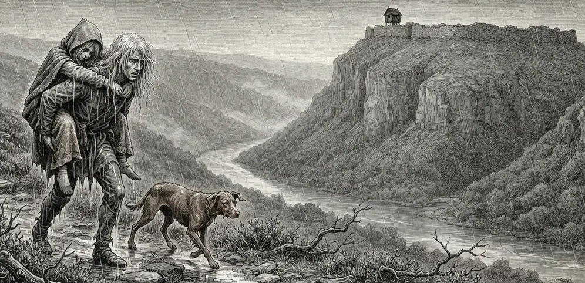
Los suevos
Fue Ricila el que encontró el hoyo del fuego.
Llevaban doce días en Lusitania, bajando y subiendo por las sierras, sin encontrar más que aldeas vacías y muertos. Teudo quería volver. Se lo dijo a Ricila la noche del undécimo día: que ya habían visto bastante, que allí no había nadie, que Fravita tendría que conformarse con saber eso. Ricila le dijo que dos días más. Teudo le preguntó para qué. Ricila no supo contestarle, o no quiso.
El duodécimo día, a media mañana, en un barranco de robles junto a un arroyo casi seco, Ricila se bajó del caballo y se agachó junto a una piedra.
—Mira.
Teudo miró. No vio nada. Un poco de tierra removida, unas hojas secas.
Ricila apartó las hojas. Debajo había un hoyo en la tierra, hondo como un antebrazo, con cenizas en el fondo. Y otro hoyo al lado, más estrecho, unido al primero por debajo. Las cenizas estaban frías, pero no mucho; no habían llovido encima.
—Es un fuego alano —dijo Ricila—. Para que no se vea el humo. Lo hacían los que pasaban por los vados. Uno me enseñó.
Teudo se bajó del caballo. Miró alrededor, al barranco, a los robles, con la mano en la espada. No había nadie.
—Tres días —dijo Ricila, tocando la ceniza—. Cuatro, como mucho.
Siguieron el rastro. No era fácil; quien fuera que había encendido aquel fuego sabía no dejar rastro. Pero el que sabe no dejar rastro también se cansa, y al segundo día encontraron otro hoyo, peor hecho, menos hondo, con el humo mal escondido, porque había ennegrecido una piedra. Y al lado, en el barro del arroyo, huellas.
Ricila las estudió mucho rato, agachado.
—Un hombre —dijo—. Grande. Con botas alanas, de suela blanda. —Señaló una huella, otra, otra—. Arrastra el pie izquierdo. Mira: la punta deja una raya. Está cojo, o herido. Y va cargado. Pisa hondo. Más hondo de lo que pisaría un hombre solo.
—¿Cargado con qué?
Ricila no contestó. Señaló otra cosa, junto a las huellas del hombre. Huellas pequeñas, de perro.
—Y un perro.
Teudo se quedó mirando las huellas. Un alano, herido, cojo, cargado con algo, con un perro, solo, en mitad de las sierras de Lusitania, yendo hacia el norte. Hacia el Duero. Hacia ellos.
—Puede ser uno de los de Addax —dijo—. De los que huyeron de la batalla.
—Puede ser.
—Puede ser peligroso.
Ricila se levantó. Miró hacia el norte, hacia donde iban las huellas, sendero arriba, entre los robles.
—Va cargado y cojo y lleva tres días haciendo fuegos peores —dijo—. No va a durar mucho más. Sea quien sea.
Teudo lo miró. Su hermano tenía diecisiete años y la cara de cuando había vuelto del castro con el escudo de Odo a la espalda. Tranquila. Seria. Decidida.
—¿Y qué quieres? —le dijo—. ¿Encontrarlo?
—Sí.
—¿Para qué?
Ricila se subió al caballo.
—Para saber quién es antes de cortarle la cabeza —dijo—. Es lo que dijo Fravita.
Siguieron las huellas hasta que se hizo de noche. Luego encendieron su propio fuego, uno normal, que se viera bien, por si acaso, y Teudo no durmió en toda la noche, con la lanza en las rodillas, oyendo los ruidos del bosque. Ricila sí durmió. Se durmió enseguida, con las hojas de Idacio debajo de la cabeza como almohada.
A medianoche empezó a llover.
Por la mañana, con la lluvia, perdieron el rastro. El agua había borrado las huellas del arroyo, los hoyos de los fuegos, todo. Ricila se pasó la mañana dando vueltas por el barranco, agachado, buscando, empapado, y Teudo le seguía con los caballos de la rienda, callado, porque sabía que no serviría de nada decirle que lo dejara.
A mediodía oyeron un relincho.
Venía de abajo, de un camino de pastores que corría por el fondo del valle. Teudo dejó los caballos a Ricila y bajó a mirar, despacio, entre los robles, con la lanza en la mano. Eran cuatro hombres. A pie, mal vestidos, con barbas de semanas y armas de muchos sitios: una espada romana, un hacha franca, dos lanzas. Llevaban de la rienda una yegua torda, vieja, y un potro castaño. Uno de ellos tenía la mano envuelta en un trapo ensangrentado y cojeaba.
Teudo se quedó mirando la yegua. Era de raza buena, de las del sur. Y el potro llevaba en el anca una marca que Teudo conocía porque la había visto en los caballos de los alanos que cruzaban los vados: una especie de tridente, la marca de los rebaños de Addax.
Volvió a subir.
—Llevan un caballo alano —le dijo a Ricila—. Y una yegua que no es suya. Y uno está mordido por un perro.
Ricila lo miró. No hizo falta decir nada más.
No fue una pelea. Teudo bajó por el camino a caballo, al trote, con la lanza bajada y el escudo al brazo, como le había enseñado Fravita, y Ricila detrás, a caballo también, sin armas, gritando en latín algo que Teudo no entendió. Los cuatro hombres miraron al guerrero suevo que se les venía encima, miraron al muchacho del pelo largo que gritaba detrás, y echaron a correr monte arriba, dejando los caballos en el camino.
Ricila desmontó y cogió la yegua de la rienda. Era una yegua tranquila, tonta, que se dejó coger sin protestar y luego le metió el hocico en el pecho buscando algo de comer.
—¿Qué les has gritado? —le preguntó Teudo.
—Que veníamos cien detrás —dijo Ricila. Se encogió de hombros—. Es lo que gritaba Odo en las historias de Gaiso.
Teudo se rio. Era la primera vez que se reía en muchos días. Luego dejó de reírse, porque Ricila estaba mirando la silla de la yegua, una silla vieja de cuero, gastada, y en el arzón, colgada de una correa, había una bolsa pequeña de tela. Ricila la abrió. Dentro había un higo seco, arrugado, y un trozo de cera con unas letras torcidas grabadas.
Ricila las leyó en voz alta, despacio, en latín.
—«Para la doma de los potros. Volveré.»
Se quedaron los dos callados, en mitad del camino, bajo la lluvia, con la yegua tonta entre ellos.
—El alano no va solo —dijo Ricila al fin—. Lleva a alguien. Alguien que guarda un higo y una tablilla. —Miró hacia el norte, hacia el Duero—. Y ya no tiene caballo.
Los vándalos
Asta no supo cuándo empezó la fiebre. Supo solo que un día tenía frío y al siguiente tenía calor, y que el frío y el calor eran la misma cosa.
Había sido la lluvia. Las primeras lluvias del otoño, en lo alto de las sierras, las que caen de golpe después de un verano entero sin caer. Les pilló de noche, sin refugio, en un collado pelado, y se mojaron hasta los huesos, ella y Arsak y el perro y la yegua. Arsak la tapó con su manto y con el de Félix. No sirvió de nada. Por la mañana tiritaba. Al mediodía no quería comer. Por la tarde, cuando Arsak le puso la mano en la frente, la retiró como si se hubiera quemado.
Luego, la yegua.
Fue la segunda noche de la fiebre. Asta no se enteró; dormía, o lo que fuera aquello que hacía, tumbada junto al fuego escondido, temblando. Se enteró después, por Arsak, que se lo contó sin querer contárselo: que habían venido unos hombres en la oscuridad. Tres o cuatro. No supo quiénes. Bandidos, desertores, gente de nadie, de esa que se movía por las tierras de nadie. Se llevaron la yegua y el potro que quedaba. El perro les mordió a uno; le oyeron gritar. Arsak se levantó con la espada y no los encontró. Cuando volvió, el perro estaba sangrando por una oreja y la yegua tonta ya no estaba.
Niebla. La yegua torda de su padre, la que su padre había cambiado por veinte jarras de aceite, la que se metía piedras en los cascos. La que había sacado a Asta de la granja.
Con la yegua se habían ido también la bolsa de la silla, el higo de Silvano y la tablilla de Félix, la de las letras que no sabía leer. Asta no lloró por la yegua. No tenía fuerzas para llorar.
Desde entonces, todo fue como en un sueño. Un sueño largo, caliente, que olía a hojas mojadas y al sudor de Arsak. Porque Arsak la llevaba a la espalda. Asta lo sabía a ratos: notaba la espalda de él contra su pecho, los brazos de él sujetándole las piernas, su respiración, cada vez más corta, cada vez más ronca. Notaba que él cojeaba. Notaba el olor.
El olor dulce y podrido. Como fruta pasada. El mismo que había olido en la granja, el día que llegó, cuando Prisca le cortó la túnica.
Asta quería decirle algo. Quería decirle que la dejara en el suelo, que andaba sola. No le salían las palabras. Le salían otras, que no eran suyas, que no sabía de dónde venían.
Soñaba.
Soñaba con su madre, que estaba en el patio de la granja amasando pan y no se volvía. Soñaba con su padre, sentado en el banco junto al pozo, pelando una naranja, que le decía que se diera prisa, que la yegua tenía una piedra en el casco. Soñaba con Prisca. Prisca la llevaba de la mano por una villa con el suelo lleno de piedrecitas de colores, peces, leones, ciervos, un hombre con una lira, y le contaba otra vez la historia. Un hombre que bajaba a buscar a una mujer a un sitio oscuro, debajo de la tierra. Que la sacaba. Que ya casi la tenía fuera, a la luz. Y que se volvía a mirarla. Y la perdía.
—¿Por qué se volvió? —le preguntaba Asta en el sueño.
—Porque la quería —le contestaba Prisca.
Y luego Prisca se soltaba de su mano y se iba por un pasillo oscuro, y Asta la llamaba, y Prisca no se volvía.
A ratos se despertaba. Veía cielo, ramas, lluvia. Veía la cara de Arsak muy cerca, sobre ella, gris, con el pelo blanco pegado a la frente por la lluvia, diciéndole algo en alano que no entendía. Veía al perro marrón con la oreja rota, mirándola, gimiendo. Una vez vio un río. Un río grande, muy abajo, en el fondo de un valle, brillando entre la niebla. Y al otro lado, en lo alto de un monte, una torre. Una torre de madera, pequeña, negra contra el cielo gris.
Luego no vio nada más durante mucho tiempo.
Los alanos
Arsak la llevó a cuestas cuatro días. No supo nunca cómo.
Al principio no pesaba. Era una niña flaca de catorce años, toda huesos, que había comido mal todo el verano. La subió a la espalda y echó a andar hacia el norte por el sendero de los pastores, con el perro delante, y pensó que en dos días, tres como mucho, llegaría al Duero. Que al otro lado estarían los suevos. Que los suevos tendrían fuego, y comida, y alguna mujer que supiera de fiebres. Que los suevos no eran sus enemigos. O no del todo.
El segundo día empezó a pesar.
No ella. Él. El costado. La herida que se había abierto al caer del caballo se le abrió del todo con el peso de la niña, con el andar, con el roce de la ropa mojada, y el segundo día ya olía, y el tercero supuraba, y el tercero por la tarde Arsak empezó a ver las cosas de lejos. Como si estuviera detrás de un cristal. Como si no fuera él el que andaba.
Buscó comida. No había. Las sierras de Lusitania estaban vacías; los pastores se habían ido con el otoño, los rebaños con ellos, los que huían de la guerra se habían comido todo lo que había por el camino. Encontró unas bellotas. Las masticó él y se las dio a la niña en la boca, como hacen los pájaros, y la niña no las tragó. Encontró agua. Le mojó los labios. La niña no abrió la boca.
Buscó fuego. Llovía. Toda la leña estaba mojada. Hizo el hoyo, el alano, el que no echa humo, y la leña no prendió. Sopló hasta marearse. No prendió. Se sentó junto al hoyo con la niña en los brazos, temblando los dos, y no prendió.
Buscó a alguien. A cualquiera. Gritó, desde lo alto de un collado, en alano y en vándalo y en el poco latín que sabía. Nadie contestó. Solo el eco, devolviéndole su voz desde las sierras, más débil, como si fuera otro el que gritaba muy lejos.
No había nada. No había nadie. Solo él, y la niña, y el perro.
La cuarta noche, en un hueco entre dos rocas, con la niña en el regazo, Arsak se dio cuenta de que la niña se moría.
Lo supo como se saben esas cosas, sin que nadie se lo diga. Por cómo respiraba: cortito, muy deprisa, como un pájaro. Por cómo tenía las manos, frías, aunque la frente le quemaba. Por cómo había dejado de temblar. La había visto dejar de llorar en la granja de su padre, hacía un año, y sabía que dejar de temblar era como dejar de llorar. Que era peor.
Arsak sacó la espada. La clavó en la tierra, delante de él, entre las rocas. No podía arrodillarse; tenía a la niña en brazos y no podía soltarla, y no tenía fuerzas para levantarse. Se quedó sentado, con la espada clavada delante, con la luna en la hoja, mojada de lluvia.
No sabía rezar. Su padre no le había enseñado nunca las palabras, porque decía que no hacía falta, que a la espada no se le pide nada, que se le está delante. Arsak había estado delante de la espada toda su vida. No le había pedido nunca nada más que una cosa: el nombre de una niña.
Ahora tenía a la niña en brazos. Y se moría.
—No —le dijo a la espada. En alano. Muy bajo.
La espada no contestó, como no contesta nunca.
—No —repitió—. Esta no. Llévame a mí. Me da igual. Llévame a mí y esta no.
Se le quebró la voz. Hacía muchos años que no lloraba; desde la loma de la Galia, quizá, junto a la tumba de su padre, o desde antes, desde la estepa que no había visto. Lloró. Lloró sin ruido, con la cara contra el pelo sucio de la niña, con la espada clavada delante, y el perro marrón se le acercó y le puso el hocico en la mano, y Arsak no tenía mano libre para acariciarle.
Por la mañana, con la primera luz, siguió andando.
No sabía cómo. Las piernas andaban solas. La niña en la espalda, atada con el manto de Félix, para no soltarla si se caía. El perro delante. La herida ardiendo en el costado. La lluvia.
A media mañana, desde lo alto de una loma, vio el río.
Abajo, muy abajo, en el fondo de un valle verde, entre la niebla, un río ancho y lento, gris como la piel de un caballo viejo. El Duero. Y al otro lado del río, en lo alto de un monte que caía a pico sobre el agua, una torre. Una torre de madera, pequeña, negra contra el cielo.
Arsak se quedó mirándola. Pensó que tenía que bajar hasta el río. Pensó que tenía que buscar un vado. Pensó que tenía que cruzar.
Dio un paso. Dos.
Al tercero, las piernas dejaron de andar.
El encuentro
Orillas del Duero, frontera de Gallaecia – otoño de 418
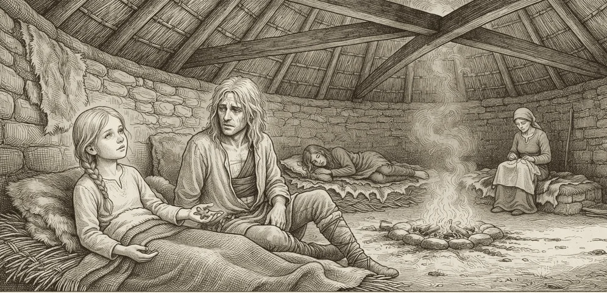
Los suevos
Los encontraron a media tarde del día siguiente, en una ladera de brezo que bajaba hacia el Duero, a la vista de la Peña.
Fue el perro el que les avisó. Un perro marrón, mediano, con una cicatriz calva en el cuello y una oreja rota que todavía sangraba, que salió de entre los brezos al oír los caballos y se plantó en mitad del sendero, con las patas abiertas y el lomo erizado, gruñendo. No ladraba. Gruñía bajo, sin parar, enseñando los dientes. Teudo había visto muchos perros. Sabía cuándo un perro amenaza y cuándo un perro defiende. Aquel defendía.
Detrás del perro, a diez pasos, en el brezo, había un hombre tirado.
Estaba boca abajo, con un brazo extendido hacia delante, como si se hubiera caído andando. Era grande. Tenía el pelo blanco, casi plateado, pegado a la cabeza por la lluvia, y una cota de escamas de hierro rota por un costado y remendada con cuero. Y llevaba atado a la espalda, con un manto, un bulto. Un bulto pequeño, envuelto en otro manto de lana gruesa, con capucha.
Teudo bajó del caballo con la lanza en la mano. El perro le saltó. No a morder: a parar. Se le plantó delante, a un palmo, gruñendo, sin dejarle pasar. Teudo levantó la lanza.
—No —dijo Ricila detrás de él.
Ricila bajó del caballo y se agachó. Despacio. Muy despacio. Se puso a la altura del perro, con las manos abiertas, y le habló. No en suevo. En una lengua que Teudo no conocía, con unas palabras raras, guturales, que Ricila había aprendido aquel invierno de los alanos que cruzaban los vados. El perro dejó de gruñir. Se le quedó mirando con la cabeza ladeada. Ricila siguió hablándole. Le tendió la mano. El perro la olió.
Luego se apartó. Fue hasta el hombre tirado, se tumbó a su lado y apoyó el hocico en su hombro.
Ricila se acercó. Teudo detrás, con la lanza.
El hombre estaba vivo. Respiraba. Tenía los ojos abiertos y les miró llegar sin moverse, y cuando estuvieron cerca, movió el brazo. Despacio, temblando, como se mueve algo muy pesado. Se llevó la mano al cinto. Sacó un cuchillo.
No pudo levantarlo. Teudo lo vio intentarlo. Lo vio apretar los dientes, tensar el brazo, levantar el cuchillo un palmo del suelo. Luego el brazo le tembló y el cuchillo se le cayó de la mano, en el brezo, y el hombre cerró los ojos un momento, y cuando los abrió ya no miraba a Teudo. Miraba a Ricila.
Le dijo algo. En alano, ronco, muy bajo.
Ricila se arrodilló a su lado.
—¿Qué dice? —preguntó Teudo.
Ricila tardó en contestar.
—Dice: a ella. —Tragó saliva—. Dice: a mí no. A ella. Salvadla a ella.
Ricila desató el manto que sujetaba el bulto a la espalda del hombre. Lo hizo con mucho cuidado, con los dedos torpes, porque los nudos estaban empapados y apretados. Apartó la capucha.
Era una muchacha. De catorce o quince años, flaca, con el pelo claro sucio pegado a la cara y la piel tan blanca que casi se veían las venas. Tenía los ojos cerrados y la boca entreabierta, y respiraba tan poco y tan deprisa que Teudo tuvo que mirar dos veces para saber que respiraba.
Ricila la cogió en brazos. No pesaba nada. Se quedó así, arrodillado en el brezo, con la muchacha en brazos, mirándola. Mirándole la cara. Mucho rato. Más del que hacía falta.
—Es vándala —dijo Teudo.
Lo había visto enseguida, por el pelo, por la cara, por algo. Era como las del camino de la Galia.
—Ya lo sé —dijo Ricila sin levantar la vista.
—Y él es alano.
—Ya lo sé.
Teudo miró hacia el norte. Hacia la Peña, en lo alto del monte, al otro lado del río. Hacia donde estaban los asdingos y los alanos de Gunderico, al este, que miraban hacia sus valles. Hacia donde Fravita doblaba las guardias cada semana por miedo a lo que venía de allí. Aquellos dos eran de allí. Eran el enemigo. Lo que había que guardar del río.
Luego miró al hombre en el suelo, que les miraba con los ojos medio cerrados. Que había llevado a aquella muchacha a la espalda no sabía cuántos días, herido, cojo, sin caballo, por las sierras de Lusitania. Que había intentado levantar un cuchillo para defenderla y no había podido. Que les había pedido que la salvaran a ella.
Pensó en Odo, bajando del castro a su espalda.
—Nos los llevamos —dijo.
Ricila levantó la cabeza.
—A la Peña —dijo Teudo—. Los dos.
—Fravita no...
—Fravita dijo que quería saber quiénes eran antes de cortarles la cabeza. —Teudo se agachó, cogió al hombre por debajo de los brazos y tiró de él—. Pues que lo sepa. Ayúdame.
Lo subieron entre los dos a la yegua torda, que se dejó cargar sin protestar, tonta y tranquila. Al ver al hombre, la yegua le metió el hocico en el pecho y resopló, y el hombre abrió los ojos, la miró y dijo una palabra. Teudo no la entendió. Ricila sí.
—Niebla —dijo Ricila—. La ha llamado Niebla.
Los vándalos
Asta oía voces.
No sabía dónde estaba. No sabía si era de día o de noche, si estaba en el hoyo del establo o en la cama de la villa de Tecla o en las sierras. A ratos tenía frío y a ratos calor, y a ratos no tenía nada, y entonces flotaba, como flotaba en el remanso del río de la Bética, boca arriba, mirando el cielo entre las hojas de los sauces.
Las voces hablaban una lengua que casi entendía.
No era vándalo. Era otra cosa. Pero se le parecía tanto que a veces cogía palabras sueltas, como se cogen peces con la mano en un arroyo: agua, fuego, despacio, niña. Eran voces de hombre y de mujer. Una de mujer, sobre todo, mayor, grave, que estaba siempre allí, cerca, día y noche, y que hablaba poco y bajito.
Unas manos. Eso lo supo también. Unas manos ásperas, de trabajo, de mujer que ha tejido mucho y amasado mucho, que le ponían paños fríos en la frente, que le levantaban la cabeza para darle de beber, que le quitaban la ropa mojada y le ponían otra seca, que le pasaban un trapo húmedo por los brazos y las piernas toda la noche, sin parar, como hacía Prisca. Asta pensó a ratos que eran las manos de Prisca. Luego pensó que eran las de su madre. Luego supo que no eran de ninguna de las dos, y no le importó.
Una vez oyó leer.
Estaba en el sueño de la villa de los mosaicos, otra vez, con Prisca, delante del hombre de la lira, y de pronto oyó una voz de chico que leía en latín. Despacio, con cuidado, tropezando en las palabras largas. No entendía lo que leía. Era una historia, larga, con muchos nombres. La voz se paraba a veces, como si mirara algo, y luego seguía. Asta quiso abrir los ojos para ver quién era. No pudo. Pero la voz se quedó con ella mucho rato, y cuando se fue, Asta la echó de menos.
Otra vez soñó con la historia del hombre de la lira. Pero esta vez la historia era distinta.
Esta vez era ella la que estaba abajo, en el sitio oscuro, debajo de la tierra. Y era alguien el que bajaba a buscarla. No veía quién. Veía solo una espalda, delante de ella, en la oscuridad, subiendo por un camino de piedras hacia la luz, y ella iba detrás, de la mano, despacio, sin fuerzas. Y sabía que la historia acababa mal. Que el de delante se iba a volver a mirarla. Que la iba a perder.
No se volvió.
Subió y subió, sin volverse, con la espalda delante de ella, y Asta notaba la mano que la llevaba, una mano grande, áspera, que no la soltaba. Y llegaron arriba. Y había luz.
Asta quería decirle que no se había vuelto. Que lo había hecho bien. Que Prisca se había equivocado: que el que quiere a alguien no se vuelve a mirarlo, sino que tira de él hacia arriba sin parar, aunque no lo vea, aunque no sepa si viene.
No le salían las palabras. Pero la mano no la soltó.
Los alanos
Arsak se despertó en una casa redonda.
Lo primero que vio fue el techo. Un techo de paja en punta, oscuro de humo, sobre unas vigas de roble que se juntaban en el centro como los radios de una rueda. Lo segundo, una pared de piedra, curva, sin esquinas. Lo tercero, una mujer sentada junto al fuego, en el centro de la casa, cosiendo.
Era una sueva. Una mujer de cincuenta años o más, delgada, con el pelo gris recogido en un pañuelo y unos ojos grises, muy quietos, que levantó de la costura al oírle moverse.
Le dijo algo. Arsak no la entendió.
Intentó levantarse. No pudo. Tenía el costado vendado, apretado, y le dolía, pero era un dolor distinto, limpio, no el dolor sordo y podrido de las sierras. Volvió a intentarlo. La mujer dejó la costura, se levantó, vino hasta él y le puso la mano en el pecho, sin fuerza, y él se quedó quieto.
—La niña —dijo en vándalo.
La mujer le entendió. Señaló con la barbilla hacia el otro lado del fuego.
Había otra cama. Un jergón de paja junto a la pared curva, con una manta de lana verde. Y en el jergón, la niña. Dormida, o algo parecido. Con la cara blanca y el pelo claro extendido sobre la manta, limpio ahora, peinado. Y a su lado, sentado en el suelo con la espalda contra la pared, un muchacho de diecisiete años con el pelo largo y suelto, sin el nudo de los suevos, dormido con la cabeza caída sobre unas hojas de papel cosidas con un cordel.
La mujer le explicó despacio, con las manos y con palabras sueltas, lo que pudo. Que estaban en la Peña, la fortaleza sueva sobre el río. Que los habían traído sus hijos, los dos, el mayor y el pequeño, hacía cinco días. Que el jefe de la fortaleza, un hombre de barba gris, no quería, porque eran enemigos, y que su hijo mayor le había dicho que respondía él. Que el pequeño no se separaba de la niña. Que leía. Que leía toda la noche, libros de romanos, en voz alta, porque decía que la niña le oía.
Que la niña tenía una fiebre muy mala. Que llevaba cinco días sin despertarse.
Arsak se levantó. La mujer intentó pararlo otra vez. Esta vez no se dejó. Se levantó apoyándose en la pared, con el costado gritándole, y cruzó la casa redonda, rodeando el fuego, despacio, un paso, otro, hasta el jergón de la niña. Se dejó caer en el suelo a su lado.
El muchacho se despertó. Le miró. No dijo nada. Se apartó un poco para hacerle sitio.
Arsak cogió la mano de Asta. Estaba caliente. Menos que en las sierras. Pero caliente.
Se quedó allí. Ese día y la noche siguiente. La mujer sueva le trajo de comer y comió sin darse cuenta de lo que comía. El muchacho siguió leyendo, a ratos, en voz baja, y Arsak le escuchaba sin entender. Una vez entró el otro, el mayor, el de la lanza, un hombre de veintidós años con el pelo anudado sobre la sien y la cara seria, y se quedó de pie en la puerta mirándolo un rato. Luego se acercó, se agachó a su lado y le dejó en el suelo una cosa envuelta en un trapo.
Era la bolsa de la yegua. Dentro estaban un higo seco y una tablilla de cera.
—Niebla está en el establo —le dijo el suevo, despacio, en un latín de cuartel que Arsak entendió—. Y el perro. Comen.
Arsak le miró. El suevo le sostuvo la mirada.
—¿Cómo te llamas? —le preguntó Arsak.
—Teudo. —Señaló con la barbilla al muchacho de los libros—. Ese es Ricila. Mi hermano. —Y luego, después de un momento—: ¿Y tú?
—Arsak. —Señaló a la niña—. Asta. Hija de Guntario.
Teudo asintió. Se quedó un momento más, como si quisiera decir algo. No lo dijo. Se levantó y se fue.
Esa noche Arsak no clavó la espada en la tierra. No la tenía; se la habían quitado al traerlo, y estaba colgada en la pared de la casa de Fravita, como estaban las de todos los extraños que entraban en la Peña. Pero tenía la fíbula. Se la sacó del manto, el pájaro de bronce con dos piedras rojas por ojos, y la puso en la palma de la mano de la niña, y le cerró los dedos encima, como se la había cerrado a él el padre de ella, doce años antes, en la orilla de un río helado.
No pidió nada. No sabía pedir. Se quedó mirándola.
Amaneció. Entró luz por la puerta de la casa redonda, una luz gris, de otoño, de lluvia que se acaba. El muchacho dormía otra vez sobre sus libros. La mujer sueva dormía junto al fuego, sentada, con la costura en el regazo. Fuera cantó un gallo, y luego otro, y luego se oyó a alguien sacar agua de un pozo.
La mano de la niña se movió.
Arsak la miró. No se atrevió a moverse. La mano se cerró sobre la fíbula, despacio, apretándola, como se aprieta una cosa que uno reconoce en sueños.
Luego Asta abrió los ojos.
Miró el techo de paja. Miró la pared de piedra, curva. Miró la luz de la puerta. Y luego giró la cabeza, muy despacio, y le vio a él, sentado en el suelo a su lado, con el pelo blanco y la cara gris y los ojos mojados.
Le miró un rato largo. Como le había mirado siempre. Desde los brazos de su madre en el Rin. Desde el otro lado del arroyo. Desde el hoyo del establo.
—Arsak —dijo. Con la voz tan ronca que casi no se oyó.
Él no contestó. No podía.
Asta abrió la mano y miró lo que tenía dentro. El pájaro de bronce. Los dos ojos rojos.
—No te has vuelto —dijo.
Arsak no entendió lo que quería decir. Lo entendió mucho después, años después, en otra tierra, cuando ella se lo explicó. Aquella mañana solo supo una cosa, la única que importaba.
Que la niña había abierto los ojos.